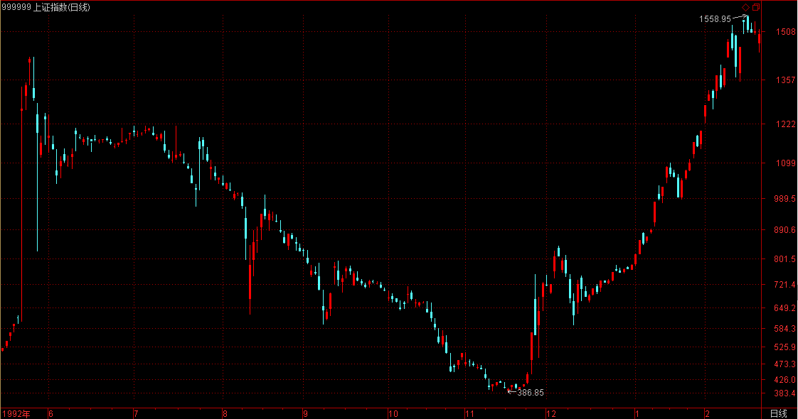
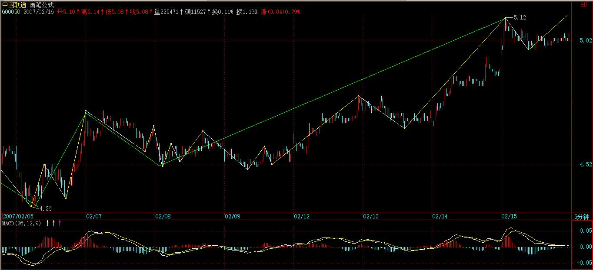
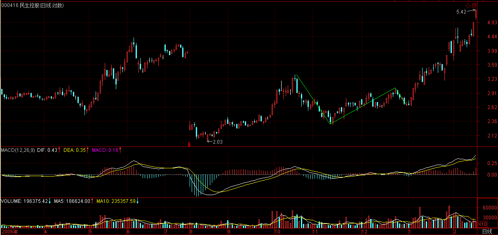
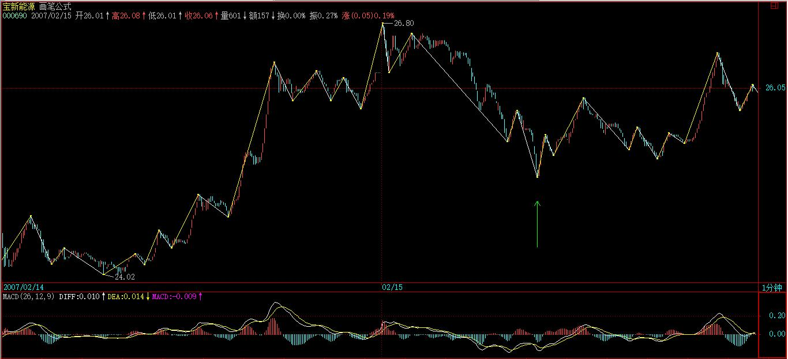
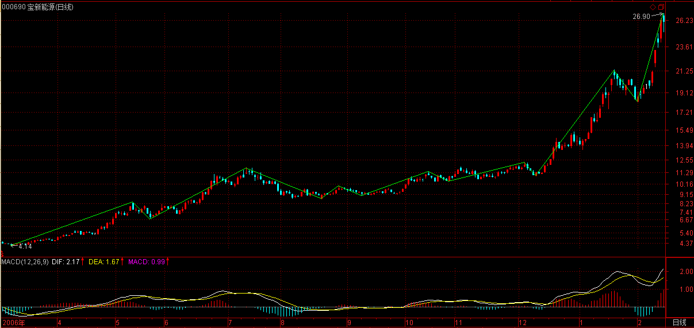
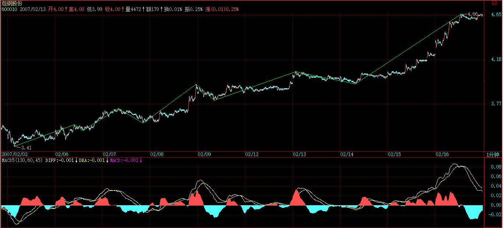
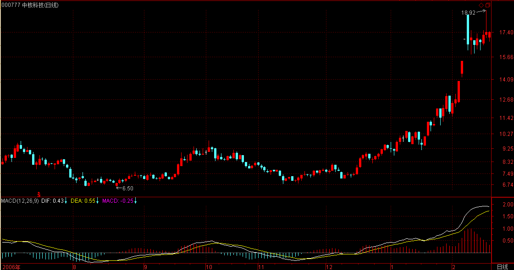
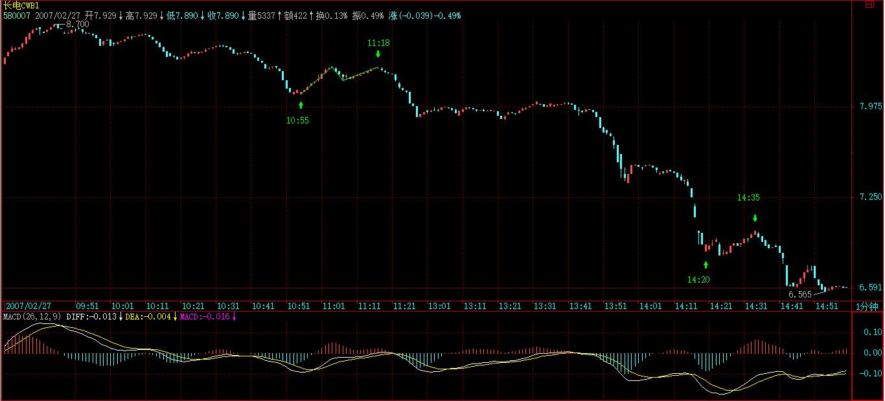

(2007-02-15 15:16:12)
对于小资金来说，资金管理不算一个特别大的问题，但随着赢利的积累，资金越来越大，资金管理就成了最重要的事情。
一般来说，只要有好的技术，从万元级到千万元级，都不是什么难事情。但从千万以后，就很少人能稳定地增长上去了。所有的短线客，在资金发展到一定后，就进入滞涨状态，一旦进入大级别的调整，然后就打回原形，这种事情见得太多了。因此，在最开始就养成好的资金管理习惯，是极为重要的。
投资，是一生的游戏，被打回原形是很可悲的事情，好的资金管理，才能保证资金积累的长期稳定，在某种程度上，这比任何的技术都重要，而且是越来越重要。
对于大资金来说，最后比拼的，其实就是资金管理的水平。
【韶山映山红】若禅精舍（陈秋明）：
常见的，资金流、打板流等以短线强烈波动为操作标的之类模式，一个是太累，二是最重要的，那就是不可避免的会有较大的回撤。在这方面超短线做到顶尖，资金大概都不是大问题，但通常都还有瓶颈。
本文写于2007年，10年后的资金环境已经发生变化，对于现在的环境来说，就不是一千万了，而是三千到五千万之间会遇到滞涨期。如果是短线积累起来的，一来已经习惯了超短线的操作模型与思维方式，转换风格不易；二来更换其他操作方式，其刺激程度与短期收益比超短线弱的太多了。这是很难切换的，时间成本和金钱成本都需要比较多的付出。而在半生不熟的调换中，遇到大级别调整而反应不够，被打回原形很正常，此外从小的资金量超短上来，一般操作的都是小盘股居多，资金量小的时候船小好调头，遇到下跌马上可以出来，资金量大了就不同了，集中卖会引起下跌，进而破坏走势，容易让没有来得及走的筹码在较低的位置才有机会出来，更何况剧烈的下跌根本就不给大资金离场的机会，这样被打回原形大概是最常见的，2015年那会有好多。
2018-10-17 】
资金，必须长期无压力，这是最重要的。有人借钱投资，然后赢利后还继续加码，结果都是一场游戏一场梦。【韶山映山红】这里说的问题是“借钱投资”，是杠杆的问题，“然后赢利后还继续加码”，是继续加大杠杆的问题，相当于杠杆加杠杆。对策：首先是不要加杠杆。其次，如果一定要加杠杆，也是按照努力让成本为零的目标去减杠杆。】
96年，本ID认识一东北朋友，大概是不到10万元开始，当时，可以高比例透资，1比2、3很普通，1比10也经常见，当时的疯狂，不是现在的人能想象的。在96年的牛市中，他很快就从不到10万变成2千多万，当时，透资的比例也降下来，大概就1比1多点，如果当时把所有透资还了，就没有后来的悲剧了。
【韶山映山红】000023深天地A。】
对于他来说，96年最后三周一定是最悲惨的，股票从12元在三周内急跌到6元以下，有人可能要问，那他为什么不先平仓？老人都知道，那次下跌是突然转折，瀑布一样下来的，如果没有走，根本没有走的机会，最后能走的时候，由于快触及平仓点，他的仓位在6元多往下一直平下去，根本没有拒绝的可能，证券部要收钱，最后，还了透资，只剩下不到20万，真是一场游戏一场梦，又回到原点。【韶山映山红】一倍的杠杆，遇到腰斩就归零。】
但这还不是最戏剧性的，最悲惨的是，这股票从他平完仓的当天开始到97年5月，不到5个月的时间，从6元不到一直涨到30元以上，成了最大的黑马，
这股票是深圳本地股，后来从30多元反复下跌，05年到了3元以下，目前价位在他被开始平仓的位置，6元多点。
【韶山映山红】若禅精舍（陈秋明）：
同样的故事，在2015年的下跌中有很多，15年那会不仅有大比例投资，还有股指期货。听闻有人20万做到5000点附近的2个亿，觉得到顶了，就做了股指期货的空，同时为了保险起见，买了三五只股票做对冲。5月初大跌后，又向上涨了一段，股票在涨，但期指在跌，并且期指跌的比股票涨的还多，于是对自己的判断开始怀疑了，于是股票继续做多，期指空翻多，后面的故事大家都知道了，现货和期货double kill之后，还有20来万。
故事是用来看的、听的、写的。但故事里面的事情是完全可能发生的，很多人有赚了多少多少就退出保存胜利果实之类的无聊想法，其实怎么说呢，很难说。人的本性在那个时候，有极大概率让你选择另外一个方向，不要高估自己的控制力，在刚开始的时候，就把自己这种念头给断了，别给自己机会。15年那会在上海听说过的类似故事，大概可以拍上百集连续剧了。
而杠杆，之前就说过，如果你技术过关，那么不需要杠杆，只不过是时间问题罢了，可能增长速度慢一些，但可以完全避开这方面潜在的风险，这风险大到一次就打回原形，接近无限大的风险，什么利润对冲都是白搭。如果你技术不过关，那杠杆只是起到亏损加速的作用，就更不必要了。很多人觉得股票做不好去期货试试，去外汇试试，加个杠杆试试，都是妄人妄念，股票是所有品种里面最简单的，连股票都不能稳定盈利，就别去其他地方找不自在了。
2018-10-17 】
一个无压力的资金，是投资的第一要点，虽然前面反复说过，但说完上面的例子，还是要再次强调。
另外一个重要的，就是自己的资金，一定不能交给别人管理，自己的盘子，一定要自己负责，不能把自己的命运交给别人。【韶山映山红】交给别人就是失控。】
又是一个故事，时间要提早4、5年，92年的事情了。这朋友，92年已经有几千万的资金，在当时也算可以了。结果，因为家里有事处理，把盘子交给一个朋友管理，那人还是后来特别出名的人，说出来，市场里的老人都知道，当时大盘从1400多点回跌，已经跌了很多，以为到底部了，结果这家伙自作主张透资抄底，大盘却一直下跌，等这朋友过了两、三周回来，一切早已灰飞湮灭。那次大盘一直跌破400点才到底部，半年内一共下跌了1000多点，【韶山映山红】抄底也就算了，还不至于伤筋动骨，偏偏还是透资，那就尸骨无存了。】
后来从400点以下不到4个月又创出1558点的历史高位，市场就是这么残酷，把命运交给别人，就是这样了。

【韶山映山红】若禅精舍（陈秋明）注：
这个问题大概很多人都不存在，把资金交给别人，和帮别人管理资金，其风险都是类似的，没有什么本质不同，牛市里面各种私底下的私募协议多如牛毛，一个熊市全部关门。你如果能明确判断牛市熊市，那么没必要把资金交给他人，如果不能判断，那相当于你把资金的主动权交给了别人，对各位的忠告就是：永远不要让自己的资金处于被动的局面。这条忠告在操作中同样重要。当然，私募与公募基金，不能一棍子打倒，把资金交给更加专业的团队，理论上是可行的，其期望收益率比自己操作来的更好，但搞清楚这团队的专业程度是必须的，这是另外一个话题了。
2018-10-17 】
不能把自己放置在一个危险的境地，所谓背水一战、置之死地而后生，都不是资本市场应该采取的态度。这样的态度，可能一时成功，但最终必然失败。【韶山映山红】马谡失街亭，说的也是“背水一战、置之死地而后生”的台词，一次小战役失利，就葬送了诸葛亮的北伐大业。】
技术分析的最重要意义在于，让你知道市场究竟在干什么，市场在什么位置该干什么，让你知道，一个建立的仓位，如何持有，如何把一个小级别的持有逐步转化为大级别的持有，又如何退出，这一切，最终都是为资金管理服务的，投资最终的目的不是股票本身，而是资金，没收回资金，一切都没意义。股票都是废纸，对资金的任何疏忽，都会造成不可挽回的损失。
任何人，必须明确的是，多大的资金，在市场中都不算什么，而且，资金是按比例损失的，一万亿和一万元，按比例损失，变成0的速度是一样的。无论多大的资金，要被消灭，可以在举手之间，因此，永远保持最大的警觉，这是资金管理最大的、最重要的一点，没有这一点，一切管理都是无用的。
【韶山映山红】若禅精舍（陈秋明）注：
资金越大，越需要考虑退出的问题，这对很多散户来说不是问题，随时可以一秒钟把筹码换成资金，但这对大资金不现实。像有些股票，卖一到卖五的挂单拢共就五百万，你有五千资金怎么买？一次扫单过去十几个价位，那样介入成本就会高；慢慢小单子买也可以，但仍然会存在成本的问题，因为走势是波动的，随着你慢慢买进，成本还是高起来，这部分买单本身就可以推高价格；要么就分仓，买几个股票，那样监控就会比较麻烦，除非是团队运作。
上面还只是买，而卖就更麻烦了，买一到买十拢共五百万买单，你有五千万筹码要卖怎么办？所以无论是介入，还是退出，都是个比较麻烦的事情，有人说操作挂单多的股票，问题是挂单多的股票往往筹码比较散，不仅缺少向上的动力，这样的股票更是普遍价格低，总价还是差不多。这些问题，随着资金的增长，都会遇到，过去了，又是海阔天空，但应该有非常多的人是过不去的。
2018-10-17 】
一个最简单又最有效的管理，就是当成本为0以前，要把成本变为0；【韶山映山红】先卖后买，回补同样数量的股票，抽离获利资金。或者先买后卖，卖出同样数量的股票，抽离本金和获利资金。】当成本变成0以后，就要挣股票，【韶山映山红】先卖后买，回补同样金额、更多股数的股票，做大持股数量。或者先买后卖，卖出同样金额、更少股数股票，只抽离本金，把获利变成股票留下。】直到股票见到历史性大顶，也就是至少出现月线以上的卖点。【韶山映山红】月线出卖点，就清仓离场。这个月线级别是月线图上的级别。递归级别一般在30分钟级别。】
一些最坏的习惯，就是股票不断上涨，就不断加仓，这样一定会出问题。买股票，宁愿不断跌不断买，也绝对不往上加码。【韶山映山红】上涨加仓的理由是判断对了，加仓扩大后面的战果，潜台词是还会有上涨，本质上是拿过去预测未来，而且还是抬高成本的方法。】
投入资金买一只股票，必须有仔细、充分的准备，这如同军队打仗，不准备好怎么可能赢？
在基本面、技术面等方面都研究好了，介入就要坚决，一次性买入。【韶山映山红】固定仓位一次性买入，短差是流动仓位。这里说的一次性买入是指整个建仓过程，包括分批建仓的操作。】
如果你连一次性买入的信心都没有，证明你根本没准备好，那就一股都不要买。【韶山映山红】买入要有充足的理由，不是赌运气。】
买入以后，如果你技术过关，马上上涨是很正常的，但如果没这水平，下跌了，除非证明你买入的理由没有了，技术上出现严重的形态，否则都不能抛一股，【韶山映山红】“买入的理由”就是走势分析，一旦实际的走势不符合分析结果，就说明“买入的理由没有了”。】
而且可以用部分机动的资金去弄点短差（注意，针对每只买入的股票，都要留部分机动的资金，例如1/10），让成本降下来，【韶山映山红】机动的资金，先买后卖，辅助打短差。机动的资金的定量设定为1/10。我们小散没有资金容量的问题，可以适当加大比例。】
但每次短差，一定不能增加股票的数量，这样，成本才可能真的降下来，有些人喜欢越买越多，其实不是什么好习惯。【韶山映山红】机动的资金，先买后卖，要按照相应的卖点退出，不能因为贪图更多的收益而破坏计划。】
这股票该买多少，该占总体资金多少，一开始就应该研究好，投入以后就不能再增加。【韶山映山红】“这股票该买多少，该占总体资金多少，”如何确定？★以后研究。】50万以下的小散可以只操作一个股票。】
股票开始上涨后，一定要找机会把股票的成本变成0，除了途中利用小级别不断弄短差外，还要在股票达到1倍升幅附近找一个大级别的卖点出掉部分，把成本降为0。【韶山映山红】这里是“股票达到1倍升幅”，不一定是自己的买入价翻倍。】这样，原来投入的资金就全部收回来了。【韶山映山红】如果不是完全靠打短差把股票的成本变成0，要全部收回原来投入的资金，就有被减仓的问题。所以这里说1倍升幅要出掉部分。】
有人可能要说，如果那股票以后还要上涨10倍呢？这没问题，当股票成本为0以后，就要开始挣股票。也就是利用每一个短差，上面抛了以后，都全部回补，这样股票就越来越多，而成本还是0。这样，这股票就算再上涨100倍，越涨你的股票越来越多，而成本永远为0，这是最可怕的吸血，庄家、基金无论如何洗盘，都使得你的股票越来越多，而你的成本却是0，然后，等待一个超大级别的卖点，一次性把他砸死，把那庄家、基金给毁了。想想，成本为0的股票，在历史大顶上砸起来是最爽的。【韶山映山红】挣股票的方法还是打短差。把成本降为0的操作可以是减仓卖股票，挣股票的操作不能加仓买股票，因为这样就增加成本了。★】
这就是资金管理中针对每只股票的最大原则，按照这原则，你不仅可以得到最安全的操作，而且可以赢得最大的利润。【韶山映山红】最安全的操作，最大的利润。实际上不一定是最大的利润，而是最大的盈亏比。】
特别挣股票的阶段，一般一个股票，盘整的时间都占一半以上，如果一个股票在上涨后出现大型盘整，只要超大级别卖点没出现，这个盘整会让你的股票不仅把抛掉的全挣回来，而且比底部的数量还要多，甚至多很多。【韶山映山红】“把抛掉的全挣回来”也映证了前面的解读：把成本降为0包括持股数量上的减仓的操作。】
一旦股票再次启动，你就拥有比底部还多的但成本为0的股票，这才是最大的黑马，也是最大的利器。【韶山映山红】从这一段文字推测一个大概的操作模型：一个上涨趋势a+A+b+B+c，一买二买建仓，A中枢是降低成本的，然后的上涨b段把成本降为0，B中枢是挣股票的，背驰就清仓。】
一个合理的持仓结构，就是拥有的0成本股票越来越多，一直游戏到大级别上涨结束以后，例如这轮大牛市，直到牛市结束前，才把所有股票全部清仓。
而资金，就可以不断增加参与的股票种类，把这程序不断下去，这样，操作资金不会增加，特别对大资金，不会经常被搞到去当庄家或钱太多买了没人敢进来，这样就不会增加操作的难度，但股票种类越来越多，但成本都是0。【韶山映山红】先操作一个股票，成本为0之后，或者降成本抽出来的资金够开新仓之后，再开始另一个股票，这样“不断增加参与的股票种类，把这程序不断下去”，才能“操作资金不会增加”。】
这样，才会有一个最稳固的资金管理基础。【韶山映山红】这一篇只是资金管理的基础，那么，具体的资金管理都有什么？★可以做个专题。以后研究。】
放到正文里，让大家都看清楚。【韶山映山红】2007-2-15 15:18】
一言既出、驷马难追。既然承诺大家春节前一定让联通上5元，大盘上3000，就无论如何都要办到。
【韶山映山红】600050中国联通。】

当然，这不是本ID一个人能办到的，但在北京，又有什么不能办到的？中国的中心是北京，北京人最讨厌汉奸，汉奸既然在3000点之前捣乱，就要让红旗放上3000点过年，中国的世纪，哪里有汉奸说话的地方？
血战，快意恩仇，就这么简单了。该看到的大家都看到的，不能看到的也没必要说了。对于本ID曾说过的10多只股票，除了一些前期涨幅过大的，都创出新高了，当然，有些涨得快点，有些慢的，但中线肯定都没问题。
不过，本ID在这里公布说阻击的目标，确实让本ID操作上增加很大难度，这里汉奸的眼线肯定不少了，现在本ID说的股票，本ID不动好象就没人动了，这样不好，本ID又不是庄家，这样搞下去没意思了。所以，里面的庄家也别太偷懒，虽然你们肯定是本ID的后辈，但你们的年龄估计都比本ID大，尊敬长辈也没有这样的，自己看着办吧。
以市场老人的口吻教训一些这些懒人，市场是需要口碑的，吃点小亏，立个金字牌子，有什么不好的。
举一个本ID在N年前干过的最小的事情，把一只股票从14元，两周多点阻击上25元全出掉，时间也是春节前后，一分钱没花，靠的是什么？自己去想想吧。【韶山映山红】靠什么？下一课说了，打乱对方的节奏。没验证是哪一个股票。以后研究。】
明天，汉奸还有可能发难，所以，大家还需要努力。
一言既出、驷马难追。既然承诺大家春节前一定让联通上5元，大盘上3000，就无论如何都要办到。当然，这不是本ID一个人能办到的，但在北京，又有什么不能办到的？中国的中心是北京，北京人最讨厌汉奸，汉奸既然在3000点之前捣乱，就要让红旗放上3000点过年，中国的世纪，哪里有汉奸说话的地方？
血战，快意恩仇，就这么简单了。该看到的大家都看到的，不能看到的也没必要说了。对于本ID曾说过的10多只股票，除了一些前期涨幅过大的，都创出新高了，当然，有些涨得快点，有些慢的，但中线肯定都没问题。
不过，本ID在这里公布说阻击的目标，确实让本ID操作上增加很大难度，这里汉奸的眼线肯定不少了，现在本ID说的股票，本ID不动好象就没人动了，这样不好，本ID又不是庄家，这样搞下去没意思了。所以，里面的庄家也别太偷懒，虽然你们肯定是本ID的后辈，但你们的年龄估计都比本ID大，尊敬长辈也没有这样的，自己看着办吧。
以市场老人的口吻教训一些这些懒人，市场是需要口碑的，吃点小亏，立个金字牌子，有什么不好的。举一个本ID在N年前干过的最小的事情，把一只股票从14元，两周多点阻击上25元全出掉，时间也是春节前后，一分钱没花，靠的是什么？自己去想想吧。
明天，汉奸还有可能发难，所以，大家还需要努力。
2007-2-15 15:18
[匿名] 小鸟 2007-02-15 15:24:35
想起来了
盘整是只形成一个中枢的，假如在某级别盘整背驰中出掉了，是不是下跌中只用形成一个中枢后就可以再捡回来？
==
次级别背驰后接回来，【韶山映山红】既然是盘整背驰，那就是走势还没完，下跌结束就要回补。这时候做的是每一段走势的首尾，所以看的是次级别背驰。】但必须关照大级别的，一旦有盘不住的倾向，就不要接了，【韶山映山红】什么是“盘不住的倾向”？次级别之间的力度比较，明显力度加大的不背驰迹象。】等破位再说。【韶山映山红】破位也不是马上接回，而是等下跌的盘整背驰出现。】
这个问题的精确解决，要等以后的课程。
2007-2-15 15:28
[匿名] 满目山河 2007-02-15 15:24:56
一分钱未花？那挣钱了吗？呵呵。
缠妹妹，今天这课太重要了，谢谢！
==
把货出了当然要挣钱。只是拉抬并没花钱。【韶山映山红】所谓阻击，就是坐轿，拉抬是别人干的活。】
2007-2-15 15:29
[匿名] 如初见 2007-02-15 15:29:17
我的重仓股000533今天复牌,5分\30分图均未出现卖点,可长的已超过50%,实在有点怕,缠JJ能不能指点指点,否则,心中没底啊
【韶山映山红】000533万家乐】
==
一般现在复牌后震荡几天都继续涨的，如果你技术熟练，就可以参考本课说的方法。
此外，最重要的是，如果出了，你能找到更好的股票吗？如果没有，就别出了。【韶山映山红】没有卖点，也没有更好的股票，就没有出的理由。】
当然，短线是可以的，上面抛了，下面拣回来，这种活动，只要有短线买卖点都可以进行，控制好每次的参与量就可以了。例如特别不熟练的，用1/10操作，这样也是一个很好的练习方法。【韶山映山红】打短差，特别不熟练的，用1/10的仓位操作。★仓位管理。】
技术是靠自己练出来的。【韶山映山红】学的是知识，练的才是技术。】
2007-2-15 15:34
[匿名] 外科医生 2007-02-15 15:31:59
恭喜禅妹又战告捷。
为你担心呢。这样目标太大了呵。
5.03再次加仓联通。
==
联通现在没必要买，本ID说那天，第二天刚好有一个买点，那时候为什么不买。
注意，联通的压力大家都看到了，散户千万别买。
散户千万别买联通，否则后果自负。
除非你是很中线的心态持有，能等到中移动回归那一天，否则根本没必要买联通。
2007-2-15 15:40
[匿名] 无限 2007-02-15 15:34:07
今天看见女王在联通博杀，和大盘多方的共同努力，说声，你们辛苦了！感谢你们让我们能过个开心年！拜你们所赐，我的几个股票也都启动了（我只买了女王的紫光股份，其他的都是我自己选的股票）。
对于紫光股份，我强烈抗议这个懒庄，真是动一天，歇一周，非典型性老年痴呆症，本来还有更难听的，我实在不好意思再骂您啦。希望您利用好节前的最后一个机会，创立一个金字招牌吧！等了年还有一段时间可以上冲，别等着大家都看跌的时候，你才出来，让人人喊打！
另外一个问题，今天大盘的跳空缺口会以什么用方式补上呢？
谢谢女王！祝你新年快乐，万事如意！在此也给同学们拜个早年！恭喜发财，2007年一起飞黄腾达！
无限 上
==
即使突破3000，震荡的压力还是很大的，以后震荡中补掉的机会多了，明天其实还是有压力的，特别这次上来夹空了不少人，那些人即使明天不出手，过年后还是会出手的。现在并没有绝对的把握一定击毁他们，当然，他们也没有任何把握一定能出手成功，这是大战，现在还很难说胜负。
2007-2-15 15:44
[匿名] 外科医生 2007-02-15 15:44:28
联通在你说的第二天那个买点买了
今天又买了。
多谢禅妹指点。
==
没必要买，一定要看技术图形。没有买点就别买了。
2007-2-15 15:46
小糊小舞 2007-02-15 15:41:01
楼主，还有一个问题请教，具体操作中如何把成本变为0？以后会有课吗？应该不是一定要等股票翻倍然后出一半吧？
==
你在震荡中不断短差，一般不用翻番，你的出一半后成本就是0了。
其实，当时的卖点，关键看30分钟或日线的卖点，有了就出手，【韶山映山红】1倍的时候也要等30分钟或日线的卖点出现。】如果还在连续拉升，那过了1倍也没必要出，等卖点出现，这要灵活点。【韶山映山红】不是掐1倍那个时点。】
2007-2-15 15:48
[匿名] 夜雨 2007-02-15 15:39:00
老师厉害啊，春节快乐，先预祝一下，000999，今天下午14.50又出现了5分钟买点，同学们关注啊，【韶山映山红】000999三九医药，2010.02.24变更为华润三九。】
请问老师，600080今天有卖点吗，我看不清楚啊，不过也先出了，学习您的话，宁可卖早，也不要卖迟，机会很多
==
你说S股中线会有问题吗？999难道不是S股？
【韶山映山红】网文：“S股在我国是指尚未进行股权分置改革或者已进入改革程序但尚未实施股权分置改革方案的股票，在股名前加S，此标记从2006年10月9日起启用，日涨跌幅仍为上下10%（ST股为5%）。从2007年1月8日起，日涨跌幅调整为上下5%。”】
2007-2-15 15:51
[匿名] 看聊 2007-02-15 15:50:34
数妹妹，０９３８走的也过于稳健了吧，他和大众公用都有创投概念，可走势却天壤之别．虽然我认为他能上１６，可看别的飞涨心情很不爽．看来我还要悟禅．
【韶山映山红】000938紫光股份。】
【韶山映山红】600635大众公用。】
==
938主要业绩有问题，所以大家都有所顾忌，但一旦业绩明朗，那就会放手大干了。你想想，最高层都是清华的，清华的股票能有问题吗？这么大的牛市，一个从100元下来的股票，难道连20元都上不去吗？现在主要是货少了，而不是拉不拉得上去的问题。对散户来说，你可以长期关注，然后根据技术图形来打短差，高位卖了，然后就跟别的股票，回跌有大买点了，然后再回补，这样资金效率就高了。等货比较集中了，自然有连续拉升的行情。
注意416没有？为什么业绩公布不好，调整两天后又开始大幅上涨，道理很简单，货干净了。

2007-2-15 15:57
[匿名] 红运当头 2007-02-15 16:07:36
请问楼主,象我们这样的散户,在下跌市中,所留部分机动的资金被套捞了怎么办?不等于将主动权交给了别人了吗?
谢谢!
==
你为什么在下跌市里买入？一定要等到买点出现。【韶山映山红】下跌才有买点。但是下跌，不是下跌市。】如果判断为向下的走势，就要以做空为主，先卖后买。这种情况下，机动的资金用来做反弹，就要尽量少做。不排除割肉的可能。】
而且一个中线的仓位，至少应该在一个日线级别的买点介入，这样才有中线运用的价值。【韶山映山红】操作级别比持仓级别低一级。】
当然，如果你技术不熟练，会找错买点，这必须由技术的提高才能最终解决。否则，技术不过关，这些问题总是存在的。【韶山映山红】根本解决之道还是提高技术分析与判断的能力。】
唯一的办法就是，如果技术不过关，那就介入的量要控制好，【韶山映山红】仓位管理和技术能力正相关。】例如，技术好的，有1万元，都可以先买8千，技术不好的，那就先买3千，涨了不追，跌了，如果中线形态保持，就在次级别买点补进。【韶山映山红】建仓、满仓的仓位不超过资金的8成，留2成流动资金。也可以3成建仓，不追高加仓，震荡动态建仓，低位补仓5成就能极大的拉低成本。】
当然，如果你连上涨和下跌都分不清，那还是先学技术，什么操作都别进行。
2007-2-15 16:13
[匿名] 兰兰 2007-02-15 16:07:26
缠姐:请问股票上涨一倍后,出一半股票,成本为0后,做短差时,是用退出来的全部本金来买卖相应股票数量,还是买卖股票数量和原来卖出的股票一样?谢谢回复!!!
==
成本为0前，只补进相同的数量，仓位不增加。【韶山映山红】第一阶段，买卖等量的股票，留下盈利，相当于抽回本金，直到全部抽回，也就是成本为零。】
成本为0后，抛出后，跌回来，就把抛出的钱，全补进去，这样买回来的数量一定多了，股票才会越来越多。【韶山映山红】第二阶段，买卖等量的资金，成本会维持不变，盈利不在抽取，以新增股票的形式留存。】
2007-2-15 16:16
[匿名] 侯长老 2007-02-15 16:15:30
周六开始有4周假期，晚上到上海，估计30后半夜能到家。
给博主和各位学友拜个早年。
祝愿大家万事如意，新春愉快！
==
同贺，一路顺风。
2007-2-15 16:17
[匿名] 清 2007-02-15 15:46:55
求助！！！！
能帮我看看000690这个股票今天的买卖点各是什么地方出现吗？【韶山映山红】000690宝新能源。】
我今早出了大部分，由于后来一直没有找到买点，后来下午有一波大反弹，也并没有再入，对这个高送股的走势，明天由于除权，我怕K线图都不好把握，能借用您一点时间分析分析吗？
谢谢！盼回复！！！
==
有买点，1110就是一个比1分钟级别还低的买点，如何判断以前说过的。

对冲中，如果大的走势没坏，回跌比较多后就可以逐步回补。
你不能冀望，一个中线上涨中段的股票，一个1分钟的背驰就可以回跌20%，这不现实。

2007-2-15 16:20
[匿名] 小明 2007-02-15 16:10:04
告诉大家 我准备放弃做短线了，拿着一个股持有不放，做中长线投资。
做短线太累了，往往还吃力不讨好。毕竟我们不是庄，能够主动利用各种背驰造成价格上的波差（波动），所以还不如像林园那样，多潇洒！【韶山映山红】林园，民间股神。1989年以8000元进入股市，2006年10月持股市值达到20亿元。2006-10-19上海第一财经<财富人生>主持人叶蓉率领的十余名上海股市精英挑战的节目录制中，被王元庆看破交割单和资金市值明细表作假的破绽，神话终结。】
【韶山映山红】林园的选股铁律是：１、选股时要买跟踪3年以上的企业；２、选自己熟悉的行业；３、选未来3年“账好算”的企业，不买未来盈利不确定的公司。】
【韶山映山红】林园炒股守则有五条：１、选中个股，主动做“乌龟”。发现被低估的公司后买入，“猫”在里面，等着上涨。２、心态是赚大钱的关键。３、投资一定有时赚钱，有时赔钱，波动会有的，道路会非常曲折，因此在痛苦中赚钱。４、投资组合中所选公司，都是行业中的龙头老大，如果有老大，就不选择老二。５、不会选择在成交清淡时卖出手中的股票，要看市场上有没有人接受，有没有人买进。采取“你不买，我也不卖”的投资方法。】
【韶山映山红】主要持有17只股票，按所占比重大小分别是： 贵州茅台(600519)、招商银行(600036)、五粮液(000858)、黄山旅游(600054)、云南白药(000538)、铜都铜业(000630)、上海机场(600009)、深发展(000001)、 瑞贝卡(600439)、马应龙(600993)、江中药业(600750)、赣粤高速(600269)、云天化(600096)、 工商银行(601398)、千金药业(600479)、丽江旅游(002033)和宇通客车(600066)。】
当然我不可能像他那样拿那么长时间，我说的中长线大概就几个月。
其他的时间就不每天盯着盘面看了，等晚上上网的闲暇时间顺便打开行情软件看看收盘价格就可以了。
然后其他的时间干点别的，学学论语啊，关心关心qq上的mm啊等等。
请缠mm指正！
==
你可以把操作的级别提高点，这样频率就降低，这样也很轻松的。【韶山映山红】不是调整操作的时间长短，而是调整操作级别。】
2007-2-15 16:22
[匿名] 白玉兰 2007-02-15 16:23:58
妹妹咋不回答我的问题？
山东人是老8股中表现最差的，是同样的程序选出来，可是就是不一样，这是是先退出还是什么？ 【韶山映山红】600777新潮实业。2016-07-06变更为新潮能源。】
==
这股票，里面人还是多，不干净，但已经比以前好多了，现在只能慢慢推着上，一急拉，别人不都出来了，走得慢有时候并不一定是坏事，特别开始的时候。你看777，原来也很麻烦，打跌停的都有，但后来不也走出来了。
如果没耐心就先出来吧，按技术去找别的股票，一样的。
2007-2-15 16:26
[匿名] ＮＮ 2007-02-15 16:23:44
从楼主的回帖中可以感觉出，楼主和许多基金管理层是串通一气，请问楼主这样联合作战是否违法？感觉有操控之嫌啊？哈哈
==
本ID阻击他们，谁认识他们？他们配认识本ID吗？配和本ID串通一气吗？
2007-2-15 16:28
[匿名] 外科医生 2007-02-15 16:23:36
请问禅妹：在一个上升趋势中，如果1分钟没有背驰，5分钟级别会发生背驰吗？会不会出现次级别没有背驰，而大级别先背驰了呢？多谢 【韶山映山红】背驰需要区间套判断，所以不存在大级别先背驰。只能是大级别进入背驰段，而小级别的当下不在背驰段。】
===
在标准的趋势中，不可能。
大级别进入背驰段，然后级别逐步向下进入，这是最标准的状态。【韶山映山红】大级别进入背驰段，然后逐步区间套的小级别进入背驰段，才是背驰。】
除非出现突发事件，使得小级别突然破裂。【韶山映山红】530那样的走势，大级别进入背驰段，小级别还没有进入背驰段，就直接转折了。】
2007-2-15 16:31
[匿名] 小鸟 2007-02-15 15:45:26
不好意思，再问一个关于找中枢有个问题：
妹妹说要看图上有明显的高低点，举个例子：今天大盘1分钟图上，从11：10到14：08这一段中间，应该怎么看高低点呢？
是11：10上升到11：15下跌到13：00，再上升到13：26下跌到13：36上升到14：08；
还是11：10上升到13：26下跌到13：36，再上升到14：08？
==
10:48到13:29，【韶山映山红】13:29这里笔误，是11:29。】一个明显的上升中调整形成的中枢，三段很明显的，后面是该中枢的延伸。14:13是第三类买点，确认中枢的完结。
【韶山映山红】这时候的划分和笔、线段还是有区别。】
2007-02-15 16:09:22
[匿名] 新学生 2007-02-15 16:09:10
缠老师好，先预祝老师新春快乐
再我想问个问题，很明显的中枢能看出来，但像600193的日线我感觉没有中枢，不知道对不对？
－--------
[匿名] 新学生 2007-02-15 16:20:40
老师能回答一下吗？
==
怎么会没有？1221到0118就很明显。

2007-2-15 16:33
[匿名] 炼铁设备 2007-02-15 16:29:06
注意416没有？为什么业绩公布不好，调整两天后又开始大幅上涨，道理很简单，货干净了。
----------------------------
416调整时我坚守着,昨天4.58我把它卖了,今天想买回却找不到买点.
请问楼主,明天早上能否买回416,谢谢

==
没卖点你卖他干什么？卖了就别买了。首先要反省一下这样的操作，不能再发生了。
2007-2-15 16:34
[匿名] 白玉兰 2007-02-15 16:23:58
妹妹咋不回答我的问题？
山东人是老8股中表现最差的，是同样的程序选出来，可是就是不一样，这是是先退出还是什么？
==
缠中说禅 2007-02-15 16:26:57
这股票，里面人还是多，不干净，但已经比以前好多了，现在只能慢慢推着上，一急拉，别人不都出来了，走得慢有时候并不一定是坏事，特别开始的时候。你看777，原来也很麻烦，打跌停的都有，但后来不也走出来了。如果没耐心就先出来吧，按技术去找别的股票，一样的。
--------------
[匿名] 白玉兰 2007-02-15 16:34:11
我有耐心的，我只是打探一下，这里又很多人拿了山东人，他们怕你生气已经不敢问了。。
777我赚了，就是跌停前一天卖的，然后补的999，特别感谢你
==
600777一直在创新高，你不能要求每一只股票都是连续涨停上去的，每只股票的盘面不同，当然走势就不一样了。【韶山映山红】600777新潮实业。2016-07-06变更为新潮能源。】
而且这股票5元下本来就是强阻力，5元下走得慢点，很正常。
2007-2-15 16:37
[匿名] 兰兰 2007-02-15 16:34:46
缠姐:刚才您回答小鸟关于大盘中枢问题,我认为是从1048到1337才有三段,
1048到1329好像没有三段? 请指点,谢谢!
==
第三段是11:14到11:29，前三段的级别一定是一样的，按你那种分法，就不一样了。其实后面都是中枢的延伸。

2007-2-15 16:41
小鸟
对不起，刚才打错一个数字，是11:29而不是13:29。
2007-2-15 16:43
各位注意，这才是正确的
[匿名] 小鸟 2007-02-15 15:45:26
不好意思，再问一个关于找中枢有个问题：
妹妹说要看图上有明显的高低点，举个例子：今天大盘1分钟图上，从11：10到14：08这一段中间，应该怎么看高低点呢？
是11：10上升到11：15下跌到13：00，再上升到13：26下跌到13：36上升到14：08；
还是11：10上升到13：26下跌到13：36，再上升到14：08？
==
10:48到11:29，一个明显的上升中调整形成的中枢，三段很明显的，后面是该中枢的延伸。14:13是第三类买点，确认中枢的完结。

2007-2-15 16:44
[匿名] 新学生 2007-02-15 16:09:10
缠老师好，先预祝老师新春快乐
再我想问个问题，很明显的中枢能看出来，但像600193的日线我感觉没有中枢，不知道对不对？
－
老师能回答一下吗？
==
缠中说禅
怎么会没有？12.21到01.18就很明显
-------------------------------
[匿名] 中间体 2007-02-15 16:42:18
请问缠姐, 12.21-01.18 也应该是周线的中枢啊.
==
周线的，要每一段都有日线中枢，这不符合要求。
2007-2-15 16:46
[匿名] 兰兰 2007-02-15 16:34:46
缠姐:
刚才您回答小鸟关于大盘中枢问题,我认为是从1048到1337才有三段,1048到1329好像没有三段? 请指点,谢谢!
[匿名] 小鸟 2007-02-15 16:43:10
我结合MACD也是这样判断的，但妹妹的意思应该是11:16和13:00也分别是高低点了
妹妹，对吗？
==
上面把11:29写成13:29了。纠正了。

2007-2-15 16:48
[匿名] 大盘 2007-02-15 16:01:01
请问博主，第3类买点有一种是盘整背离后不跌破中枢高点形成的，是不是还有不是盘整背离形成的第3类买点？，例如趋势中形成第2个中枢的第1段次级别下行走势。
还有，对于不断形成新的中枢，例如上涨方向3个以上的中枢，对从第3个中枢开始的每个新生中枢次级别的第1段下行走势为什么不可以称为第3类买点，每个新生中枢次级别的第3段下行走势又算是什么买点呢？
另外，盘整背离与趋势背离的区别我还不是十分清楚，是不是趋势背离是至少形成2个中枢后的上行段发生的背离吗（与第1个同级别中枢后的次级别上行段进行比较），而盘整背离是离开第1个中枢后的上行段发生的背离吗（与与第1个同级别中枢前的次级别上行段进行比较）
恳请解惑！谢谢
==
也有可能，例如一个很强劲的上涨，然后一个快速的回调，然后继续上升。【韶山映山红】这里是回答“第3类买点有一种是盘整背离后不跌破中枢高点形成的，是不是还有不是盘整背离形成的第3类买点？”a+A盘整背驰之后可能出现三买，离开段不盘整背驰也可能有次级别回调。】
第三类买点关键是次级别上去，次级别回调不回中枢里。【韶山映山红】不在于离开段是否盘整背驰，只要次级别离开、次级别回调不进中枢即可。】
盘整背驰一般都是中枢震荡时发生的，而趋势背驰，是a+A+b+B+c中，cb间的比较。【韶山映山红】这里是回答“盘整背离与趋势背离的区别”。这里说的盘整背驰是指中枢离开段的盘整背驰。】
2007-2-15 16:53
把上面错的改在这里，免得误解了。
[匿名] 小鸟 2007-02-15 15:45:26
不好意思，再问一个关于找中枢有个问题：
妹妹说要看图上有明显的高低点，举个例子：今天大盘1分钟图上，从11：10到14：08这一段中间，应该怎么看高低点呢？
是11:10上升到11:15下跌到13:00，再上升到13:26下跌到13:36上升到14:08；
还是11:10上升到13:26下跌到13:36，再上升到14:08？
-----------
我主要是对高低点不太有把握，这么说11：16和11：21和13：00都要算作高低点对吗？
==
缠中说禅 2007-02-15 16:09:22
10:48到11:29，一个明显的上升中调整形成的中枢，三段很明显的，后面是该中枢的延伸。14:13是第三类买点，确认中枢的完结。
2007-2-15 16:54
[匿名] 楚狂人 2007-02-15 16:54:03
请问缠主炒期货外汇什么的也是完全套用这理论嘛？
==
前面那课不是说了两个前提条件，你觉得他们不符合吗？
2007-2-15 16:56
[匿名] 巴索林 2007-02-15 16:53:29
缠主新年愉快！
请教600316，5分钟线一点点不断盘整向上，真不好弄短差，又担心会大跌一下，不知怎样操作，请缠主指教。。。【韶山映山红】600316洪都航空。】
==
这走得很标准，中枢不断新生，就一个个看上去，
如果暂时不会看，就看5分钟的120线，不破，不会有大调整的。【韶山映山红】“5分钟的120线”，MA120是半年线的概念，对5分钟图来说，是两天半，日线MA5的一半。。】
2007-2-15 16:59
[匿名] 兰兰 2007-02-15 16:34:46
缠姐:
刚才您回答小鸟关于大盘中枢问题,我认为是从10:48到13:37才有三段,10:48到13:29好像没有三段? 请指点,谢谢!
我结合MACD也是这样判断的，但妹妹的意思应该是11：16和13：00也分别是高低点了
妹妹，对吗？
-------
[匿名] 兰兰 2007-02-15 16:57:11
缠姐这次说对了,10:48-11:09-11:17-11:29,三段

==
上面把11:29打成13:29了，你能发现，证明了真学会了，这就很好。关键是从理论来，有时候本ID打字也会有笔误的，
2007-2-15 17:01
[匿名] 白玉兰 2007-02-15 16:23:58
妹妹咋不回答我的问题？
山东人是老8股中表现最差的，是同样的程序选出来，可是就是不一样，这是是先退出还是什么？
==
缠中说禅 2007-02-15 16:26:57
这股票，里面人还是多，不干净，但已经比以前好多了，现在只能慢慢推着上，一急拉，别人不都出来了，走得慢有时候并不一定是坏事，特别开始的时候。你看777，原来也很麻烦，打跌停的都有，但后来不也走出来了。如果没耐心就先出来吧，按技术去找别的股票，一样的。
--------------
[匿名] 白玉兰
我有耐心的，我只是打探一下，这里又很多人拿了山东人，他们怕你生气已经不敢问了。。
777我赚了，就是跌停前一天卖的，然后补的999，特别感谢你
======================
[匿名] 炼铁设备 2007-02-15 16:48:59
祝贺你
777感觉明天有危险
药因当初追高，随后发生调整，我亏惨了
==
中线没问题的。
2007-2-15 17:03
[匿名] 小鸟 2007-02-15 17:02:29
请问10:11到10:33算一个中枢吗？
==
当然，
然后是一个背驰，引发后面的下跌。【韶山映山红】中枢前后的盘整背驰。】
2007-2-15 17:06
要先下了，再见。
2007-2-15 17:07
[匿名] 越看越迷糊 2007-02-15 17:06:10
缠mm好！
看到最后反而有个最基础的问题迷糊了。还是关于走势中枢的，缠mm说过，上升趋势的走势中枢由下上下三段重叠得到，假如“上”这段较长，两个“下”段都很短，以致于三段没有交叉，如何求得中枢？如果在上升趋势中取上下上三段，则不存在这个问题？
==
临走回答你，那就不形成中枢，谁告诉你下上下一定形成中枢的？没重叠哪里有中枢？
下了，再见。
2007-2-15 17:08
(2017-06-23 13:14:37)
BBC纪录片团队制作了一部场面极其宏大且悲壮的纪录片《猎捕》，记录的是陆地和海洋中的十几种动物在捕猎时的瞬间，豆瓣评分9.8。
北极熊与海豹之间的斗智斗勇，花豹与黑斑羚之间的生死周旋……每一种动物都有天敌，看似强大的一方也会遭受屡屡的失败，看似弱小的一方也有时能够逃出生天……看完后，我的感受是：交易的世界就是动物世界，每一个人在这个市场中，既是狩猎者又是被捕猎者，我们既要提防被更强大的对手消灭，还要为了自己的生存去猎杀别人。
飞鱼——海洋中弱小的动物，它们的身体呈流线型，貌不惊人，为了生存，它们进化出发达的胸鳍，它们能够跃出水面十几米的高度，空中飞行距离达四百多米。对于飞鱼来说，任何一种食肉动物都是它的天敌。飞鱼靠海洋表面的浮游生物来提供生存的食物，它们平时待在水里，遇到危险则跃出水面，可天上的军舰鸟也是它的天敌，跃出水面的后果则是有可能被鸟叼走。水中有凶神，天上有恶煞，飞鱼最安全的空间是在海洋和天空的缝隙间，找到一条活路。在海里的剑鱼无法企及，天上的军舰鸟不敢下探的高度上飞行，才能保证自己不被猎杀。这个高度是飞鱼唯一能生存下去的高度，这个高度如此狭窄，稍有不慎就将落入被杀的命运。
一只飞鱼在狭窄的能活下去的空间疲惫地飞行着。身边的伙伴掉下去被剑鱼吞掉了，又一个伙伴飞的太高被军舰鸟叼走了……孤独的旅程中伴随着同伴的消失，而又时刻担心自己被捕杀。这像不像一个孤独的交易者，在市场这个残酷的动物世界里独自存活下去的状态？
看完这部片子，我们才会了解，捕猎者同样很艰难，即便你已经强大如森林之王，为了捕杀到猎物，同样需要耗费巨大的体力，需要具备极大的耐心，需要付出长久等待的时间，而结果还经常是铩羽而归。看完这部片子，我们更会感受到，身为猎物则更难生存，每天都在经受生与死的考验，腾挪转圜，既要生存又要避免被杀。
在市场这个动物世界里，我们是谁？老虎还是飞鱼？老虎毕竟是少数，大部分应该是飞鱼。我们是否也应该像飞鱼那样，找到一个不被猎杀的高度，在这样的环境里我们会更自在，不用担惊受怕，不用焦虑过度，让它成为我们交易的护城河、防护堤，只有在这个高度我们才能踏实。有吗？这样的高度，这样的空间，这样的环境？有的！是什么呢？——资金管理策略。
优秀的资金管理策略就是交易中的飞鱼为自己划定的安全边际，那个高度是恰恰好能承受的。在交易的世界里，有强大的狮子老虎，也有弱小的飞鱼，狮子老虎也会给自己划定一个安全边际，飞鱼也必须给自己划定一个安全边际。所以，你先给自己定好位，你是狮子老虎还是飞鱼，抑或别的什么动物，然后给自己划定安全边际，你必须很清楚地知道，只有在这个高度，你可以很安心地生存。
交易的真相就是——“进退维谷，如履薄冰”。
【网文】小资金是不是更应该“一把梭”？
程老湿爱吐槽
2017-10-25 18:26:02
为什么一定要学资金管理？这个问题，99%的人是完全不懂的。
需要资金管理的前提是：你必须承认和面对“单次交易成败的随机性”。换句话说，无论有没有逻辑，无论多么有把握（胜率高），你依然没办法确定下一把交易100%会赢。
这意味着，即便再资深的交易员，玩“一把定输赢”的赌局时，也不会有优势。所以，优势必定是建立在足够多的交易次数基础上。如果不用资金管理，你的优势就并不存在。
简单说，玩1w局，我有把握稳赢。玩1局，这只能看运气。因此资金管理是帮助我能坚持玩够1w局的先决条件。也就是通过资金管理剔除掉运气成分的干扰。
如果你不承认“单次交易成败的随机性”，也就是“必胜必胜必胜”，假装自己知道结果，当然不需要资金管理，把把梭才符合利益最大化原则。
所以，老湿经常说自己不是赌徒，也从来不知道自己哪一笔交易会赢，我只知道按照我自己定下的策略去做，持续做，我就能一直保持在“赢”的资金状态下。
至于“一把定输赢”的局，我肯定不会参加。如果只是赌运气，等于让我放弃所有优势，这不是犯傻吗？
老湿语录里有一句：“永远不要孤注一掷”，就是这个意思。赢，稳赢，经常赢，根本不需要赌，把次数玩够就行了。一旦需要孤注一掷，说明你已经走歪，不可再继续下去。
小资金是不是更应该“一把梭”？
资金大小，见仁见智。重要的是，这根本不是重点。无论资金大小，有把握100%赢或者心脏大敢赌敢输，都可以一把梭。
真的有把握吗？你就是不承认“单次交易成败的随机性”。
一把梭，本质就是100%的本金，连杠杆都没用。所以，老湿批评的是“方向”，而不是行为本身。
什么样的情况下可以博？
理论上讲，正预期回报的游戏，要避免在小概率事件上输大了，只要坚持不掉大坑，赢是确定的。所以，杠杆撒的，肯定用不上。
然而，如果被迫参与负预期回报的游戏，明知长期玩肯定输的前提下，要尽可能减少参与次数，立求一击必中，然后抽身离场。
这是最有效的玩法。不过，能不参与当然不参与才是最理智的。
正预期回报和负预期回报，鉴别有很多种方法。比如理论上股票是正预期回报，期货是负预期回报（零和游戏）。
实际情况更复杂。就拿股票来说，用德州方法玩和用百家le的方法玩，预期回报是不一样的。玩白马和玩野狗，预期回报是不一样的。成熟交易者和菜鸟交易者，由于系统差别，预期回报也是不一样的。
所以，对于碰运气的小白来说，特别是资金量过小的童鞋，几乎所有玩法都是负预期回报。那么，拼一把，用运气加成，也并非不理智。
不过，充分认识风险，知道自己在干什么，这很重要。
一个最基本的原则是，绝不碰输不起的局。明知输不起，输了跳楼又没胆，你梭个毛线？
战场上能侥幸活下来的，不一定是武艺高强的，也不一定是胆小的，但肯定是命好的。有人就是命好，不管怎么梭，他就能赢。你可以试一试，没人拦着，说不准你命好，这是个概率问题。
如果选择了这样做，就等于选择放弃其他可能性，也不需要学什么，琢磨技巧都是瞎折腾，脱裤子放屁。
我能给的建议是梭股票很慢，梭商品更快，反正赌运气，小博大当然选杠杆高的。输光了倒头碎觉，至少知道你的命挺一般。
看问题要看本质，反正决定赌运气，就不要给自己找牌坊。要么就一把干飞，要么就不要干。运气这东西，不能经常用，指望连买连中把把梭成神，你恐怕是小说看多了。
“加杠杆”就是给自己充气，放大你的正确，同时也会放大你的错误，嗯，假装是个胖子。当你真的是个胖子，则应该主动减肥瘦身，毕竟胖和灵活是矛盾的。
杠杆是把双刃剑，当你自身够强，就应该降低杠杆而不是放大杠杆。幸存者，不一定是因为你武艺高强。过分放大你的“正确”，早晚必遭反噬。
慢即是快。提升自己的能力才是长久之计，身子太虚又奢望成功，你就是在拼“命”了。
我知道我讲的这些，不少童鞋不爱听，也听不进。他们给自己的首要目标是如何快速致富。
每一轮股灾都会埋葬很多“有能力”的人。老湿肯定不是“最厉害的”，但是能逃过一次次大清洗的幸存者。
活着，才能享受明天……
程老湿爱吐槽
2016-06-26 17:03:23
“圣杯只是阶段性存在”的客观事实，必须记在骨头里。
所有人都在寻找能够在市场上持续稳定盈利的“赚钱”方法，这就是圣杯。
它存在嘛？存在。可能存在一个月，或者半年，甚至十年，但你无法知道它神马时候就会突然消失。当你在市场里待得的时间够久才会刻骨铭心的体会并记住这一点。
所以我常说，这就是一项“脱离地球引力”的任务，市场给予你努力和付出的补偿总是短暂的，不可能靠一招神技就成为终生赢家，这个方向本身就是错的，幸存者偏差和围观者所带来的群体效应在强化这个谬误，导致更多人执迷不悔的走着追求圣杯的路径上。
资金管理为什么是存活下来的最终依靠？本质上，资金管理不是“赚钱”的方法，而是在你取得阶段胜利后帮你把钱保留下的方法。所以我的系统会有前端后端，一个用来赚钱，另一个用来存钱，前端可以有主观权重而后端则没有，前端必须服从后端的安排来保障我可以一直处于“不败”的财务状态。
我不止一次在订阅里说过，赚钱总是很简单的，不断用正确姿势试错就行了，资金管理则是帮助你死慢的一点帮你输得起，这样你才能熬到赚钱的那一刻。
很多人尝试过很多方法也放弃过很多方法，有些方法其实很好用，但他们却用不了，因为他们不懂如何输钱，这样对于“赚钱”方法（圣杯）的要求就会变的很苛刻，因为输不起或等不急。
为什么老湿根本无所谓有没有人跟我的单？为什么你看来根本不赚钱的打法我却可以赚到钱？答案我天天都在讲。
99%的人都在错误的方向上努力，所以这是一个输家为大数的市场。我的确了解并精通有很多赚钱的技术或方法，但从来都不曾掌握你们所追求的大神才会的“必胜法”。
稳定盈利需要“必胜法”？不需要。
举个不太恰当的例子（很装逼），独孤求败的强大不是因为他有一把好剑，而是他可以把世间万物幻化为剑。这种化繁为简，和你们想象中的简单，完全是两码事。
每天我在做同一件事。在后端资金管理确定好的风险范围里，前端用各种各样的环境许可的恰当的套利技巧去试错。
无论是否赚钱，输多少肯定是预期之内的。
对我来说，这已经够简单了。应对嘛，可控风险下的博弈和完全靠运气的下注看似相同，本质差异十万八千里。
关于一致性，我解释过，这里就不再重复，不是说你每天用一种方式下注这是一致性，这种认知错到地球外面去了。
上面这些认知，我用了接近二十年的经历来提炼来反思，走过了各种阶段后，目前才到了这个认知层次。我无意喂你们鸡汤，也不指望你们能认同，这没个屁用。如果你没有方向，可以把我说的当作方向来走，起码这条路是通的。
追求圣杯的路，停留时间越短，你就成长的越快。这是敬畏市场而得到的补偿。
( 完 )
【网文】【扫盲】“比收益率的你到底有多蠢”之钱和钱有什么不一样？
程老湿爱吐槽
2016-11-06 00:04:38
ps: 自从习惯了发长微博，打开本子正经写点文章的时候少多了，今晚刚好没节目（美剧又看断篇了），就正正经经码点字。
经常有苦瓜得瑟收益率，其实这也不是什么大事，人嘛，有点成绩总要自我激励一下，比一比大神，比一比私募公募，给自己找点自尊，幻想一下有朝一日一统江湖。
这心情完全可以理解，都是年轻人过来的，谁还没有个膨胀期呢？更何况现在网络发达，足不出户就可以吹吹逼，一根宽带连接你我他，平台多如牛毛，扬名立万始于键盘上。
不过呢，作为市场老油条，老湿还是要说两句“公道话” ，搞清楚比较对象，才有利于树立正确的人生观。
钱和钱是不一样的，区别主要有下面几种。
1.资金门槛
关于这一点，稍微有点资金量的都明白（不明白主要是因为你确实比较不宽裕）。
不同资金量打法会有区别，资金量越大，就越靠近心脏承受力的极限。所以，对于净值弹性的要求截然不同。钱越少对于弹性欲望越强，钱越多对于弹性欲望越低，这是人之常情。
当然，也有例外。什么例外呢？你心脏小因为本小，人家心脏大因为家大业大。个把亿打水漂连眉毛都不跳的伙计，也不在少数，毕竟中国这么大，豪这么多，这个比较坐标要选好。
老湿经常说，“输的起才赢的了”。你就这么点本，输完了你这辈子就耽误了。同样这么多钱，人家输完了，只当输了场牌，这个意义是不一样的。有什么好比较的呢？
所以，这不仅仅是100w还是1个亿的问题，而是这钱的份量对你来说，有多重？ 轻，当然可以手段狠一点。重，你就要想明白了再干。
不是每个人都能输完再来，钱是一方面，信心才是更重要的因素。本小心脏大，算你狠，哭的时候别喊别人可怜你就行。
2.自己的钱 or 别人的钱
资金管理是一本手艺，也是一项职业。
什么样的人能替人管钱？答案你们肯定想不到。
自己的钱，你想怎么玩，都可以，看上一条就行。如果是替人管钱，客户有两种。一种是不差钱的主，一种是指望靠你翻身的主。
你以为你自己做收益高就能找到金主？小兄弟，别傻了。如果你圈来的都是指望靠你翻身的主，你就完蛋了。拿收益率成绩来找主，就会是这个结果。
这些主，都输不起。你就会变成“更输不起”的人。
你以为你玩自己的钱收益高是你本事？呵呵，一靠天，二靠输得起，三才看你有多大本事。这个次序别弄错了，你经验太浅，有些事没看穿。
一错二错，自己没看清自己，客户又没有找对，知道“死”字怎么写嘛？这种故事年年有，岁岁月月换新人。
不差钱的主，怎么找？ 一靠关系，二靠关系，三还是靠关系。你要靠谱，才有靠谱的关系。不差钱的主，多半都有赚钱的门道，谁指望你每年搞翻倍给他看？人家可比你聪明，门路多了去。曾经有个私人银行的哥们就教育过我，他们的客户在意的是“你见过钱没有”？甚至有的是给自己家夫人找点事情做，你就是一顾问帮忙盯着点，别让老婆太败家瞎折腾就行了。
懂了没？人家挣钱真不靠你，拿人家的钱赌，别逗了…… 不差钱的主会比你傻？
很多年轻人其实就是想找个杠杆，以为自己做的收益高，想来个大翻身，哼，你这样出去找钱，找十个，有九个给钱的是“掮客”。人家玩的是钱，抽的是你的血，15年时候这种事情太多了，给你500个试一试，赚钱了再给你2个亿干，赚钱了他拿走大头，亏了你玩的就是自己的命！
3. 你 or 私募公募信托
回过头我再讲你和机构的区别。除了上面的原因，还有一些客观因素。
首先，分仓。
对于机构来说，这是硬框框。有例外情况比如为某个票增发专门成立个信托，或者员工股代持，这是特殊情况。就风控合规而言，私募也好，公募也罢，对于单一票是有仓位上限要求的，对于股票入池也有要求。
简单说，不是什么票都可以买。就算买，也有个仓位上限（公募要求严10%，私募一般20%，30%就是极限了）。
试一试这样玩，你能玩多高收益率？
其次，清盘线。
对于机构来说，一个产品净值到了清盘线就是over。一般来说，设在0.85比较多。有一些私募，资金主要是个别金主“包场”，清盘线看金主承受力来设。当然，也有玩猫腻的，干脆糊弄一下，不设清盘线。
现在监管严格了，没有清盘线，产品应该是很难批下来的。
一旦有了清盘线，等于净值弹性就受到了约束。特别是刚起步的时候，难度会明显加大。
个人玩，反正自己钱，上手就重仓，套了我就不动，等解套；赢了就搞一把大的。如果有清盘线，你再试一试？这样玩，看你能挂几次？
今年很多机构的产品，一开年就碰见熔断，净值若被干到0.9（假如0.85清盘），等于就变成植物人了。只能靠一点点仓，慢慢熬。
苦瓜回撤20%再赚40%，这种情况太平常了，你不懂机构的苦。
玩法压根就不一样，如果背着这些条条框框，看你还有多大能耐？为什么有这些条条框框呢？废话，这尼玛都是别人的钱，你以为天上掉下来帮你的？
好了，讲了这么多，扫盲也该结束了。
天有多高地有多广，视乎你的眼界，井底的蛙只是井底的蛙，呱呱一叫，你是谁其实狠清楚。
【网文】资金稳定增长的方法
(2013-10-22 13:08:17)
一般来说，在一个新交易期间的起始，需要寻找最有把握的机会，用极小的止损（如果可能，每次损失控制在总资金的1.5%以下，这里所有的止损均指单次交易对于总资金带来的损失，是一个控制止损位和下单量的目标）小心保护，直到几笔交易以后，资金出现一定程度的增长，比方说10%左右，应该可以达到。有些人交易没有间断，早就有了前面交易的帐面利润，就更好办了。
获利10%后，就可以适当提高止损的幅度，比方说提高到2%。10%的帐面利润全部用来交易，就可以抵挡五次止损，如果系统胜率较高的话，连亏5次出现的可能性是较小的。所以就可以采用稍为积极一点的操作，捕捉把握不太大但报酬可能很高的机会，但无论如何，每次交易的损失限度为总资金的2%。实际上，如果此后一连损失了3次，就该减小止损幅度到1.5%了，一直到帐面利润再次回升到10%，才能再增加止损幅度到2%。
这里设定了两个警戒位，在10%帐面利润已经达到以后，可以用2%的止损，而一旦其落回5%以下，就只能用1.5%的止损。尽最大可能保证初始资金的安全。当然如果资金不足则单次风险可能无法控制在1.5%以下，但尽可能做到吧。
获利20%以后，就可以将部分利润锁定（比如7%），数目标注清楚，作为真实已经到手的获利，不再投入交易。因此总资金的增加实际上就减少为13%，但总利润仍然以20%计，只是此时我们的需要小心保护的资金就不仅仅是起始资金，还有锁定的7%利润。止损可以提高到2.5%，因为在7%之上到20%之间有13％的空间承受风险。
在止损提高到2.5%以后，同样的道理，如果一旦总利润回落到17%以下，那么承受风险的空间只有10%了，止损就将降低到2%；如果利润再降到12%以下，止损就降低到1.5%，总之，直到资金再次回升到总利润20%的状态才能再将止损提高到2.5%。
因为止损度提高，如果系统稳定，运气不错的话获利速度将加快，应该不久能达到获利30%的目标。这以后，锁定的利润就将变为10%，另外20%的利润可以承担风险，止损就可以提高到3%了，能承受的次数也增加到了近7次。这里，即使连续出现多次的损失，边损失边降低止损，将20%的利润丧失殆尽，停手不干了，也仍然可以保住10%的利润。
如此一路上来，如果获利达到了60%，留成20%，帐户中可用于承受风险的利润有40%，止损在7%，这大概已经是最大允许值了（因为随着损失量增加，损失效果大于获利效果的效应也开始变得明显）。在这种状态下，盈亏比2：1的系统，一次获利交易就能带来总资金15%左右的增长，这是非常惊人的！这个可能性也不是不存在。
总的来说，这个方法的原理就是，阶段性地将帐面利润的1/3锁定（也可以是1/2、1/4或者1/5，留的多增长就慢但稳定，留的少增长快但风险高，看个人爱好了），目的是不断提高需要被严格保护的资金数量，同时又保证一定的利润累积来增加风险承受能力以获取大的收益。
特点是：使得资金有所留存的同时又保证有充分的止损空间可以应付连续出现的损失。当风险暴露程度提高后，一旦出现不利的资金缩水，每次交易的风险暴露程度即止损幅度也将随之降低，之后只要系统运行正常，总会出现更多的赢利纠正资金暂时的回撤，回复到一定风险承受力后，就可以再将风险暴露程度提高一些。
目的在于尽最大可能保证资金的安全，减小业绩向不利方向的波动，同时又保证具有增加获利速度的潜力。就好象一个赛车手，他既希望能够通过比赛的收入来升级机器，好去参加奖金更高的赛事，但他又不希望把所有的奖金都拿来升级部件，总是随时需要使用比赛所带来的收入改善他的生活和为将来储蓄，这毕竟是他的职业，将来可能有一天赛车因事故而撞坏了，他的职业生涯也结束了，他仍然可以依靠他参加比赛期间的所得开拓他的未来。
开始阶段一定要用很小的止损慢慢地走向赢利，不到赢利10%不增加止损幅度，如果亏损达到10%则停止交易一段时间，重新调查研究后再来过。同时系统一定要是胜算50%以上和盈亏比2：1以上的系统，否则稳定性很差，效果不大容易保证。
2014-7-29 10:41 来自 微博 weibo.com
买什么票，什么价格其实没那么重要。重要的是，你用多少成本去买，涨了怎么办，跌了怎么办……这些问题想好了，有了交易的一致性，就相当于系了安全带。资金管理是比标的选择更重要的事情。当然，纯赌，例外。
2015-2-10 15:43 来自 微博 weibo.com
曾在微信讲过，基本面研究，如果没有研究出几倍的市值空间，在我看来就是浪费时间。正常情况下，这很难。但如果估值错位（配），就可以有这种奇迹。我只关心这个。王亚伟徐翔起家都是做重组股，我认为逻辑大体相同。风险，是可以通常资金管理和策略来分散的。没有弹性，大家不如去打麻将好了。
2015-2-10 16:28 来自 微博 weibo.com
一句话和雪球上那帮人划清界限。哥玩的“不确定性的估值错位”，而不是“确定性的估值修复”。面对风险搬运风险，而不是回避风险承担风险。他们那帮人说到底就是胆小如鼠的赌徒，以为风险很低然后下重注，接着靠精神胜利法按摩。哥是胆大如牛的交易者，风险高但赔率高就下注，靠着资金管理逐步掌握主动
2015-3-1 23:00 来自 微博 weibo.com
涨一个点和涨十个点的票，对于交易者而言，其实没有太大区别。
选择谁，只是看资金管理的需要和风险偏好（承受力）。对于赌徒来说，差别就大了。这就是我常说，标的选择排名第三的原因。当能选出弹性票的时候，杠杆对我来说，是需要降下来的。若选不出来也没有关系，控制杠杆也是一样的。
2015-3-1 23:13 来自 微博 weibo.com
A股本身是个高弹性市场，这是现实。很多时候不是你买不到好票，而是不懂得如何保存盈利。所以哪怕是大蓝臭，做个年收益20-40%也不是难事，在杠杆合适的前提下，如果运气再好点，比如过去这半年，业绩也吓死人。不过，做不到这个成绩，往往问题在于市场是动态的，标的是动态调整的，但资金管理却是死的
2015-3-1 23:23 来自 微博 weibo.com
很多机构收益冠军，都挺不过多久。原因就是这么简单。策略一时顺风，但资金管理这一块几乎就是小白。给他十几个亿，他还天天打小票，搞铁索连舟，结果一招不慎，就被人干熄火了。钱多了，盘子大了，不是一件好事。所以玩江湖的，耍刀的，还是单挑好，不适合搞大了。
2015-3-1 23:31 来自 微博 weibo.com
所以，一般来说，牛逼选手一看他的历史成绩是否稳定，二看他的资金管理规模到了什么量级（当然，也不是越大越NB，要看他是做什么策略的）。这两条就够了，偶尔得失一点都不重要。这个市场，预判就是个屁，赚钱根本不靠那个。昙花一现的货，多的很，如果要看这个，你也行，天天出门前烧三炷香就行了
诺少_：我另一个金融交易领域的前辈跟我说，你就这几十万的小资金，搞哪门子的资金管理，满仓滚动搞尽量先把资金做大才是正经事 2015-3-2 08:44
程老湿爱吐槽：回复@诺少决定发愤图强:你们说的资金管理是论如何切西瓜，我说的资金管理是论如何买一筐白菜…不是一件事 2015-3-2 09:00
2015-3-13 15:42 来自 微博 weibo.com
终于开始回撤了。经过调整，回撤被控制在了有限甚至可以哼小曲的程度，在暴风雨来临之前。资金管理，最难的不是何时踩油门而是何时踩刹车。快慢，都是一种节奏。坐车的人感觉平稳才是技术所在。不要因为道路崎岖而感到颠簸，才是技术所在。毕竟，咱这破车不是撒子豪华装备。油门只能“点”，不能“跺”
2015-3-17 13:00 来自 微博 weibo.com
一开始大家总是想找“明天就会上涨”的股票。原则上，没有人知道结果。而看上去越像“明天就会上涨”的股票，其实风险敞口通常也会很大。所以，如果没有处置风险的资金策略，那么每天“赶着去死”，早晚就会随你的心意。对于风险有合理科学理性的正确认知，是资金管理的先决条件。否则，你只是在瞎折腾
2015-6-24 21:39 来自 流氓专用iPhone 6
技术分析包括缠论，只是观察市场的方式。如此平面的观察，得到信号会是单轴的。投资是立体的，因为市场是活的，会动。所以，光有价格没用，还要有时间。不过，我研究下来，要么时间要么价格，只能把住一头。如果非要精确，很容易错误，除非用非线性逻辑。只是靠相关性逻辑研究价格，最终是刻舟求剑的命
2015-9-19 21:12 来自 流氓专用 iPhone 6
进阶之道，在我看来，就是学习防守。空仓不算防守，只是主观逃避风险。很多职业选手无法进阶，都是困在此处。他们把进攻看的很重，有意忽略平衡，令风控变成了摆设。投资，最难的是“一辈子不犯大错”。所以你赢有多嚣张输就有多要命。私募草根选手最容易出这种事故，而公募有制度约束被动控制了风险。
＋＋＋
2015-9-19 21:31 来自 流氓专用 iPhone 6
主动防守，就是以退为进，用资金管理来平衡收益风险比。你玩的是市值，不是标的。只有菜鸟才把精力都放在找牛股上指望重仓一击，很蠢的地方在于这根本就不可控，事前分析都是心理按摩，赢输都是运气。当然，韭菜基本上不会信，找代码他们会认为是最关键的因素。如同不预测，他们就不知道游戏怎么玩了
2015-10-26 18:08 来自 微博 weibo.com
喜欢看我抓板的，如果已经在市场待了超过五年，还是建议早点离开这片是非地。因为，抓板本身既是炫技，更是我自己策略的一部分，对于大多数人来说，没有建设意义。五年时间还沉溺于此，早晚也是要缴枪的。通过资金管理脱离市场波动影响有效防守走自己的"行情"，才是唯一能活着走出来的出路
2015-10-28 21:46 来自 微博 weibo.com
低频重仓做弹性弱的票，高频轻仓做弹性强的票，从资金管理角度来说，效率差不多"保守"。不同的是，前者对标的安全边际要求必须苛刻，因为资金后撤余地小，后者对于获利能力要求苛刻，因为收益摊平比率大。@不会游泳的徐胖子 是前者，我玩的是后者，都是基于自身特长来定制玩法，没有普遍性，更没有优劣
2016-1-18 23:13 来自 流氓专用 iPhone 6
不想谈缠论，没有发言权。类似还有江恩，凡是预测市场为目的所谓流派，都没兴趣看。喜欢调戏夹头，因为我对格雷厄姆的理论尊敬。喜欢看索罗斯谈政经，反身性已经不感冒了，我研究行为之后这只是入门知识。至于大作手，他对价格，对市场的理解有过人之处，是个天才，适合做交易启蒙，不过缺点也显而易见
＋＋＋
2016-1-18 23:23 来自 流氓专用 iPhone 6
真正对我最用的是范k撒普，对于资金管理有多重视就可以理解对我多有用。交易层面，我不觉得还有太多提升空间，反而后端管理让我更加轻松的面对市场，更高发挥长板。虽然无意挑衅缠论，但这种东西在我看来，是术不是道，在交易层面都算不上，就不谈其他层面了
2016-2-5 11:01 来自 老流氓专用iPhone 6
交易的正常状态是别问我为什么买，虽然我可以讲很多理由有严谨的也有扯淡的，但我自己都不确信。如果不利，进场就会亏钱，马上控制住就可以了。如果有利，就继续干，干到市场有反馈，就躺下等风吹。真的很简单。这和事前分析是隔断的。一定要隔断，否则你会为执念付出代价，事前努力越多你的负担越大
＋＋＋
2016-2-5 11:08 来自 老流氓专用iPhone 6
微博上很多人分享的都是逻辑或信念，客观说对于职业交易而言，这些东西影响交易的权重不及十分之一。权重若大，就是赌。胜率高也是输，因为心理优势会压倒资金管理让你一输到底。所以会讲道理的买方未必是好交易员，这是在看待交易本质的视角上的层次差异
2016-2-6 22:29 来自 老流氓专用iPhone 6
投资这事儿，跟银行放贷一样，是服务富人的，越不缺钱的主，才享有最好的资源，本质就是嫌贫爱富。这不是价值观的问题，而是资源有效分配的问题，跟道德屁关系木有。看着门槛低，隐形门槛很高，你以为你在投资？屁，就是赌，而且是高高高风险的赌。你认为资金管理多余，说明你就是个瞎子，甭管你在游泳池游的多棒，到了海里就是两码事。不信邪的人，老湿这么多年见得太多了，再狂没用，是不是赌，我看一眼就知道你的下场。反正，关我屁事，你赚钱也不分我一毛，我懒得骂是因为过江之鲫骂不过来
2016-3-30 21:05 来自 老流氓专用iPhone 6
仓位本身，分为底仓，滚动仓，机动仓，这都是比例，不是特指某个票。底仓是指常规过夜的隔夜头寸比例，机动仓是指策略上临时执行战术需要过夜的头寸，就像加班车。滚动仓是日内交易用的。比如底3滚3，说明白天赚钱的时候是最多可以有6成仓在赚钱，晚上过夜却只有3成，比如今天。好处大家都懂
＋＋＋
2016-3-30 21:12 来自 老流氓专用iPhone 6
资金管理计划就是做这个。至于票，就是低配标配超配。比例是一定的不是随机的。组合起来，第二天你能出手几次反手几次都是可以算出来的。灵活在于票的选择，但资金流转比例是计划的，收益不确定但风险上限是控制的。做这些事的目的是约束自己的情绪交易，越是天才越喜欢悬崖边跳舞，这是人之天性
2016-3-31 21:12 来自 老流氓专用iPhone 6
老湿一天到晚讲最多的是“资金管理”，也是韭菜们普遍认为“最没用的东西”。说白了，资金管理是帮你输慢一点，这和韭菜期望值不符。难道老湿不知道？可是，天底下就没有只赢不输的股市必胜法，反正我不会也不装会，甚至于我认为只要学会正确输钱就够了，赢钱不需要技巧，只要能一直活着蹦哒，早晚撞上赚大钱的机会。也许有大神比老湿牛逼懂得炒股必胜法，可是我在这里呆的时间已经足够长，从来没见过
见到最多的，都是要脸的韭菜
2016-4-23 18:50 来自 微博 weibo.com
吃完饭了，继续唠叨一条，看片子去了。下午发的几条，如果完全执行合理去规范自己的交易，就会发现情感上很难以接受的一个现象：想跑赢指数真尼玛难！
注意，这才是你真实的水平，剔除了没有必要的冒险之后的结果。前天有个韭菜在评论里说这两个月老湿你玩了这么多牛票收益才增长了10%，我没有理他
现在你们懂了？开挂不算本事，敢冒险说明无知无畏，上杠杆只是你想加速看到结果…… 最终，能活着喘气才勉强算赢家
＋＋＋
2016-4-23 18:58 来自 微博 weibo.com
睁着眼睛玩和闭着眼睛玩肯定不一样。资金管理，在你赚钱的时候一定会"拖累"收益率，前面我说的那些，如果真的去执行，肯定不如直接一把梭来得痛快，当然也不必每天心里按摩来的痛苦。对我来说，这就是简单钱。过程中我还会寻找更简单的题目。这些"约束"貌似拖住了盈利的步伐，同时也减慢了掉坑的速度
2016-5-28 22:36 来自 微博 weibo.com
嘴盘判断对错，猜对是对，猜错是错；赌博判断对错，赚是对的，亏是错的；交易判断对错，计划内的赚亏是对的，计划外的赚亏是错的。所以，大神只认对错，赌徒只认赚亏，交易只认计划。
大神、赌徒从来没有想过亏损，做交易从来就是计划好亏多少才上手做单。止损为什么会成为众多入门者最难过的关？内心不愿面对不接受“合理的输” ，心目中最佳止损位就是“永远不发生止损”，最后演化为追求胜率 。客观上，损位越大代表策略的胜率高但赔率低；损位越小代表策略的胜率小但赔率高。高胜率小止损是逆天的，只可能发生在历史数据回溯中过多条件限制下的场景。这种“捏出来”的策略适应性非常差，没有实战可行性，一般用来忽悠。
＋＋＋
2016-5-28 22:48 来自 微博 weibo.com
当然，前面讲的止损是特指价格止损。我发明的时间止损避开了这个矛盾。把交易做“碎”，价格止损用在净值上，时间止损用在交易上，把资金管理的作用发挥到更大权重来解决这个问题。日内交易分成多笔进行动态滚动对冲，也就是平时我做的这种交易形式，是不会第二个人这样玩的，背后设计比看到的复杂多了
jdz6066：太复杂了。 2016-5-28 22:50
程老湿爱吐槽：回复@jdz6066:讲道理很复杂。其实就是打牌。你们是在一个桌子上打，我是同时打好几桌，按照一个资金管理规则执行不同的战术，赢了就继续开桌，输了就少打几桌。有赢有输就对冲了呗 2016-5-28 23:01
【网文】资金管理三部曲 - 格局为先
2016-06-21 22:44:27
发表于2015年7月12日 by 程老湿
切勿刻舟求剑，东施效颦，形式没有意义，在于”格局是不是到了”
做投资，其实是做格局。
格局 - 很多”忽悠家”都讲这个，因为这个词嘛，没顶，很多观点你无法反驳，吹牛逼很爽。
今天我不解释”格局”是什么，只是谈”有格局”是在怎么做，”没格局”是怎么做，讲清楚区别，比绕”格局”这个词本身有意义，对不？
1.资金管理>投资逻辑>标的选择
有个关系不错的朋友，非要玩票，他总是说，给我指个票，我自己再研究，输了不怪你，赢了吃饭。 我说：你要玩就认真玩，这样一把梭，还不如打麻将去，好歹你也是老麻将，何必往这里送钱呢？
他说：哎呦，我这才几万块，一个板才几千块，你那套资金管理不适合我这小玩玩。
结果，这次股灾，他连帐户都懒得打开了。
为嘛？根本没有信心还能扳回去，干脆不看，玩别的去了……
这是一个很普遍的现象。
他输在哪里？运气？策略不好？股没买好？
他不懂的是，从数学上讲 ”输比赢容易太多了”。
无论你赢了多少次，你输的时候都是从100%开始往下减 - 输50%，你再赚回来需要赢100%。
靠一把梭，碰上顺势波段，一年就搞出上亿身家，结果三四个月就玩回赤贫。玩期货这种故事太多了，说白了，就是数学没学好。
这不单纯是赌性大的问题，更多人把运气当成了自己的本事、眼光，又完全不懂资金管理，所以他不配拥有这么多钱，怎么赢就会怎么输，只会更快。
所以，资金管理，不是帮你赚大钱的方法，而是帮你”留住钱”。不会那么容易就被市场赶出游戏。
就投资而言，资金管理>投资逻辑>标的选择，这个基本理念要刻在心里。用大白话讲：你输不起的游戏，就不要碰、不要玩。这就是资金管理最浅显的应用层面。
2.资金管理是什么？你的格局
第二个问题，我知道资金管理很重要，什么书能教我？怎么学习？
很多人对于资金管理的认识，只是”术”。
最常见的，无非什么”鸡蛋不要放在一个篮子里”，什么”分成几份，有的稳健有的激进”……
这些道理，都是忽悠，或者说，你学了也没用。
为什么捏？
你的资金，就是你的兵力。
刘邦和韩信讨论谁带兵多寡,韩信说汉王带兵10万,刘邦反问韩信,你能代多少啊,韩信回答,我带兵越多越好。
资金管理，能力大小其实是由资金量来衡量的 - 能力弱，你管的资金少就保险。能力强，自然你能管理的资金就多。
那么，倘若刘邦问韩信如何带兵？韩信能如何回答？这不是方法的问题，而是能力的问题，更是格局的问题 - 刘邦不需要能管那么多的兵，管韩信就可以了。
从专业上讲，一种投资策略，必然对应着适当的资金量 - 一种玩法能承载的资金量是有限度的。
那么，你如果要提高”带兵”的能力，就需要会很多种玩法，并且能够根据市场（战况）来不断做比重上的调整。
简单说，骑兵、步兵、甲兵……这些不同兵种的混合搭配，无疑是更高难度的层级。这跟土匪下山带一群人打砸抢，是完全不同的格局。
所以，老湿总是说，我用的是官兵打法（打仗），跟江湖人士捉对殴斗是不一样的。大白话是，玩资金管理，选票的意义最小，局部输赢都是可以接受也是预料之中。从来不指望在一只票上面押对宝。
那么，这格局如何能上的去呢？
战法，阵法
格局，我可以教你一些。至于怎么落实到”术”，是你自己的事情，因人而异。格局提升和你现在带多少兵没有关系，诸葛亮一山野村夫，不是照样指点江山？
我的”战法一” - 入势（趋势为动因），分为造势、借势、取势。兵力强势则造势，旗鼓相当则借势，兵力劣势则取势。借势欺人，持强凌弱。
比如市场上行，无论利好利空，必击之。只要有消息冲击，第一下都要升杠杆；市场处于震荡，跟着消息升降杠杆。市场交投清淡，则跟随方向，微调杠杆。
人家已经快把山头打下来了，咱们就去锦上添花；人家快扛不住了，咱们就去背后捅两刀；两军对垒，咱们就作壁上观。人多欺负人少，能耍流氓就不要动兵，能跟着捡便宜就没必要冲锋在前。
我的”战法二” - 入局（个股为动因），先立“不败”，后谋”不胜”。
不能拿到第一笔利润的交易，没有必要坚持。打败仗，不要支援不硬撑。除非有非常规的部署，如试探。
取得一定利润后，做降杠杆动作，成本与现价拉开合理距离，再行跟随增减。
攻下城池（不管是运气，还是真本领），先把子弟兵撤回来，让佣兵继续打。后面怎么玩都是赢家，反正子弟兵都撤回了，大不了关门避战（要筹码不要钱）。
万一战事反复，你大军压上，结果被反手，就只能哭了。
别人的兵马在前面打硬仗，咱们就蹲在后面等着抢东西。遇上狙击，要死也是他们先死。要撤，啥时候都没人挡得住你。（成本优势意味着站在大后方）
我的”阵法” - 有打有收，有分有合
非攻非守的平衡状态，是日常维持机动性的常规阵法。
1.保持平衡的资仓比，减持弱势票，增持强势票，有打有收。
2.不清楚方向，则分散兵力在不同节奏的票；找到方向，则集中兵力日内扩大战果；有分有合。
3.多头趋势，早减晚增；空头趋势，早增晚减。（第一个小时和最后一个小时）
切勿刻舟求剑，东施效颦，形式没有意义，在于”格局是不是到了”。
( 完 )
－－－－
想找程老湿扯淡，关注微博 @程老湿爱吐槽
问股票算是找错门，咱是遵纪守法的良民
再说坑您那点银子也不够吃顿盒饭
当然，还是感谢您的关注
否则地球人不知道程老湿这么牛掰
各位路过的小编，欢迎转载 莫忘署名
【网文】资金管理三部曲 - 面对风险
2016-06-21 22:49:36
发表于2015年11月23日 by 程老湿
"有勇"之余，是不是还能"有谋"呢？
今天聊这个话题，还是"盈亏同源"引出来的。
盈亏同源，利润和亏损总是结伴而行。那么，如何面对可能发生的亏损呢？
不同的人有不同态度。这里我仅举两例。
有位朋友，他是这样理解的：
不要抗拒亏损，风险越大收益越大。要想获得厚利，就必须接受与之对等的风险，甚至要拥抱风险。这就是战士的“万夫不当之勇”，而在交易当中，就要考验一个交易者的魄力与器量。
大白话是，玩大级别的行情，就会面临大级别的不确定性，干大事，就不能瞻前顾后患得患失。
所学知识都是为了让我们规避亏损，但真正上战场，却要敢于冒风险，敢于去亏损。所学为我所用，却不能被学所困，这需要大智大勇。
时时可死，步步求生。可死，不是寻死，死不是目的，目的是为了赢得整个战争的胜利。为了整体的胜利，局部的牺牲甚至可以成为手段。如果战到最后，人活着，战场却丢了，这不是胜利。
他这种说法，对不对？
道理肯定没错，不过，"有勇"之余，是不是还能"有谋"呢？
老湿认为，这其实是风险评估的问题，关乎"适当性".近一两年，我开始把交易"简化"为"赔率与胜率的交叉优选"，效果蛮好，解决问题变得简单粗暴。
上面这位朋友，他的"道理"中明显带有主观前提，即预设了大级别行情的将要发生……所以，愿意承担较大的不确定性风险去等待证伪。这个场景，是存在悖论的。
高风险高收益，低风险低收益，对称性大家都认同。不过，有没有想过一个问题？交易中有一种风险，是博弈风险，即对手施加给你的风险。
系统风险所有人一起扛，人为风险是交易系统的自律，这些解决掉之后，实际交易中，常常遭遇的，其实是博弈风险。既然是博弈，那么就会有"扭曲"，风险对称性其实是个理想状态。
换成大白话，大多数人都不清楚所对面的风险是大是小，他们只是根据感性认知即恐惧或贪婪来决定买卖，来决定是否在这一次交易中承担未知的不确定性，能赚多少完全凭想像。
那么，这就是完美的博弈场，就会存在明显的"高收益低风险"或者"低收益高风险"的交易机会。当他们做出了"不划算"的交易时，做对手盘无意是具备了博弈优势，因为市场不会容忍这种"扭曲"存在太久。
不过，赔率和胜率都是比率，不是定数。具备优势不等于一定会赢。但"输的明白赢的清楚"，这是"谋"。
老湿有一套关于赔率和胜率的独特算法，很早就说过"不会公开"。不过，我认为这并不影响其它人意识到并建立自己的正确交易方式。几乎所有的量化交易系统都是基于赔率和胜率的算法，我的算法不一定比你的更优秀。
很多所谓价值投资者都是差不多的意识形态，给脑子打激素，不断告诉自己“坚持价值就会赢”。作为行为学研究者，我比较排斥意识形态的传导，用心理按摩来解决交易难题，这是赌徒的做法。
是不是有了"无敌"算法，就可以战无不胜了呢？显然不是。这样想，你一定是被卖软件的洗了脑。
所谓赔率、胜率的算法，其实就是赌球网站在比赛开始前公布的那些玩意，比如中国PK巴西，1赔10，让几个球之类。好的算法，能够更为清楚的"看清风险"，让你做"比较划算"的交易，少做或回避"高风险低收益"的交易。
至于，这笔交易是不是一定赢？只有老天才知道。
所以，面对风险，该不该躲？这个问题，其实很好回答。你真的看明白风险了？能不能算出赔率概率？算出赔率概率，合算你就上，不合算你就撤呗！遇上你算不清的风险，当然蹲在旁边看咯！
没神马需要做思想斗争的。
不需要感情。
最后，说句让大家失望的话，即便你能算清楚赔率概率，还是需要资金管理来帮助你合理分配杠杆留住利润。这好比一个德州牌手，算牌算的很清楚，但还是会被博弈高手干掉。
转来转去，又转到了"做简单题"这个老湿常常唠叨的话题，嘿嘿！老湿讲来讲去其实就这么几个环节，拼凑起来就是"系统"。
( 完 )
想找程老湿扯淡，关注微博 @程老湿爱吐槽
问股票算是找错门，咱是遵纪守法的良民
再说坑您那点银子也不够吃顿盒饭
当然，还是感谢您的关注
否则地球人不知道程老湿这么牛掰
各位路过的小编，欢迎转载 莫忘署名
【网文】资金管理三部曲 - 下注技巧
2016-06-21 22:52:06
发表于2015年11月24日 by 程老湿
只有最愚蠢的交易者，没赚钱还会一直待在池子里，等别人来剁
有些人专注于挑选交易对象，有些人专注于技术指标，这些都可以都归纳为"事前准备"，或者说买入点的选择。
事实上，关于头寸的管理，也就是通过下注来调整头寸规模，往往才是决定成败的关键因素。也就是所谓"事中应对"。
就算你没选好交易对象，或者在一个不利的时点开单，只要能够掌握下注技巧，仍然有机会全身而退，或者维持赢面。
除了概率和赔率，一套完整的资金管理法则可以帮助你，避免承担无谓风险，隔离市场风险。
紧手打法：赔率越高，下注越大，直至赔率均衡；赔率低到均衡值，不下注。概率高，却没有获利，就要注意收手；概率低，但赔率够高，要分步参与，不逃避。
松手打法：上升趋势，概率高就上；下降趋势，赔率高就上。轻仓快手，上升玩面，下降玩点。连赢，打到输为止；连输三把，当日休战。
紧手偏防守；松手偏进攻。
每天都会有可见的交易机会，但不是每一把都要跟；最好的机会，总是下一个出现的机会；所以保持头寸机动性很重要，必须要留有余地。
只有最愚蠢的交易者，没赚钱还会一直待在池子里，等别人来剁。没有足够吸引人的赔率就等待，要习惯等待。
当然，不要刻意等待"最佳"机会，如果一直这么干，会沉溺于事前分析，不花钱拿底牌，你是不可能赢钱的。更不要因为别人的看法，而让自己的钱在没有赔率优势的情况下去冒险。
没有人，真的可以肯定下一张牌是什么。
为看第一张牌而输掉风险相当的钱，是可以接受的。但被人压在桌子上掏光口袋则是另外一码事。所以要注意T+1规则，摸牌只是摸牌，如果因为规则不熟而被欺负，这是活该。
每天都会有一份总结计划。总结主要是回顾交易，找出需要下一个交易日立刻矫正的交易。计划则是两个方面，一明确将要面对的可能情况及对策，二调整杠杆与当前市况匹配。
及时总结，就不会犯大错。及时计划，就不会没有准备而仓促应对。
任何情况下，尽量不要做向下摊平成本的交易。因为当你这么做的时候，说明第一张牌已经不是你想要的，为什么还要摸第二张牌呢？让自己输更多呢？除非你就是赌一把运气
无论用什么模型为依据来做交易，卖出才是最关键的步骤。买入点只有一个，但卖出点却有三个，止赢位、止损位、目标位。
卖出才决定了你的"利润弹性"，而只有少数交易能够达到目标价结束，止赢止损这种不完美交易才是常态。所以，交易目的是赚到钱，而不是为了证明你是正确的。
零零碎碎就是这些"技巧"，其实就是一些很简单的规则，客观说，我不清楚哪一条对于持续盈利有帮助，但这些规则可以帮助我避免输掉一些不该输的牌，以及避开一些看不见的陷阱。
我一直认为，最明智的选择就是找一群自以为是，自己给自己制造麻烦的笨蛋玩牌。我要做的，只是不犯错就可以了。
股市，就是这么个地方。
( 完 )
想找程老湿扯淡，关注微博 @程老湿爱吐槽
问股票算是找错门，咱是遵纪守法的良民
再说坑您那点银子也不够吃顿盒饭
当然，还是感谢您的关注
否则地球人不知道程老湿这么牛掰
各位路过的小编，欢迎转载 莫忘署名
2016-8-1 19:49 来自 老流氓专用iPhone 6
之前我已经说了锚，锚定住交易量，越玩越小，跟着浪走，也是资金管理的一种理性方式。池子里没有浪，你使劲扑腾只是延缓你沉入水里的速度。仓位重了，你沉的可能性就大。很多新赌客喜欢输了就翻倍加码的玩法，也就是韭菜俗称的“补仓”。在规律波动中你可以有胜率，但万一趋势单边了，你就把自己坑死了。这是经过无数实践总结的经验。逼着自己学会在不补仓的情况下活下来
牛人002582：我很少发言：我只想说老湿每次都能化险为夷，这说明啥！ 2016-8-1 20:07
程老湿爱吐槽：回复@牛人002582:对自己心狠手辣 2016-8-1 20:33
2016-8-11 21:39 来自 微博 weibo.com
打牌是一个系统：1.资金管理体系建立好（这是个独立体系）。2.能够把盘面分解成为几种固定盈利牌面（预期为正、赔率够大）。3、看牌，下注，弃牌的节奏是有明确锚定（基本的出手规则）。这三点是基本构架，差不多也是一个系统的简化版。
2016-8-13 18:41 来自 老流氓专用iPhone 6
市场是包容的，混沌的，随机的。除了作弊出千，其他方式都是暗牌，通过翻牌过程中的分歧创造波动。这种情况下，还能够稳定获利的方法，一定是阶段的，能够通过微调来保障稳定已经算很成熟的交易者。这也是为什么“一年赚五倍的货满地爬，五年赚一倍的神不好找”的原因。净值波动易，稳定增长难，是这个游戏不变的“地球引力”
＋＋＋
2016-8-13 18:59 来自 老流氓专用iPhone 6
我在复盘手记里写过的套路战术（条件反射策略）应该不下二三十个，都是在特定环境特定条件下触发的，至于资金管理的方案也是一两个月调整一点。这样的工作都是为了“稳定”，为了顺毛摸，为了找到阶段性市场给出的暗示。赚钱是结果不是过程。科学性就是体现为“试错”。从事过科研工作的童鞋会有体会
2016-8-27 21:37 来自 微博 weibo.com
你觉得，老湿的什么技术最让你想学？
答案不用说出口，我就知道。不想害你们，懂吗？哪一种手艺不是循序渐进，基础稀烂底子不扎实最后就是鬼哄鬼花架子。有人说听老湿唠叨多了，跟洗脑一样。没错啊，理念不扳正，你的眼睛就是瞎的，靠着幻想在“看”市场。不先学会“慢”（资金管理），只想“快”（策略技能），顾头不顾屁股，三招干不过，一巴掌就被拍死了。为撒你跟单吃瘪？动动脑子嘛
天赋是到了一定程度才需要，你连混饭都办不到，这是“作、懒、蠢” ，有空跟我干扯一百个不服，不如好好总结下自己的失败。大多数人连第一步就是没踩对，记住老湿吐槽的东西就是不值一驳的，该讨论有讨论余地的地方老湿不致于那么傲，有人能提出我能看上眼的问题吗？看我平时微博上的对人态度就知道，有意义有建设性的话题，老湿会和大噶讨论…… 浪费时间在些无意义的事情上，不如多讲个段子
长大做开心果：有空讲讲盘口 2016-8-27 21:39
程老湿爱吐槽：你学了没用，多数人学了都没用。不信，可以用五年时间去练，舍得时间吗？反正结果我告诉你了 2016-8-27 21:41
2016-9-3 11:26 来自 老流氓专用iPhone 6
有个误区：很多人认为长期持股风险小，热衷短线交易是高风偏的选择。这句话有个前提，当你使用同一种资金管理策略，的确是这些，摩擦成本的高低很明显（ 韭菜经常会说手续费多贵啊），另外一个盈利预期为负的交易规则下，加快频率死的更快（ 持股只是相对死的慢一点，死在不可修补的大止损上）。所以，不进行风险均衡（全压）的情况下，韭菜只是选择被斩头（长持套死）还是凌迟（短持割死），总归一死。
布莱德雷将军：同意，交易只有节奏的区别，而无长短的区别。一种“短线”交易模型，如果长期跟踪市场演化脉络，你拉长了看，其实他也是一种“长线”，只是表现为若干了快节奏短线的集合。从数学上，用一条曲线（交易行为）去拟合另外一条曲线（市场脉络），必然是分成若干个小波段去逼近的。 2016-9-3 11:50
＋＋＋
2016-9-3 11:39 来自 老流氓专用iPhone 6
这段话反过来就是一个新推论：持有时间长短并不是决定盈利的策略要素，或者说当信仰你有点傻。策略规则是不是正回报预期，风险均衡是否合理（资金管理的恰当性适配性），才是决定你盈亏与否的变量
我可以一个票做大半年，也可以只拿一天，决定持有时间的，应该是风险暴露的程度，而不是主观偏好
2016-10-18 16:46 来自 微博 weibo.com
一门手艺，有套路，但重点在于应变。你懂的，对手也懂，你是菜鸟就活该被剁。老湿我一般不讲盘口上的活，并不是怕你们学会了，而是担心送你们去死，多数人并不“自知”只有盲目自信。没有资金管理做后盾，没有懂我天天唠叨的“不求胜”，懂越多死越快……
2016-10-22 19:37 来自 老流氓专用iPhone 6
资金管理是个很忽悠的话头，所以我不说教大家做资金管理。但老粉都明白且羡慕的是，老湿能怎么玩都不挂，并不是靠什么抓牛神技，就是靠严谨严肃的资金安排。新粉喜欢看老湿抓热门票连板票逆势票这些炫技，可是老湿从来都说标的就是随便选的，一点不在乎，你们就是听不懂。这就是买椟还珠。没有内功，你的花招就是三脚猫，资金量一大，就变成王八拳，就会变形。所以，老湿我从来不教苦瓜也教不了苦瓜，因为你没有这种需求，一年翻几倍的神技我也不会啊
去年是偶然也是历史成绩最好的一年，不可能简单复制，若指望复制是想钱想疯了。赚钱这事相当没谱，不过，让老湿在这里吃大亏的可能性已经很小很小，毕竟年头已经到了
只要我不出错，靠苦瓜自己找死，每年收点就够混鸟… 实话实说
2016-11-20 11:34 来自 微博 weibo.com
防守好，其实也是进攻要好，简单说就是“慢即是快”。资金管理的作用主要是“降频”，这就是赌徒最不喜欢的部分。赌徒希望靠一两只票然后把净值翻倍，所以不惜用杠杆，这是“超频”。而我会刻意“慢下来”，也许抓五六只翻倍票才能净值翻倍，看上去是提高了游戏难度，但反过来看，输起来也会更慢，对本金有天然保护。换句话说，把运气成分压缩到最低，让真实能力来影响净值。这一关很难，难得不是执行，而是你能面对不靠运气帮助的“真实的自己”，能力够不够是个问题。做为老司机，我对自己很有信心，这种信心是建立在每年我能把握住多少次机会的量化统计之上
2016-12-7 21:48 来自 微博 weibo.com
我现在是半个徐胖子附身，这可以很好解释“仓位控制发生的本质变化”
截拳道看明白了，耍下太极又不懂了…… 知其然不知其所以然，仅模仿形式就学呆了。弹性是一切变化的源头，无论资金管理、标的选择、策略应对，都是围绕弹性做文章，用适配形式去衔接。只会做小票，万一接下来市场演变真的被我说中，后面几个月你打算吃撒？
灰机也是鸡：对于小散来说换仓不是分分钟的事么？对于超短来说不就是活在当下么？求解！ 2016-12-7 21:53
程老湿爱吐槽： 快，只是说明你可以选择做分时，还是做日k，甚至做周k。选择不等于答案，明白？ 2016-12-7 21:56
2017-1-2 12:39 来自 老流氓专用iPhone 6
一个有趣的现象：几乎没有人相信a股“慢牛”或者“投资价值”。 造成这个“印象”的原因是什么？我认为，这是存活率太低造成的视角偏差。稍微做下上市公司股价的数据统计，很多答案是显而易见的。两三年前，a股壳价值差不多是十来亿，现在起码三十多亿到五十亿。2014年1月到现在，有多少股票是跌的？市场肯定是螺旋向上的，哪怕998，当时老八股也涨了几百倍。对于定价体系的视角偏差会得出一些误导结论。市场很大标的很多，要证明你的结论找一些个例不难，可是这样的偏执结论的操作意义何在？
＋＋＋
2017-1-2 12:52 来自 老流氓专用iPhone 6
存活率很低的原因是多方面的，一个重要原因是换手太高弹性太大，过山车的趋势，没有资金管理保护，撞死几率是90%。虽然底部不断太高，但对于一把梭来说没有意义，所需要承受的心理鸭梨已经不是正常人所能驾驭，一家经营正常的公司股价可以出现20倍上下的波动，哪怕十年看，涨了十倍，也是会死很多人的
2017-1-4 19:55 来自 微博 weibo.com
做票周期越短，有两个要求就越高：1.资金管理 2.一致性。
持股周期长，则看起来“自身缺陷不明显”（输钱时你会认为是标的出现了问题）。如果你的系统预期回报为正（有一致性，合理回撤），加快频率就是对的。如果选票择机凭感觉还喜欢一把梭（预期回报不清楚靠蒙），节奏放慢一点可以有更多纠正错误的机会。
很多人喜欢说短中长线，都是根据标的来确定，而不是从自身系统的能力范围出发。时间快慢只是让你的结果出现的早或晚，并不会让亏损变成盈利或让盈利变成亏损（如果认为这句话有问题，说明你还是把眼睛盯在标的上想问题）。
预期回报为正，这是个统计结论，前提是有足够多的样本为依据，不是凭感觉或看几本技术分析的破书。没有做过测试，你凭啥有那么大的底气“重复再重复”？当然，多数人连重复都做不到，天天都是撞大运凭感觉猜。
虽然，靠猜不一定错，但不能重复，就没有一致性。没有一致性，天天做新题，这不是你赖以生存的合适姿势，还不如躺着。
这些都是“大是大非”的基础点。连最基础的底子都没有打好，学些三脚猫的技巧，也就只有照猫画虎的结果。不怕错，就怕茫然不知，一错再错。亏损本身是盈利的一部分，如果亏钱却没有买回一些“经验”，这就是打水漂了
2017-3-31 19:51 来自 微博 weibo.com
#老湿喊你来读书#我常把资金管理计划比喻为汽车的刹车系统。每个18岁的年轻小伙子，都会炫耀自己车子的速度。他的车子或许跑得很快，但除非有很好的刹车系统，否则最后还是免不了发生车祸。话说回来，我的母亲驾驶一辆老式的卡迪拉克，每小时跑40英里，但她对于刹车的关心程度，远超过汽车的其他性能。所以，汽车保险杠上不曾碰掉过漆
wang95123：但你的车总要比走快点啊 2017-3-31 19:54
程老湿爱吐槽：角度。1000公里的路，你不愿意等一个红灯而选择走路，因为感觉更快。这肯定不是车有问题。 2017-3-31 20:04
【网文】从职业赌徒身上学习资金管理之精髓
我常把精明的交易者比喻成专业赌徒，因为这两类人有很多共同点，并通常也都是赢家。除了完全掌握概率与胜算之外，职业赌徒还引用完整的资金管理法则。他们不愿承担无必要的风险，知道何时拥有胜算。胜算越高，所下的赌注也越大。如果根本没有胜算，也就不下注。他们知道如何保护既有获利；手气不好时，也知道鸣金收兵。严格遵守这种纪律，让他们可以随时参加赌局。
一些杰出的交易者本就是职业赌徒，后来才转行到金融交易市场。当理查得·丹尼斯招募忍者龟的时候，职业赌徒与桥牌选手就是他最爱招募的对象之一。成功的赌徒与成功的交易者之间，存在一项共通点：他们都知道如何评估风险，并依此而下注。
所谓赌徒，并非指那些喜欢赌博的人，而是指那些靠着赌博为生的人。大多数人都是赌桌上的输家。这是明显的事实。可是，职业赌徒具备较严格的纪律，他们知道如何评估概率。他们赌得很精明，不会为追求刺激而进场，他们只是想赚钱或谋取生计。他们通常都讨厌风险，不愿接受负数的期望报酬。
专业交易者只期待稳定的打击率，不会刻意追求全垒打。如果胜算不站在他们这边，就不会只因为桌上的赌金很多而冒险。只要情况合理，真正的赌徒并不在意输钱。他们知道输钱是赢得成功的必要步骤之一。只要行为正确，输钱就不是问题。他们不会急着想在下一把就全部捞回来。
他们知道只要严格遵循法则，就能成为稳定的赢家。在21点的赌桌上，如果拿到两张A分，就应该拆开而加倍下注；万一没有赢钱，也不该觉得气馁，因为抉择是完全正确的。长期而言，这类的下注最后仍然会赢钱，因为其期望值为正数。
真正的赌徒也知道，他们没有必要每把牌都跟。如果胜算明显不高，就自我克制而不跟进。或许会觉得有点无趣，但面前的筹码绝不会少。愚蠢的赌徒会每把都下注，笨拙的交易者则会永远都留在场内，即使胜算明显不高也是如此。
一般来说，只有业余的交易者才会经常使诈。专业赌徒很少使诈，通常都是赢面居高时才会下注，否则就不跟进。职业赌徒都有准备周全的行动计划与资金管理计划。他们不假思索的就知道该如何应对每种情况。胜算越高，赌金也越大。当手气很顺时，他们未必会加码。专业赌徒很少会因稳赢的感觉或第六感而增加赌金。他们只会根据胜算高低来调整赌金。对于一般金融市场交易者来说，职业赌徒的行为模式有很多值得学习之处。
职业赌徒的一些行为特征，值得金融交易者模仿之处：
◇ 不会输钱搏大。
◇ 随着胜算高低而调整赌金。
◇ 知道每把牌的风险报酬比率。
◇ 知道何时应该退出。
◇ 除非拥有合理胜算，否则不跟进。
◇ 不怕输钱。
◇ 知道在哪种情况下输钱。
◇ 具备严格的纪律规范。
◇ 准备行动计划。
◇ 知道如何管理资金。
更重要的是，职业赌徒知道何时应该放手，何时应该退出，何时应该走开，何时应该逃跑。
资金管理计划的重要性
资金管理计划往往是区别赢家与输家的关键。无论你是什么类型的交易者，也不管你采用趋势跟踪系统或反转系统、是短线交易者或长期投资人、运用纯机械性系统或主观判断，如果遵循严格的资金管理计划，就比较可能成功。很多交易者根本没有资金管理计划，即使有，可能也不知道如何遵循。如果你不知道如何管理交易资本，总是靠运气，那也没有机会在金融市场赚大钱。
一般技术分析书籍经常忽略或不太重视资金管理的问题。我们可以看到很多讨论技术分析、选择权，甚至交易心理学的著作，但很少看到专门讨论资金管理的书籍。然而，资金管理经常是决定交易成败的关键所在。即使你拥有全世界最好的交易系统，除非知道如何管理资金，否则很可能还是免不了失败。过去我曾经拥有一些不错的系统，但始终不能有效处理资金管理与风险。虽然偶尔还是能赚钱，但只要承担过多风险，或是碰到一些逆境，就很快连本带利的输掉。
反之，即使交易系统不怎么高明，但只要掌握资金管理技巧，仍能维持赢面。换言之，只要有健全的资金管理计划，任何不太离谱的交易系统都能够成功。只要适当管理风险，最单纯的系统也能够获得理想绩效。缺少资金管理能力，交易的路途将会变得很艰难。本章剩余部分准备讨论资金管理计划，下一章则说明资金管理技巧如何运用于交易。
我常把资金管理计划比喻为汽车的刹车系统。每个18岁的年轻小伙子，都会炫耀自己车子的速度。他的车子或许跑得很快，但除非有很好的刹车系统，否则最后还是免不了发生车祸。话说回来，我的母亲驾驶一辆老式的卡迪拉克，每小时跑40英里，但她对于刹车的关心程度，远超过汽车的其他性能。所以，汽车保险杠上不曾碰掉过漆。这与资金管理之间有什么关系呢？一套交易系统的赚钱能力或许让你印象深刻，但资金管理才是让你避免破产而成为真正赢家的关键。
资金管理：所有赢家的共通之处
如何寻找进场点，只是凑成拼图的一小块图片而已；如何寻找出场点，是另一小块图片；至于如何管理风险，其对于最后成败的影响，则更甚于如何寻找进场点与出场点。可是，在交易者眼里，资金管理与风险参数设定，却永远是最不重要的问题。人们总是花太多时间观察走势图或测试交易系统，完全忽略了资金管理问题。系统发展过程中，某些人完全专注于技术指标，根本不理会交易部位规模，但部位规模往往是决定交易者成败的关键因素。了解如何管理资金，其困难程度更超过研读走势图、建立部位或设定止损。
我相信资金管理的重要性，更甚于挑选交易对象。如果你曾读过《金融怪杰》这本书，或听过任何杰出交易者的讲演，应该发现每位交易者都运用不同的方法：有些人留意趋势，有些人挑选反转系统，有些人偏爱短线进出，另一些人则长期持有，还有一些人从事差价交易。但所有交易好手都有一个共同点，他们都采用严格的资金管理计划，而且都认同这是他们之所以成功的关键。
资金管理的目的
资金管理的目的很单纯：在非常不好的交易或连续亏损之后，仍然有能力留在市场从事交易。学习如何管理风险，有助于交易者保护珍贵的资本，使其禁得起正常的连续亏损。掌握资金管理的窍门之后，就能忍受15笔连续亏损，然后在两笔交易中挽回先前所有的损失。反之，如果没有资金管理计划，即使在15笔连续获利之后，也可能因为两笔亏损交易而破产，因为他不了解如何控制风险。缺乏健全的资金管理方法，交易者将不知道禁得起哪种程度的亏损，只要几笔失败交易就可能让账户报废。
大约15年前，我阅读狄更斯的《大卫·科波菲尔》，对其中一段对白印象很深。麦考伯曾经提供一些有关资金管理的建议给年轻的大卫：大卫，我的另一个建议。麦考伯说，如果每年收入20镑，而每年花费19镑，你会很高兴。反之，如果每年收入20镑，每年支出21镑，你会很穷困。花朵会凋谢、叶子会枯萎，每天都非常悲惨。总之，你将永远失败，就像我一样。
简单地说，如果收入多于支出(亏损)，就没有问题；如果支出(亏损)超过收入，那就完了。把这项原则引用到金融交易里，也能同样成功。顺便说一下，如果你还没有看过《大卫·科波菲尔》，可以找时间阅读这本书，保证值得一读。
保障交易资本
交易成功的关键是要如何控制损失，使其金额不超过获利。对于很多交易者来说，学习怎样认赔是很困难的，但他们了解一件事实：一笔交易亏损30美元，总好过亏损1000美元。请注意，真正的制胜点，通常不在于如何扩大获利，而在于如何控制损失。如果读者还记得第一章强调的资本保障观念，就能永远活跃于市场。过去，我总会在记事簿上写保障资本。现在，这4个醒目的大字就贴在电脑屏幕旁。我必须随时提醒自己，尤其是出现不寻常的亏损时。
如果交易账户爆掉，我相信问题绝对是资金管理不当，没有珍惜交易资本。当然，欠缺交易技巧可能也是导致失败的部分原因，但最大的问题必定是资金管理方法与风险控制。无资本，就无交易，因此绝对不可承担过多风险。
资金管理计划的内容
资金管理计划的内容很多，包括：整个风险承担，每笔交易承当的风险程度，何时该更积极承担风险，任何特定时刻所能够承担的最大风险，风险暴露程度，何时应该认赔，如何设定部位规模，如何进行加码等。出场策略应反映资金管理方法，因为止损与部位规模是取决于当时市场状况与个人风险偏好。交易部位的合约口数，对于操作绩效影响很大。资本大小将决定你能够承担的风险程度。5万美元的账户，禁得起每笔交易损失1000美元。但起始资本如果只有3万美元，不论该笔交易看起来多么具有潜能，都不适合承担相同风险。
【韶山映山红】本文来源于《高胜算操盘》 （美）马赛尔•林史 著 那希尧 译 “第14章 资金管理计划”】
2017-8-11 08:33 来自 微博 weibo.com
讲真，就场子里这些人传人的赚钱招式，老湿真看不上。
说到底，没有“一招鲜”，比效率，很多年前我就已经很“猛”了。可是，来来去去，赢得快却留不住。付费订阅的粉应该有体会，老湿想出的“招式”，就这一两年你记在小本本上的有没有五十条以上的套路？都是应时而动，没有一招鲜，特定环境下用特定姿势抢钱，不可乱嫁接。
所以，老湿一直讲，我认为最有价值的是资金管理，是风险管理，而不是比谁抢钱快。这是我这些年改变了净值曲线运行姿势后的心得。天天深井冰一样讲“慢即是快”，新手是无法体会的。
这个过程，只有你有资格熬下去，早晚会遇到这个瓶颈。老湿分享的就是“这一段”，赚钱各凭本事，没有高下之别，重要的是，“打不倒”你才可以继续吹牛逼，一碰就矬，这种人多了去，一轮牛熊会卷进去多少人？
我知道很多人心急，恨不得点石成金。可是，想象是想象，这个市场真的不是你看到那个样子，连第一步都没有做到，看都看不清楚，其他就都是运气了。
vampire83519：关键和资金体量也有关，非牛市年化收益10-20%，你本金10万20万 值得吗这样一年！ 2017-8-11 08:47
程老湿爱吐槽： 你来刮彩票的，和我说的不是一码事 2017-8-11 08:48
2017-8-31 12:33 来自 老流氓的iPhone 6
今天还是乱战，钱都被逼到刺心那边，正面战场就有点惨烈，争夺流动性很激烈。指数压制是明确的，很多题就肯定是错的。
早上前一个小时我都没说话，因为兴奋度上来了。我和人家是反过来的，大家都赚钱了我就提不起精神，题目难了我的精神就特别好。
现在靠主题取胜基本不可能，关键是选票。同主题里就一颗独苗。好比古时候打仗，阵前将领单挑，谁赢了，小弟们就掩杀。
找龙头，现在是钛合金眼最容易发挥的时候。大秦劝我收一收，我说现在才是我的节奏，我要超车。
骑龙，前提是输的起，做好资金管理是最重要的。老湿现在输的起。你输不起就别瞎掺和。等我打赢了，你自然就知道新霸主是谁，若输了，你也不亏钱。
丑话说前面，怎么理解是你的事
2017-9-1 21:24 来自 微博 weibo.com
吃饱喝足闲聊天。今天吃饭聊到一个话题：问为啥不减（举个例子泛指一些操作细节）或者为啥不选那撒？这种问题我遇到过很多，一般就笑笑。因为没法回答。
首先，投资（投机或做票炒股，随便你叫什么）这个行为本身是建立在“不确定性”的基础上。也许，你入的门派不同，一些老师教你找所谓确定性。这一点我不苟同，上帝才是那个拥有确定性的人。这种对于圣杯的执着，并不是科学态度，而类似宗教。
事后或者阶段去总结，你似乎能够找出更有效率的“修正”办法。这种“暂时的正确”真的是正确吗？基于前面我说的基础，“暂时的正确”实际上也是不确定状态中。
古人云，塞翁失马焉知非福。这就是生活中的“不确定性”，投资行为本身也是一样的。所以，太过精细的调整往往得不偿失，你的“纠正”可能导致另一个错误的发生。
所以，前面的问题，我没法回答。也许你的质疑是正确的，我的做法是错的，但我可以为我做的选择承担后果，这一点我认为才是重要的，至于对错，事前我无法去精确判断评估。就算事后看，也无法预料连锁反应造成的影响，那么，对错如何界定？
投资是一个基于不确定性的游戏。这就是我的认知。换句话说，在信息不对称的情况下展开的博弈，“事实是什么”并不是最重要的。因为大多数人都不可能知道或理解所谓事实是什么，等大家都清楚了，理论价格就是直线而不是波浪。
说深了，我讲浅显一点。我并不确定我所做的行为是“正确”的，但它肯定是我认为“合理”的。这种合理，不是建立在“我认为的正确”，而是建立在”我可以接受对应损失的尝试“。
把握好“大方向”，把握好“度”，设定好自己的“底线”，依据可以复制的“行为规则”，不断尝试各种姿势和市场“合拍”。盈利亏损只是一个结果，可以在外人眼里反证你的“对错”，但不等于你真的知道“对错”。
我在订阅里会讲很多东西，但都是建立在上述这些内容的基础之上。如果我拥有确定性，这就是神，但我不是。我只是个流氓，善于玩不确定结果的游戏，这个游戏我用了很多年来玩，玩过很多版本，它的乐趣在于“永远在变化、永远不确定”。
当深刻了解这一点的时候，你才会明白资金管理为什么是所有资深投资人都认为非常关键的重点，而作为新人或者一些所谓高手却认为不重要。差别只是“你相信有圣杯吗？”这一个问题。
猫迷糊奶爸：方向性是关键（就是想知道老湿的方向感是怎么提前卡位的）难道真是一些新闻吗？还是有技巧的，你就是不说，哈哈哈 2017-9-1 21:42
程老湿爱吐槽： 为什么要知道？带路有风险，方向都是试出来的，花钱都可以试 2017-9-1 21:44
2017-10-23 22:35 来自 微博 weibo.com
证券投资这件事，总共也就两百多年的历史，很多“盲区”还有待探索。比如有逻辑和没逻辑，是不是投资成败差异的关键？这本身其实是问题，而不是一个结论。（下面的话有点开脑洞了）
在信息不对称的情况下，面对“非理性人”占据多数的市场，什么样的方法才是真实有效的？
没有两片相同的叶子。带有历史局限性的前人理论，究竟哪些是该舍弃的，哪些是该留存的？
股市的随机性，决定了你没有办法去证明“绝对真理”的存在。哪怕阶段性有规则，很快也会被套利活动所“纠正”。
在这种情况下，投资理论其实可以视为“自说自话”的行为，没有办法去长期量化它，参数往往是变量，动态平衡而不是常量。
能够理解并认同我说的上述“背景”，那么我再讲一个情景假设。
每一次投资，其实就是在一个黑袋子里摸球，摸到红球，算你赢，摸到绿球，算你输。
你可以假装知道袋子里的红绿球的数量分布，进而推算出你每次摸到红旗的几率。这就是基本面研究。
你还可以根据已经摸出的球，红绿数量和顺序来推测下一次摸球的成功率。这就是技术分析。
你还可以直接投注给经常摸到红球的人。这就是行为分析。
你可以通过调整摸球频率或下注轻重来争取赢更多钱。这就是资金管理。
这就是我们每天在干的事情
2017-10-24 18:37 来自 微博 weibo.com
为什么一定要学资金管理？小资金是不是更应该“一把梭”？
资金大小，见仁见智。首先，前一个问题，99%的人是完全不懂的。
需要资金管理的前提是：你必须承认和面对“单次交易成败的随机性”。
换句话说，无论有没有逻辑，无论多么有把握（胜率高），依然没办法确定你下一把交易100%会赢。
即便再资深的交易员，玩“一把定输赢”的赌局时，也不会有优势。
优势，必定是建立在足够多的交易次数基础上。
所以，如果不用资金管理，你的优势就并不存在。
简单说，玩1w局，我有把握稳赢。玩1局，这只能看运气。因此资金管理是帮助我能坚持玩够1w局的先决条件。也就是通过资金管理剔除掉运气成分的干扰。
如果你不承认“单次交易成败的随机性”，也就是“必胜必胜必胜”，假装自己知道结果，当然不需要资金管理，把把梭才符合利益最大化原则。
所以，老湿经常说自己不是赌徒，也从来不知道自己哪一笔交易会赢，我只知道按照我自己定下的策略去做，持续做，我就能一直保持在“赢”的资金状态下。
至于“一把定输赢”的局，我肯定不会参加。如果只是赌运气，等于让我放弃所有优势，这不是犯傻吗？
老湿语录里有一句：“永远不要孤注一掷”，就是这个意思。赢，稳赢，经常赢，根本不需要赌，把次数玩够就行了。一旦需要孤注一掷，说明你已经走歪，不可再继续下去
等待康波到来：老湿的意思是小资金也要分仓? 2017-10-24 18:49
程老湿爱吐槽：你确定能赢吗？ 2017-10-24 19:16
sunvar：老湿，奶妈说资金不大就应该一把唆，咋办？ 2017-10-24 18:49
程老湿爱吐槽：有人喜欢先花再赚，有人喜欢先赚再花，看你急不急咯 2017-10-24 19:18
2017-11-6 22:13 来自 微博 weibo.com
老湿和多数人在资金管理上是完全不同的。这一点差异，我自己认为是“最重要的，也是决定性的”，我从来不吝惜时间给大家从各种角度去强化这一认知，哪怕我知道多数人不具备理解的能力。
通过仓位来控制风险，也就是后端控制，是可以做到非常精细化的工作。一般人会做的很粗鲁，他们会把重点放在前端，也就是选股上。理由是“资金量太小，没必要做太细”。
这个理由，很ok。问题是，当资金量不足以覆盖可见风险的时候，你就形同“裸奔”。换句话说，这个游戏从一开始就是“不公平”的。你就是光着屁股拼刺刀。
哪怕运气好，做大了资金规模，或者找到了金主有机会尝试做更高一级。这个时候，如果你对于后端控制风险的能力几乎为零，基本上就可以结束掉你的职业生涯。永远都不可能做大，明白？无论哪一种玩法都会有资金瓶颈，你想一把抡到头，连对手都找不到。
继续回头说后端控制
仓位其实就是你的进退。不仅仅是日均值，单仓限额，单笔大小，都可以组合成不同配置，而且是动态的。
原则上，方向是大框框，策略是小框，个股是迷你框。
简单说，选一个指数锚定，上升趋势下降趋势震荡趋势，可以设定三个仓位区间，用来规范持仓日均值。这就把系统风险隔离出来了。
然后，依据进攻状态还是防守状态，给予单仓限额，单笔大小不同设定，上仓降仓快还是慢，这样就把日内博弈风险隔离出来了。
最后，票本身是有弹性的，高仓低弹低仓高弹，这口诀我讲过，依据票的属性把单票弹性做成接近标准值或者作为应对放大局部弹性，这样就把票的弹性（个股风险）隔离出来了。
一层层控制下来，就算市场可能有极端波动，但只要安排得当，你的净值是可以得到充分保护的，除非你为了进攻而故意放开某个区域。
或者一旦那个头寸出现了异常，你也可以第一时间进行调整，因为有规则，调整的“度”很容易把握。
老湿很不“藏私”，门道都讲了，我每天就是做这个工作。只会在“有限范围”内做一些选股努力，而不是想做多大就做多大，不可能出现脑子一热就全仓，心一寒就空仓的反应。
这个，恰恰是“最硬”的功夫。为撒我每天都有单？因为市场动了，我就要微调姿势，保持住净值在可控范围波动。
我不寄希望你们能懂，但脑子里一定要有强烈的风险意识和资金管理意识。只是靠撞大运，是不可能持续脱离地球引力的。
选票，呵呵，真不是什么难题。人潮来了，闭眼扔飞镖都行，真的蛮随意，有个三五年的经验，错不到哪里去。关键是，把赚到的钱留住。这有多难，早晚有一天你会明白
布莱德雷将军：推荐大家读读，我自己最近一次重手机会（环保）就是没解决好仓位组合和个股弹性的后端管理，弹性放太快超过了净值承受力，最后把节奏打丢了。后端管理其实比前端重要的多，大家平时也可以多体会一下。 2017-11-6 22:31
2017-12-18 12:50 来自 微博 weibo.com
闲。给大家讲个“蹲马步”的基本姿势。
很多人说，一天到晚就听到说“资金管理”“风险控制”，到底怎么干还是不清楚啊？
这里我就讲一个最基本最傻瓜的办法，别看方法简单，奥拓好歹也算汽车。
1.把你的本金分为三份到四份。（如果你觉得还不够保险，可以分更细一点，当然十份就差不多了）
2.第一次用一份资金买一只股票。如果浮亏，那么你就不要开新，摁住手。
要么，浮亏转浮赢，开始赚钱了，这样你才可以继续再买一只，或者在原来基础上再加一份钱（就账目而言，你后加的这份本金和之前本金虽然买的是同一只票，但要看做两笔交易）。
要么，浮亏多到你忍不了或者你觉得有新选择实在想放弃眼前的，那么你认输割掉，才可以再去买新的票。
3. 第二笔交易开始后，延续之前规则，如果浮亏，你依然要继续忍。
4.如果第二笔交易赚钱，然后开了第三笔交易，这时第一笔交易开始浮亏了，这个时候依然是继续忍。除非你结束一笔，才可以再开一笔。
5.如果连续有两笔交易转亏，这个时候，你必须结束两笔，才能开一笔。
6.至于盈利的单子什么时候卖，这个你自己拿主意，反正你卖了一笔，只可以再开一笔，但是如果买入后就浮亏，按照规则5，你等于加大了自己再开新的难度，想清楚再动手。
简单说，始终保持有一笔浮亏就要忍，处理完了再做新的交易。
至于什么大势好不好，指数是顶还是底，有没有买对行业买对龙头，你完全不懂也没关系，这都是另外的事情，和资金管理连毛关系都没有。
如果一定要加一条，就是老湿说大家该休息了，你自己就把赚钱的票该结束就结束。再从第一单开始新一轮。
慢就是快。玩个一年半载，奥拓变奥迪的时候，你就差不多能体会到什么叫做资金管理和风险管控了。
别以为你懂，既然老湿能讲，多数人肯定是不懂的
2017-12-23 13:25 来自 老流氓的iPhone X
不考虑确定性，考虑什么？
1 安全边际
弹性巨大的玩意，玩小点。基本面没法定价的玩意，玩小点。评估到后来，发现可控投入实在太小的话，干脆不玩，省的操心。在一定安全边际下不能带来有规模的利润，就没必要玩。这就是划定适合自己的安全区。
2 资金管理
从一开始要设定自己能接受的退出底线，比如亏30%，我就不玩完了
如果你的忍耐度能够到30%，你的收益预期可以提到60%年化
简单说，一局的设定是要么输30你就退出，然后重新攒钱去，要么赚到60的时候结算出金，而不是继续往上干，直到你再次输回来像个傻子一样后悔
有了总资金可以输多少的底线，你就可以开始“倒退”设计你打算给自己多少次输的交易
经常有人问老湿，你止损设多少合适，怎么避免刚割就涨了，我每次买多少仓合适，怎么才是合理有效率的？
每个人情况不同，随便买卖我的胜率也会是在50%左右。所以我只需要等到交易次数到一定程度，早晚会赚钱。你行吗？
你今天这样买明天那样买，今天这样卖明天那样卖，鬼知道你的胜率能否稳定？不知道你的周期，怎么能算出你需要多少次交易才能盈利？
不知道次数，不知道总资金你能接受输多少，如何算出最经济的“止损额度”？
输得起才会赢，这句话可不是鸡汤，而且一系列算法的动机。
市场肯定是不确定的，你开艘战舰出去总要知道自己能扛多少下炮击，扛不住你还不跑就是傻逼。这就是不断计算自己的底线。
撒都不清楚，你就是来抽奖的，打新挺好的
2018-1-9 09:17 来自 微博 weibo.com
市场的魅力在于，哪怕“不理智很弱智”也可能会赚钱。因为群体行为是规模化的，有惯性的。因此，“讲对错”，有时可以放在一边。毕竟，赚钱为大。
不过，“揣着明白装糊涂”和“坚定必胜信仰”是两种不同的准备姿势，过程也许一样，但结果却会迥异。
所以，老湿经常讲，买方可以不在乎方向，但要把握好“度”。
用一个简单例子来说，比如期货市场，哪怕面对一段上升趋势，依然有人能够做空赚钱。这并不是因为他手艺有多高，而是他知道自己面对的风险有多大，这个“度”把握到什么程度。
经常有人问老湿，跌了，扛不扛？这也是关于“度”的问题。
无论是认知自己到底有多聪明，还是认知市场有多愚蠢，都要明白一件问题，“对错和输赢”是两件事。
好的资金管理，是让你能够看到战争胜利的那一天。
就算你知道二战谁是胜利方，但如果过早参与，熬不过头几年，知道结果又有什么意义呢？
2018-1-16 11:11 来自 微博 weibo.com
这盘看得好无聊啊！开始扯淡……
资金管理方面，如果是做过实业高管的童鞋，有一种类比可以轻松理解
如果是小微创业公司，活不活的下来，主要靠小老板头脑灵活多变，踩对了风向，或抱住了大腿，就有壮大的可能性。然而，公司发展到一定规模，业务好坏，就不再决定于老板的能力。
举个例子，小公司，老板事必躬亲，而且决策效率和准确率要求都很高，哪一笔单子都不能吃亏，万一出点什么事，公司财务状况就会风雨飘渺。
然而大公司，老板基本就是战略方向把握下，十个决策能做对三道题，就已经差不多。家大业大，想活痛快靠天，不折腾想死也难。
不同阶段，面临处境不同，要求也不一样。
稳，其实就是要能“容错”。不能承受因错误而导致的结果，这是脆弱生命体的共性。
理解了这一点，资金管理对于你所处这个阶段，能产生什么意义？你才会明白，而只是认为一碗鸡汤。
撒都没有经历过，当然看撒都是鸡汤
2018-3-20 18:28 来自 微博 weibo.com
2016-3-29 10:36 来自 微博 weibo.com
钱少能不能玩股票？能啊！赌嘛，没人拦着你，小赌怡情。大赌行不行？也可以，输了不哭就行。资金运用，本身是学问。没有足够多的资金来覆盖策略内可预见的风险，这交易系统压根就不能玩。不要说你的系统选股很牛逼，只提供买卖信号这玩意根本不配叫系统，满大街卖的都是这种破玩意，这叫水晶球。如果靠你的眼光就能赚钱，早就不是屌丝了，对不？
跟着市场做，不能指望天天都是艳阳天。开局，最重要是要慢切，用一波段行情打出安全垫。打不出来，要忍，这是命，一急就容易被动。这个游戏就是比谁犯错少，比谁会躲坑，闭眼赚钱的波段根本没有技巧性，胆子大就够了。问题是，命不好，上手就被打残，很难翻身。
错，输多少比重不同，心理承压是不一样的。只有机器可以完全没有情绪，运动员心理调整和竞技状态是密切关联的。投资就是竞技运动，输多了你就会拼，一旦拼了你就已经输了。永远不要孤注一掷的禁忌你肯定会破。没有底线玩游戏，输是早晚的事情，毕竟钱是有限的。
安全垫做好，仓位上限就可以提起来，有资格玩更大幅度的弹性，因为"输的起"。任何交易不参与不可能盈利，但输不起的交易肯定不能参与。当你可以承受的回撤能够覆盖标的正常状态下的弹性空间，那么你才可能在它身上赚钱。我在说什么？说的是"止损的合理性"。看对了输不起，最后还是输
我玩的打牌游戏是日结算模式，按时间止损不是按价格。简单说，我买的是一个时间格，盈亏都是不预期的，赚钱继续下一个时间格，一旦不符合预期就撤出来。一般人我不告诉，告诉了你们也不懂
所以，我只算总帐不算分账，输多少要控制，赢了就继续下到输为止，经常拖一板车的板就是这种策略的结果
比如说，今天莱茵就算跌停了，也是我"输的起"的范围。就算三只票都跌停了，这种最坏结果也不是我不可接受的。如果连这都不能算好，凭什么在今天开仓呢？对于日结算交易模式，把亏损算到这个程度就OK了，明天帐明天再说。
10%的头寸出现10%的波动，净值影响是1%；100%的头寸出现2%的波动，净值影响却是2%；但从视觉上，韭菜会认为10%波动的票风险很大，而不懂持仓后端的风险控制。
做好安全垫（一般20%），基本上仓位上限就可以放到80%-90%。为什么不是满仓？第一，好票总是下一个，早盘调仓手再快也会有来不及的时候，所以有资金总是对的。第二，万一有事需要调资金，卖不了票就傻了。第三，有时候标配仓与超配仓进行换手的时候需要补钱，没资金周转就傻了。
仓位本身，分为底仓，滚动仓，机动仓，这都是比例，不是特指某个票。底仓是指常规过夜的隔夜头寸比例，机动仓是指策略上临时执行战术需要过夜的头寸，就像加班车。滚动仓是日内交易用的。比如底3滚3，说明白天赚钱的时候是最多可以有6成仓在赚钱，晚上过夜却只有3成，比如今天。好处大家都懂
资金管理计划就是做这个。至于票，就是低配标配超配。比例是一定的不是随机的。组合起来，第二天你能出手几次反手几次都是可以算出来的。灵活在于票的选择，但资金流转比例是计划的，收益不确定但风险上限是控制的。做这些事的目的是约束自己的情绪交易，越是天才越喜欢悬崖边跳舞，这是人之天性
------
市场是随时变化的，我的交易频率而言，日K都没什么意义，你看日K一把梭对我来说就是恐龙，我剁你十刀明天你才知道疼。这个优势就是我的交易方式比你更细所决定的。好比咏春，我打十拳你只有一拳，你打到我几率小，但我有时间慢慢打你，十拳总会中几拳。万一你蠢不知道动，我十拳都中就是板车了
市场很多时候没有方向假动作多，我的优势就比大多数人大。盘中多空转换只要资金策略得当被对手抓住死K的几率小。当然，因为不是玩指数而是个股，所以老湿的经验多数时候能下注后耍赖就算做错了一把也不一定亏大钱，甚至赚小钱脱身。
老粉经常看我上午被市场K下午选只票翻盘，就是这个道理。每天是8个小节，不是1个小节，没有收盘总是有办法可以想的。这是个博弈过程而不是简单押大小。不到最后定盘，都要有反手的机动性，除非战术上放弃。我每天打好几拳，你跟着踢人家一脚，还以为我跟你一样被人追着打，谁蠢？
万一打中了，你们比我赚的狠，我一年下来经手来回做的翻番票很少低于十只，但实际收益并不惊人，我喜欢并擅长防守。这又不是比赛，我要的是赚进来就不再输出去，跟股神不好比，动不动就翻番。活下去稳定再稳定，这才是手艺。比赚钱快？你们玩
可能有人觉得这么复杂太影响赚钱了，没错，它也影响亏钱，盈亏同源。回撤不能精确控制的系统（或交易方式），在我看来都是不合格的系统。为什么？因为你每天交易的根本不是股票也不是机会，而是风险。不能控制的风险，等于你把炸弹抱得死死的，这是病。卖给别人了，你才是真赚钱了，否则只是在意淫。
韭菜之所以是韭菜，一是什么游戏都玩；二是无一例外，所有游戏里他都是赌运气那一个。因此，没有交易就没有伤害
2018-4-9 20:56 来自 微博 weibo.com
2016-9-3 11:26 来自 老流氓专用iPhone 6
有个误区：很多人认为长期持股风险小，热衷短线交易是高风偏的选择。这句话有个前提，当你使用同一种资金管理策略，的确是这些，摩擦成本的高低很明显（ 韭菜经常会说手续费多贵啊），另外一个盈利预期为负的交易规则下，加快频率死的更快（ 持股只是相对死的慢一点，死在不可修补的大止损上）。
所以，不进行风险均衡（全压）的情况下，韭菜只是选择被斩头（长持套死）还是凌迟（短持割死），总归一死。
这段话反过来就是一个新推论：持有时间长短并不是决定盈利的策略要素，或者说当信仰你有点傻。策略规则是不是正回报预期，风险均衡是否合理（资金管理的恰当性适配性），才是决定你盈亏与否的变量
我可以一个票做大半年，也可以只拿一天，决定持有时间的，应该是风险暴露的程度，而不是主观偏好
------
老巴说过，大部分对冲交易基金都不可能跑赢指数，长期看是这样，所以表弟多策略丰富不是竞争条件或者说不是充分条件。
跟住指数，应该是一个专业底线。我的策略核心还是指数跟随型，不太会有逆节奏的表现，这是主动去选择的结果，而不是被动造成的。
本质上我每天只是在做一件事，不是预测市场，而是矫正净值弹性，通过更换标的调整仓比，让净值波动在可控范围内，节奏可以和市场相同，但弹性是我说了算。所以，你们关注我哪笔单做的好不好，是不是高买低卖，其实我不太关心，只看单子的任务完成没有，一个单不是想开就开，是要带独立任务，证明一个问题的。
日常交易就是日常，没你们那么辛苦和复杂。当然我可能讲起来会很复杂。这玩法比起之前我玩期指的系统已经简单多了。不过，要注意，这是我的系统，我的，明白？
大噶对我的玩法觉得新奇，主要是你所处环境决定的，多数人对投资的认知程度也就是“买什么表弟好”。我几乎不会用到因果逻辑，交易都是锚产生的相关逻辑为主，只是根据自身条件做弹性调整。
跟随策略的好处就是，不犯大错。长期来看，最稳定安全的“成长票”，其实在眼前，就是各种指数，不会退市不会停牌不会除权交易连续。不用跟我谈上证不“成长”，做小你肯定锚定创业指数中证指数，这是锚的选择问题。希望我讲的这些韭菜听不懂的话，对有些人产生意义。
老湿从来没觉得自己吹牛，只是陈述一些我做过的事实而已，甚至都没添油加醋…不熟的人会认为我看上去年纪轻口气老大把自己吹好叼，问题是我已经干成这样，是你见识少也做不到，怪我咯？以前我出去带队培训也闹出这种事，有些小头头就是看脸，那呛调让我不爽，就喜欢碾压下，现在脾气好多了
公开一些信息只是证明“知行合一”而已，“圣杯”过去没有，以后也不会有，我开心就好。私下我跟阳子说，其实老湿在微博上更多是做“投资者教育”，很多参与市场的人，并没有真正了解自己在做什么，不知道自己面对的是什么。包括和大秦一起做点事，是想玩点不一样的东西，在我俩能力范围之内。这些事，是有余力有能力有选择权的情况下才做的。别人怎么想，是别人的事。
虽然老湿喜欢瞎掰讲段子没个正型，不过专业上的事情从来较真不歪扯，不知道不精通的事从来不假装内行指指点点。碾压韭菜是手段，神化自己不是目的。大众思维逻辑简单是传播效率造成的，这一点我很慎重，所以多唠叨几句。看老湿微博是拉高智商的，最后变成拉低智商的群体行为，不是我想看到的
不猜底不逃顶，不为赚钱只看逻辑买票，不做高抛低吸，不知卖点不买，不做背离偷鸡，不做第三次补仓，不赚钱不加仓，不在板上开单，不买新低票，不满仓买票…… 这些你都遵守了，三个月后，还“能”动手做交易，再谈其他。先把手绑了，这都做不到，别怪程老湿嫌你是韭菜，真没有撒子好说的 ……（让韭菜少输一半钱，我能力就这么多 ）韭菜是不可能从这个市场拿钱走人的，这是天理。韭菜缺得是啥子绝招哦？缺的是基础常识，唉！
金融游戏从来嫌贫爱富，有钱才有资格得到更多资源。去银行让人家无息贷款给你试一试？你脑回路不正常，知道么？没有50W的本钱，你就订不起老湿的订阅，看了也没用处，本钱不够你做不了风险覆盖。连玩游戏的基本条件都不具备，你就是来赌钱的。
我从来不鼓捣韭菜订阅我的付费阅读。你觉得贵说明你的本金就不足以覆盖风险，就是来搏一把的小韭菜，梦想在这里找第一桶金的嫩韭菜。对不起，老湿不割你们，也不可能帮你们实现梦想。找股神去吧…
钱够多本身就是门槛，钱越少风偏越高，你就是来赌，老湿不懂赌术，教不了韭菜。投资者教育，不是“教你如何抓到翻番牛股”，而是告诉你正确看清自己在干嘛。别搞混淆了。只有骗子才会套韭菜花这个钱，老湿也不敢拿这钱，输不起是韭菜的共性，这是害人的事
“那些听不见音乐的人，认为那些跳舞的人疯了” by 尼采
2018-4-10 18:27 来自 微博 weibo.com
2016-10-22 19:37 来自 老流氓专用iPhone 6
资金管理是个很忽悠的话头，所以我不说教大家做资金管理。但老粉都明白且羡慕的是，老湿能怎么玩都不挂，并不是靠什么抓牛神技，就是靠严谨严肃的资金安排。
新粉喜欢看老湿抓热门票连板票逆势票这些炫技，可是老湿从来都说标的就是随便选的，一点不在乎，你们就是听不懂。这就是买椟还珠。
没有内功，你的花招就是三脚猫，资金量一大，就变成王八拳，就会变形。所以，老湿我从来不教苦瓜也教不了苦瓜，因为你没有这种需求，一年翻几倍的神技我也不会啊
去年是偶然也是历史成绩最好的一年，不可能简单复制，若指望复制是想钱想疯了。赚钱这事相当没谱，不过，让老湿在这里吃大亏的可能性已经很小很小，毕竟年头已经到了
只要我不出错，靠苦瓜自己找死，每年收点就够混鸟… 实话实说
------
天上的鹰你用1成仓抓个板也就是1%，地上挖个土豆你用3成仓挣3%也能有0.9%。哪个是进攻？哪个是防守？不用说你钱少所以只能满仓干，这是你的问题，你的短板，你的毛病。
穿个裤头就想跟人家穿一身盔甲拼刺刀，除了玩横，还能有任何技巧可言吗？这都是很简单的道理，你本就没资格玩，硬挤上来，先比得是“命硬”，多烧香才是正事
既然选择了淘汰率这么高的路，就要有合理的心理预期。复利是按年计算的，做好每天的事却是关键。
我说的很多话，你们会认为是大道理，因为只有等你经历了才明白这是“痛过后的总结”。每天只是在修正与市场的偏差，不失误不犯错不亏大钱，足矣
赚钱是上天对你努力给予的馈赠，是淘汰者奉送的路费，而不是你的能力。一句话，你能管理的是“合理亏慢慢输”，别人都死了你还活着，自然是强者。
说句不要脸的话，赚钱都是市场推我起来，不把赚进来的钱轻易亏出去才是我的工作
我从来都这么说，反正没有人信（这就是合理预期）。谁都没法判断年景好坏，不下水不知道水深水浅。关键是出水后要控制好，一旦沉下去想再浮起来，付出代价要更多
老湿很少讲技法，为毛？举个例子：你们就是一帮不会游泳的，站在岸上讨论蛙式蝶式狗刨哪种游的快…
在岸上模拟姿势赶脚自己懂了就扑通跳下来，也不管深水浅水，开始阶段还有模有样，后来发现老往下沉，就慌神了，乱扑腾就开始了向上挣扎，一会出水一会沉下去，下去了就急使劲整，最后力气用完了，沉下去也没劲再扳命了，一沉到底。
运气好的，一下水就有浪，被冲起来了，随便扒拉两下就以为自己游的很棒，自以为有天赋，等浪没了，一头栽下来，还没明白怎么回事。多数人，就是这两种入水，结果都是一样的，等力气用完，沉下去就沉下去了
学游泳，哪有上来学姿势的？一练闭气二练换气。为毛？你先要保证自己不沉，能浮在水面上吧？这是什么？基本功不练，你游个毛的泳，玩水而已。
震荡市就是泳池里游，新手先去浅水区，水性好了才去深水。市场走趋势了，就是江河湖海。游这个和游池子又是两回事，门道完全不一样。你在池子里牛逼轰轰比50米游的快有毛用？等浪来了，人家抱个圈都比你快
总之，视野要有，知道自己斤两，不要急着就往水里蹦。看不清自己，是大忌讳
闭气换气，就是仓位管理，就是控制节奏，自己游泳的节奏，变化不能太快，也不能太慢，合拍了就省力。有心的，一直在看我游，我的节奏是明的。给你做参照，你要按自己的来，这我也管不着。
一个很简单的事实，过去这一两年，市场真有浪的时候，老湿落在谁后面了？哪次不是嗖的一下飙前面去了？没浪的时候，你瞎扑腾撒？你老想游在老湿前面，没问题，你行你上呗
2018-4-25 13:41 来自 微博 weibo.com
2017-1-4 18:23 来自 微博 weibo.com
为什么那么多网上教程看完了，炒股依然亏钱？
第一，根本做不到，只是背口诀，你以为股市靠笔试可以过关？第二，辩证法懂不懂？不懂，你学个毛线。
如果1+1=2，这种确定性逻辑存在于市场，不可能被你知道，除非已经失效。
大师都整得跟哲学家一样，因为市场里没有绝对真理，只有辩证；骗子都整得跟科学家（算命先生）一样，因为多数人都以为市场有确定性只是自己不知道所以会亏钱。
小马过河的故事听过没？经验或道理，都是相对的，并非绝对真理。脱离了客观环境，不加选择生搬硬套，怪谁呢？
要明白，哪怕一个小小的套利规则，只要有能赚钱，很快就会被模式复制并加杠杆，直到失效。等写成书，我的天啊，市场和你总有一个是蠢的。
书里讲的，肯定是曾经有效的，需要你举一反三，并亲身检验，套路本身并不是赚钱的方法，但却是必要条件。（“必要条件”和“充分条件”的区别，如果不明白，请略过前面所有文字）
做票周期越短，有两个要求就越高：1.资金管理 2.一致性。持股周期长，则看起来“自身缺陷不明显”（输钱时你会认为是标的出现了问题）。
如果你的系统预期回报为正（有一致性，合理回撤），加快频率就是对的。如果选票择机凭感觉还喜欢一把梭（预期回报不清楚靠蒙），节奏放慢一点可以有更多纠正错误的机会。
很多人喜欢说短中长线，都是根据标的来确定，而不是从自身系统的能力范围出发。时间快慢只是让你的结果出现的早或晚，并不会让亏损变成盈利或让盈利变成亏损（如果认为这句话有问题，说明你还是把眼睛盯在标的上想问题）。
很多人喜欢说短中长线，都是根据标的来确定，而不是从自身系统的能力范围出发。时间快慢只是让你的结果出现的早或晚，并不会让亏损变成盈利或让盈利变成亏损（如果认为这句话有问题，说明你还是把眼睛盯在标的上想问题）。
预期回报为正，这是个统计结论，前提是有足够多的样本为依据，不是凭感觉或看几本技术分析的破书。没有做过测试，你凭啥有那么大的底气“重复再重复”？当然，多数人连重复都做不到，天天都是撞大运凭感觉猜。
虽然，靠猜不一定错，但不能重复，就没有一致性。没有一致性，天天做新题，这不是你赖以生存的合适姿势，还不如躺着。
这些都是“大是大非”的基础点。连最基础的底子都没有打好，学些三脚猫的技巧，也就只有照猫画虎的结果。不怕错，就怕茫然不知，一错再错。亏损本身是盈利的一部分，如果亏钱却没有买回一些“经验”，这就是打水漂了
------
经常有人问“一致性”。名词解释我讲过不止一次了，再说多少遍没有积累的人也听不懂。
我的交易很“规律”，老湿的出手点老粉基本上都可以猜出来了。这就是“一致性”，基于统计学。我不会去讲它，因为一讲就“死板”了，知其然不知所然，还不如“不知”。这不是“绝对真理”，但一定是有逻辑或数据来支撑。
老湿出手很讲姿势的，如果出手有“不对”的地方，复盘手记都会记录总结下来。所谓“不对”，和赚亏没有关系，和“一致性”有关系。
任何一种打法都有利弊，效率是根据环境变化而变化，不断进行校正，没有那种方法上来就“一招鲜”，高效都是有时间范围的。当交易做到一定数量之后，灵光一闪，基本上是不可能的，大多是样本匹配的条件反射。
人脑受制于逻辑，会有局部胜负的感觉（某天做的很顺），单子和单子前后都会有排除法关联，顺藤摸瓜居多。读交易，就是要看这个。当然，每天复盘手记我都会讲出来单子和单子之间的逻辑求证关联，我若不讲，你能看懂？
孤立去看标的本身，这连“局部”都算不上。走马灯换标的，因为策略本身是风偏逻辑，而不是个股基本面依据。这种驾驭，好比用钢琴弹出一首曲子，而不是只用两个琴键。这样做的好处在于“稳定性”。
我不太建议“非职业投资者”去琢磨这些东西，最基础的底子——对于市场正确的三观都没有树立，谈资金管理等就是对牛弹琴，也没有什么机会做实践。这和钱多钱少不是线性关联，而是小学一年级与博士后的区别。
大多数人根本不明白每天面对的市场到底是个什么东西，自己买了什么，自己卖了什么，为什么这次会赚钱，为什么这次会亏钱，为什么书上说的自己去实践却亏钱，为什么别人做就赚钱自己一买就亏……
这些问题不明白，照样能“赌钱”。不过，一些半吊子，成天灌输赌钱逻辑，这在我看来就“很不正能量”。
不管大家能不能听懂，或者能不能用上，老湿讲的至少对得起“专业”两个字。
2018-5-2 11:11 来自 微博 weibo.com
2017-1-2 12:39 来自 老流氓专用iPhone 6
一个有趣的现象：几乎没有人相信a股“慢牛”或者“投资价值”
造成这个“印象”的原因是什么？
我认为，这是存活率太低造成的视角偏差。
稍微做下上市公司股价的数据统计，很多答案是显而易见的。两三年前，a股壳价值差不多是十来亿，现在起码三十多亿到五十亿。
2014年1月到现在，有多少股票是跌的？市场肯定是螺旋向上的，哪怕998，当时老八股也涨了几百倍。
对于定价体系的视角偏差会得出一些误导结论。市场很大标的很多，要证明你的结论找一些个例不难，可是这样的偏执结论的操作意义何在？
存活率很低的原因是多方面的，一个重要原因是换手太高弹性太大，过山车的趋势，没有资金管理保护，撞死几率是90%。虽然底部不断太高，但对于一把梭来说没有意义，所需要承受的心理鸭梨已经不是正常人所能驾驭，一家经营正常的公司股价可以出现20倍上下的波动，哪怕十年看，涨了十倍，也是会死很多人的
------
周期是很关键的前提，考虑到a股如此大的弹性。周期不同，结果迥异。
我不提倡做夹头，在这个“最好”的时代。做不做夹头，多数人是根据自身条件给出的判断，不能说错，但不完整。投资，就是两件事，认识市场认知自我，缺一不可。
买了就不管，的确简单，但对于你风险承受力的考验已经超出了人性范围。毕竟，一直浮亏甚至输掉九成，击溃任何信仰都不在话下
伪夹头的问题在于：对于风险评估的不足。他们往往号称投资“确定性”（胜率），却对赔率算得很不精明。
确定性高赔率又好，这种生意只有一种形式，叫做“内幕交易”。
2018-5-3 17:40 来自 微博 weibo.com
2017-2-16 12:11 来自 微博 weibo.com
“适当性”是每个交易者都需要了解的。无论别人还是自己，偏好了解是很重要的。票，其实不是最重要的。时间、弹性与容忍度的匹配是科学。所以，没有牛熊票，只有赚钱和亏钱的人。适合你的票才是能让你赚钱的票，但不一定是适合其他人的。
我其实没有风格，如果知道我有三年时间，就知道每年我的打法都会随着市场在调整。“市场就是我，我就是市场” 这句话以前我经常讲。不同阶段的调整与适应，这是个过程，很难一蹴而就。
市场每个阶段只会让一种类型的投资者赚钱。如果想多蹭，就要学习“水”。不变的，只有资金管理。至于策略方法，都是可以顺着市场偏好进行改变的。固守没有错，但时间成本的不确定性可能是个大问题。
如果选择蹭，学习成本可大可小。照葫芦画瓢肯定不行，要知其然还要知其所以然。记得去年高送转牛了一年，很多股神到处授课，当时我就告诉大家这肯定要完蛋。就算管理层不管，任何一种套利方式走到极端，傻子们也会不够用。
当然，有些玩法我会天然抗拒。比如16年初黄金军工我就很抗拒，这是我多年经验的“历史局限性”。今年我就在试图不要受主观影响。比如15年底黑科技我也很抗拒，不过这主要还是知识范畴局限性的盲区太大，能力强不够。再比如这次大基建我还是很抗拒，因为玩法和08年有了变化，我没办法接受和理解。
有些需要自我调整去改变，有些则不必。可是市场不会等你，因此我希望自己是没有风格没有偏好的，这很不易。走的一定程度，做交易要和韭菜一样，又要有所不同，这个境界我能看到，但还摸不到。
阿超6008701302：任何一种套利方式做到极端都会失效，如果是跟老湿您买票呢？会不会有一天带来博奕风险而亏钱？@程老湿爱吐槽 2018-5-3 17:58
程老湿爱吐槽：“跟老湿”也只是一种逻辑。逻辑本身没有对错。 2018-5-3 18:24
2018-6-4 16:19 来自 微博 weibo.com
最难熬的时间点应该就是眼下。其实没必要那么紧张，做好资金管理就行了。该下仓的下，该收紧的紧，人和人不一样，“钱输在前面了”你就没资格继续看牌，靠嘴吹没有用。市场该涨自然会涨，该跌自然会跌。
底线思维，我一直在讲。底线思维不是让你去猜别人的底线，而是你自己要有底线。不要自己把自己逼在犄角旮旯里，进退两难。退一万步说，谁有资格和老湿比猜某队的底线？玩得起就玩，玩不起就看着，没撒意气用事的。 °老湿复盘手记： “是不是错杀”不重要，“输得起”才重要
慈人猛药sun13972666244：蒙草没扛，110没扛，事后记明没扛是对滴。咋这个就坚决扛了呢？不懂 2018-6-4 17:19
程老湿爱吐槽：有钱啊 2018-6-4 17:19
2018-6-8 18:39 来自 微博 weibo.com
2017-7-28 12:44 来自 微博 weibo.com
交易是一项竞技运动，竞技就会有输赢有状态。手热的时候见神杀神见鬼灭鬼，手冷的时候全世界都跟你做对割肉割到麻木，这狠正常。让状态保持的久一点，让状态不要低到不能看，这都是职业素养。
花无百日红，今天赞你的人越多，日后骂你的人就越多。吃瓜群众总是短视的，对自己的评估要客观，没有谁可以一夜之间有翻天覆地的境界提升，更多时候只是恰好踩到了市场的脉动。
情绪，对于交易来说，一钱不值。
讲真，就场子里这些人传人的赚钱招式，老湿真看不上。
说到底，没有“一招鲜”，比效率，很多年前我就已经很“猛”了。可是，来来去去，赢得快却留不住。
付费订阅的粉应该有体会，老湿想出的“招式”，就这一两年你记在小本本上的有没有五十条以上的套路？都是应时而动，没有一招鲜，特定环境下用特定姿势抢钱，不可乱嫁接。
所以，老湿一直讲，我认为最有价值的是资金管理，是风险管理，而不是比谁抢钱快。这是我这些年改变了净值曲线运行姿势后的心得。天天深井冰一样讲“慢即是快”，新手是无法体会的。
这个过程，只有你有资格熬下去，早晚会遇到这个瓶颈。老湿分享的就是“这一段”，赚钱各凭本事，没有高下之别，重要的是，“打不倒”你才可以继续吹牛逼，一碰就矬，这种人多了去，一轮牛熊会卷进去多少人？
我知道很多人心急，恨不得点石成金。可是，想象是想象，这个市场真的不是你看到那个样子，连第一步都没有做到，看都看不清楚，其他就都是运气了。
本金少，所以就不应该玩高弹性高风险高赔率的票。这就是“纯赌”
本金少不少，是你可以决定的；收益高不高，不是你可以决定的。
既然是“纯赌”，就不要脱裤子放屁谈什么技巧。澳门也好，门口右拐的福利彩票也行，玩那些赔率更高，更快更直接能实现你的“理想”。
本金不够覆盖风险，攒够了再上场。
“纯赌”输了就别叫，一开始你就是来送人头的，输不是很正常？这样玩，我也一样输。“股神”能赢，因为他是神…… 你就膜拜去吧！
2018-6-9 14:52 来自 老流氓的iPhone X
我一般不太讲“入门”，只“扫盲”
为什么呢？
想象一下，一个很多门的大迷宫，入口很多，出口很少。
同一个门进去，在里面的岔口不同人就会选择不同方向走，所以你走到死胡同然后把错归咎于“入门”，这是不对的。
讲真，就“入门”而言，大家都是差不多的。结果不同，是在过程中形成的差异，而不是“起点”。
很多人都试图找到捷径，也就是找到一个能够简单抵达终点的“入口”，这个想法从一开始就是错的。
如果有人说他知道这个“简单入口”，你看看他像不像走出过迷宫的人就清楚了……只要没有被贪婪懵逼双眼
交易如此，生活亦是。
既然是迷宫，“入口”不重要，什么重要呢？“方向感”很重要。你到处拐到处试，最后容易把自己弄得迷糊，不知道该怎么继续。
“怎么做”是合理的？
以“票”为中心，你就围绕“票”琢磨，其他不重要。以“方法”为中心，你就围绕“方法”琢磨，其他只是辅助。
这好比“剑宗气宗”，要有侧重，专攻一边。建立好优势，再逐步扩大能力边际。不要把时间浪费在比较剑宗厉害还是气宗厉害这类愚蠢的问题上。
这就是有方向感。
拿我举例，钛合金眼是绝对优势，但一样有局限性，所以资金管理（也就是不受眼前变化干扰的规则）会来限制钛合金眼去发挥。
老粉都知道老湿从来不在意代码，也就是票对我来说只是工具而不是“核心”。因为我的核心是管理风险的体系，净值是信号端。这就是“入门”不一样。我的方向，是很清楚的，从来不会偏。
可是，老湿对宏观对技术分析对上市公司的了解很菜吗？只是不利用它们赚钱罢了
有所长当然用所长，短也要看对谁而言。
人和人不一样，不能傻傻模仿，而要取长补短。前提是你要有方向感，沉下心。做人做事，道理都差不多，浮躁也是必经的考验。
最失败的，不是你努力了却没有成功，而是人浮于事折腾些嘴上对错，对自己却少有反省，如此“宽容”，哼，就是个废人了
2018-7-7 14:49 来自 微博 weibo.com
2017-9-2 09:56 来自 老流氓的iPhone 6
《选择其实不重要，重要的是你能不能承担后果》
今天吃饭聊到一个话题：经常被问为啥不减仓（举个例子泛指一些操作细节）或者为啥不选哪个票？这种问题我遇到过很多，一般就笑笑。因为没法回答。
首先，投资（投机或做票炒股，随便你叫什么）这个行为本身是建立在“不确定性”的基础上。也许，你入的门派不同，一些老师教你找所谓确定性。这一点我不苟同，上帝才是那个拥有确定性的人。这种对于圣杯的执着，并不是科学态度，而类似宗教。
事后或者阶段去总结，你似乎能够找出更有效率的“修正”办法。这种“暂时的正确”真的是正确吗？基于前面我说的基础，“暂时的正确”实际上也是不确定状态中。
古人云，塞翁失马焉知非福。这就是生活中的“不确定性”，投资行为本身也是一样的。所以，太过精细的调整往往得不偿失，你的“纠正”可能导致另一个错误的发生。
所以，前面的问题，我没法回答。也许你的质疑是正确的，我的做法是错的，但我可以为我做的选择承担后果，这一点我认为才是重要的，至于对错，事前我无法去精确判断评估。就算事后看，也无法预料连锁反应造成的影响，那么，对错如何界定？
投资是一个基于不确定性的游戏。这就是我的认知。换句话说，在信息不对称的情况下展开的博弈，“事实是什么”并不是最重要的。因为大多数人都不可能知道或理解所谓事实是什么，等大家都清楚了，理论价格就是直线而不是波浪。
说深了，我讲浅显一点。我并不确定我所做的行为是“正确”的，但它肯定是我认为“合理”的。这种合理，不是建立在“我认为的正确”，而是建立在”我可以接受对应损失的尝试“。
把握好“大方向”，把握好“度”，设定好自己的“底线”，依据可以复制的“行为规则”，不断尝试各种姿势和市场“合拍”。盈利亏损只是一个结果，可以在外人眼里反证你的“对错”，但不等于你真的知道“对错”。
我在订阅里会讲很多东西，但都是建立在上述这些内容的基础之上。如果我拥有确定性，这就是神，但我不是。我只是个流氓，善于玩不确定结果的游戏，这个游戏我用了很多年来玩，玩过很多版本，它的乐趣在于“永远在变化、永远不确定”。
当深刻了解这一点的时候，你才会明白资金管理为什么是所有资深投资人都认为非常关键的重点，而作为新人或者一些所谓高手却认为不重要。差别只是“你相信有圣杯吗？”这一个问题。
2018-7-9 11:19 来自 微博 weibo.com
2017-10-23 21:46 来自 微博 weibo.com
《老司机的成熟做法》
最近三个月我的胜率已经升高到了54%，这显然不可持续。当然，这和我“故意”放慢节奏也有关系。
由于胜率偏高，降低换手率，即使单票仓高也不会出现大幅回撤，反过来看，如果胜率低，单票仓位就要放低一些来调整回撤。
研究数据，就是研究自己。风格偏好都体现在数据里。有些需要纠正调整，有些不应该“故意”调整。
作为趋势型交易者，有两个特征是标志性的。
1.锚定指数做增强
2.20%交易贡献80%收益
如果试图改变这两个特征，就会冒着偏离趋势的风险。巴菲特曾经说过一个事实，我也很赞同 —— 大部分（主观交易）基金经理都不可能战胜指数。
原话我不记得，大致意思就是这样。所以，判断大势进而锚定最强指数做增强，是“偷懒”也是至少不难看的保底做法。
在这个基础上，做一定的个性投资来适度增强或做超额，是老司机的成熟做法。
完全靠主观或基本面做投资，这和趋势型交易者是有天壤之别的。
如果不为出名争个什么名次，而只是要保证“世界第三”，老司机的做法是安全靠谱的选择。
研究流水数据是很有意思的事情。特别是有量化或者希望做量化的童鞋，对于流水的研究，一定不能局限在“如何提高胜率”这条邪路上。这方面，我曾经讲过“不可能三角”—— 胜率赔率杠杆的三角关系。
当系统成型后，一些参数“应该”是非常稳定的波动，而不是随机的。数据监测，可以帮助你了解自己的交易状态是否正常，而不是仅凭阶段盈亏来评估自己。
这和nba球员数据是一码事，当然还包括一些大家看不到的日常体能数据。综合起来，你就能够比较准确知道自己的问题在哪里。
这就是科学，而不是感觉。
当然，所有这些都有一个前提 —— 你先要做到“很职业”，如果系统都不成熟，还在不断调整，稳定性就肯定无从谈起。
证券投资这件事，总共也就两百多年的历史，很多“盲区”还有待探索。比如有逻辑和没逻辑，是不是投资成败差异的关键？这本身其实是问题，而不是一个结论。（下面的话有点开脑洞了）
在信息不对称的情况下，面对“非理性人”占据多数的市场，什么样的方法才是真实有效的？
没有两片相同的叶子。带有历史局限性的前人理论，究竟哪些是该舍弃的，哪些是该留存的？
股市的随机性，决定了你没有办法去证明“绝对真理”的存在。哪怕阶段性有规则，很快也会被套利活动所“纠正”。
在这种情况下，投资理论其实可以视为“自说自话”的行为，没有办法去长期量化它，参数往往是变量，动态平衡而不是常量。
能够理解并认同我说的上述“背景”，那么我再讲一个情景假设。
每一次投资，其实就是在一个黑袋子里摸球，摸到红球，算你赢，摸到绿球，算你输。
你可以假装知道袋子里的红绿球的数量分布，进而推算出你每次摸到红旗的几率。这就是基本面研究。
你还可以根据已经摸出的球，红绿数量和顺序来推测下一次摸球的成功率。这就是技术分析。
你还可以直接投注给经常摸到红球的人。这就是行为分析。
你可以通过调整摸球频率或下注轻重来争取赢更多钱。这就是资金管理。
这就是我们每天在干的事情
2018-8-2 19:11 来自 微博 weibo.com
在自己潮涨周期(与市场共振良好)应用资金管理的规则理性平衡交易者的贪婪恐惧心态，用规则去对待仓位的敞口和关闭，将交易仓位、交易频率、交易盈利同时提升到最大，直到转化产生。预测市场不再重要，了解自我成了交易核心。
2018-8-10 18:38 来自 微博 weibo.com
2017-12-18 12:50 来自 微博 weibo.com
闲。给大家讲个“蹲马步”的基本姿势。
很多人说，一天到晚就听到说“资金管理”“风险控制”，到底怎么干还是不清楚啊？
这里我就讲一个最基本最傻瓜的办法，别看方法简单，奥拓好歹也算汽车。
1.把你的本金分为三份到四份。（如果你觉得还不够保险，可以分更细一点，当然十份就差不多了）
2.第一次用一份资金买一只股票。如果浮亏，那么你就不要开新，摁住手。
要么，浮亏转浮赢，开始赚钱了，这样你才可以继续再买一只，或者在原来基础上再加一份钱（就账目而言，你后加的这份本金和之前本金虽然买的是同一只票，但要看做两笔交易）。
要么，浮亏多到你忍不了或者你觉得有新选择实在想放弃眼前的，那么你认输割掉，才可以再去买新的票。
3. 第二笔交易开始后，延续之前规则，如果浮亏，你依然要继续忍。
4.如果第二笔交易赚钱，然后开了第三笔交易，这时第一笔交易开始浮亏了，这个时候依然是继续忍。除非你结束一笔，才可以再开一笔。
5.如果连续有两笔交易转亏，这个时候，你必须结束两笔，才能开一笔。
6.至于盈利的单子什么时候卖，这个你自己拿主意，反正你卖了一笔，只可以再开一笔，但是如果买入后就浮亏，按照规则5，你等于加大了自己再开新的难度，想清楚再动手。
简单说，始终保持有一笔浮亏就要忍，处理完了再做新的交易。
至于什么大势好不好，指数是顶还是底，有没有买对行业买对龙头，你完全不懂也没关系，这都是另外的事情，和资金管理连毛关系都没有。
如果一定要加一条，就是老湿说大家该休息了，你自己就把赚钱的票该结束就结束。再从第一单开始新一轮。
慢就是快。玩个一年半载，奥拓变奥迪的时候，你就差不多能体会到什么叫做资金管理和风险管控了。
别以为你懂，既然老湿能讲，多数人肯定是不懂的
2018-8-10 19:53 来自 老流氓的iPhone X 已编辑
兴趣来了，再讲个资金管理方面的“拔高题”
如果预期回报是10%，投入100块，赚10块。
如果预期回报是100%，投入10块，赚10块。
从资金管理角度，这两笔交易的风险控制程度是“一样”的。
预期回报，我们可以变通理解为“票的弹性”，那么，资金管理如何做风险控制的基本原理，你明白没？
承受多大风险，并不一定是买什么样的票所决定，还决定于你用了多少本金。
如果你始终一把梭，等于放弃了“跟随市场变化调整风险承受力”的能力。
买什么，不是最重要的（因为市场会变化，弹性本身是不可控的变量）。买多少，才是重要的（ 因为你可以调节仓位，维持承受力在一个水平值 ）。
输多少，才是你可以控制的，也是你唯一可以控制的。这句话的理论依据就是这样
既要又要还要个qq：同样是赚10元，但本金的不同，风险也就不同。玩自己玩的起的游戏，因为这样输的起，没有输的起的前提，就没有赢得了的机会。 2018-8-10 20:0
程老湿爱吐槽：同样赚10元，风险是一样的，因为你亏也是10元。对于10元本金来说，是亏100%，对于100元本金来说，只是亏10%。 2018-8-10 20:04
程老湿爱吐槽：盈亏同源 2018-8-10 20:05
2018-8-10 20:29 来自 微博 weibo.com 已编辑
连着两篇微博讲资金管理。如果不重视的话，我只能说，“你太浪费了，老湿最厉害的地方你不学，完全找不着什么是重点”
买多少，并不是因为“有信心”就多买点，也不是因为“市场好（图好或有利好）”就多买点，更不是“大v也买了”就多买点。
买多少，一看票的弹性，二看本金统筹。
高弹低仓，低弹高仓。这就是看弹性。
低有多低，高有多高，是由你的资金总计划决定的。比如说一个主题或一个线索你就分配一个比例，不管买几只票肯定不能超出这个比例，而且同质的票你买不一样，卖起来也太麻烦，又不是大佬卖几千万怕摩擦成本高所以分仓。这就是本金统筹。
最终，你的风险承受力应该是个“水平值”。这个值，是谁控制呢？交给“四象限”。
这样处理之后，你的净值就会在区间运动，而不会大起大落。
规矩肯定是很多的。一点不比选票简单。可是，你的风险承受力也会不一样。就算遇上极端行情也不会束手待毙。
当然，这样玩，你想赚大钱也会很难。随便抓一个股票基金经理问问，哪一个不恨风控？
该说的就是这些，老湿一直就是这么玩，背着这么多规矩玩，好处是“稳当”，坏处是“跑的没人家快”。不过，这重要吗？
如果不背这么多规矩，玩的不过是“心大”而已 …… 哼，死掉了是没机会秀的
2018-8-10 21:22 来自 微博 weibo.com
我的钱太少，就够买一手茅台，不是满仓就空仓，怎么资金管理？
哦，资金管理是用来“欺负”人家钱少，用技巧“熬”死其他人来获利。你刚好是“被欺负”的“其他”，重在参与咯！有人德州有人猜大小，开心就好
2018-8-13 17:43 来自 微博 weibo.com
市场有多难做，看老湿过去几年的仓位变化就知道了。
今年就没几天放手上仓位，盈亏同源，是不是火中取栗，还是看你“买多少”，而不是“买什么”。
这个道理，前两天讲资金管理就讲过了。
虽然我经常讲“慢就是快”，但“慢”不是“呆”，好比市场一样，小周期波动看起来剧烈，用大周期视野一看就不算什么，这就是“慢”。
碎且渐变，这才是“慢”。快容易学，慢不容易悟

2018-8-16 16:21 来自 微博 weibo.com
市场这么淡，也是有好处的。正好可以“清零”自己，把规矩都立好，重新开始一个新周期。
比如之前老湿讲资金管理的方法。现在尝试挺好的，反正也没有那么多机会让你心花。
2018-8-20 21:02 来自 老流氓的iPhone X
做交易和炒股有什么区别？
除了日常装逼，其实是有很大区别的。
比如“补仓”，这个词是不存在的。比如“套牢”，这个词是不存在的。比如“踏空”，这个词也是不存在的。
为什么呢？
做交易，一单就是一单，独立核算。哪怕你买同一个票，目的可以不一样，这就是两单，而不是一单。
比如“补仓”，股价跌了，你为什么还要买？股价跌了，说明你前一单做反了方向。根据资金管理规则，你的选择是主动割还是到止损价被动清掉。“补仓”？不存在的，先认错再谈其他。
重新再买，这是第二单。和前面的单没有关系，买了继续跌，这是错第二次，而不是和第一单一起算一次，ok？
“套牢”不存在，因为你开单的时候就应该想好止损价。没有想好，你凭什么知道买多少呢？“买多少”和“止损价”之间是有量化关系的，否则，你怎么能够控制可能发生的亏损呢？
“踏空”不存在，因为股市就是我家菜园门，每天进进出出，踏什么空，又不是隔壁老王蹭人家小媳妇，天天都能上有撒好急的？
随便说说，就有这么多不一样。所以，从本质上讲，虽然都是“一买一卖”，玩法根本不搭界，也没撒“共同语言”
2018-11-1 13:54 来自 老流氓的iPhone X
其实就是资金管理，道理是通用的。孤注一掷，其实就是拼死一搏的绝望
@股指期货if先生 希望大家牢牢记住这段话！
2018-12-6 20:11 来自 微博 weibo.com
3月27日 11:42 来自 微博 weibo.com 已编辑
什么叫做“弱化主观”？简单说，赢在方向，而不是碰巧做对了一件事。
以前我讲过一个逻辑：“如果长期看你有能力赢，何必用高杠杆？”
概率上的优势是发生在足够样本基础上。如果你确实有赢的能力，那么属于你的风险就会发生在一些小概率事件上。如何避免在小概率事件上栽大跟头，才是最核心要解决的问题。
这是一个矛盾。证明你长期看有赢的能力，本身就需要你一直能赢，经常赢来“自证”。然而，这种胜利会强化自信，主观情绪会越来越强烈。这种强烈的主观情绪，就在给你挖一个让你爬不起来的大坑。所以，高手通常都会死在属于自己的坑里，输在一些小概率事件上。
这种小概率，换个角度看，却是你自己的“大概率”。如果你知道自己会输在这种事情上，为什么不小心？不想办法去回避呢？
因此，越玩杠杆越低，是一种自我保护。保护你不会发生“对了很多次但错一次就输光”。
能伤害你的，肯定是你最有把握的交易。这是主观交易的特性，不是调整人性可以改变的。
资金管理，解决得就是这个问题。所以，在这个市场里玩得越久玩得越好，你就会越重视这个问题。反之，只是还没有吃够苦头而已，对自己的能力并没有清楚认知。
人和人不一样。既然长期看我具备稳操胜券的能力，那么把周期拉长，把杠杆降低，有足够的交易量，才是风险平摊的最优策略，何必急于一时？
不求胜，但求不败。
简单来说，不要因为概率大就下狠手，不要因为概率小就掉以轻心。通过头寸额度的刚性约束，让自己赢的慢一点，发生“万一输”的时候也不致于受重伤。这样做，会和自我情绪调整形成正反馈，让你始终很“淡定”的处理交易。
“愿意慢”，本身就是很难的考验。
2018-12-14 09:57 来自 微博 weibo.com
资金管理、风险控制、图形识别及机会把握这四个方面的结合//@程老湿爱吐槽: 自己琢磨，有点高，看不懂也没关系
“沪上十二少”讲的东西，一般人我不给推荐。有人说我的手法像做期货，嗯，因为做票的，很少有人想到可以这样玩。下面几段话，“沪上十二少”基本上把我去年的常用手法都讲透了，能看懂就算你们捡到便宜了。当然，因时而变，现在这市场，弹性已经扭曲了，很多招都不好使了
【网文】波动率、收益率与系统交易（沪上十二少）
【 这篇文章是2015年6月大智慧阿思达克通讯社对我的专访文章，事过一年，我自己已经忘记了，偶尔看到别人的转发才想起。不谦虚的说，这篇采访的含金量还是蛮高的，在这里分享给大家。】
大智慧阿思达克通讯社6月12日讯，在期货投资中，收益率和波动率貌似是一对“冤家”。由于大多数交易者都很难平衡波动率和收益率之间的关系，以致于波动率和收益率是正相关关系就成为了市场共识，似乎收益率高必定是波动率大，波动率小必定是收益率低。那么，这是全部的真相吗？
近日，大智慧通讯社专访了著名期货投资人、晟晟投资董事长、现北京辰韬资产投资总监李咏泽（沪上十二少）女士，她就波动率和收益率之间的“爱恨情仇”做了详细解答。
大智慧通讯社：作为专业投顾，您怎么看待波动率和收益率？
李咏泽：从投资的角度来讲，收益率是交易的结果，波动率是交易的过程。首先，结果肯定是非常重要，因为投资是为了获得利润。尽可能让利润最大化，这是每一个投资者都梦想的结果。如果唯结果论，似乎过程并不重要。但是，只要投资就是有风险的，这也就意味着要实现那个梦想是有条件的，条件就是“必须在承担风险的前提”下，那么，过程就开始变得重要了。如果你一定要问哪一个更重要，答案必定是因人而异。不同风格的投资者对这个问题会有不同的认识和理解。
针对我自己而言，由于是专业投顾，波动率更加重要，因为许多客户对期货投资的本质理解不深，所以我更多需要考虑的是波动率大将会面临资金赎回的风险。在大部分的时候，大部分的投资者的操作现实的确就是如此。
大智慧通讯社：怎样才能有效的降低波动率呢？
李咏泽：单独就波动率而言，要想达到波动率低，方法还是有很多的。我常常采用的就是多品种交易策略。投资标的的众多，在很大程度上实现了对冲的效果，然而，对冲风险的同时其实也对冲掉了利润，这是事物的正反两面。所以，我的交易策略从来不是为对冲而设计的，我在每一个投资标的上的头寸单独拿出来都是一个标准的投机头寸，也就是说，我不是为了对冲而去制定策略的，那么，结果就是，我可以在交易的过程中对冲波动的风险，但最终收益却是按照单一品种的结果来实现的。
假设一下，我在一段时间内做了十个品种，即便一个品种上投入的资金只有总资金的5%，那么50%的持仓头寸应该算重仓了，又假设十个品种的方向我都做对了，虽然这种情况现实极少出现，那么就意味着50%的重仓头寸做对方向的结果必定是大幅度的利润了，因为是多品种，每个品种即便方向做对了，但过程却总是有涨有跌，每一天的不同品种之间的涨跌互现，必定会抵消掉单一品种的大涨大跌带来的资金曲线波动，这种方法从资金曲线的走势上就会看到波动小，但最终一直在稳步上涨。波动小就是因为多品种的缘故从而平衡了每一天的波动率，收益大是因为在大多数标的都方向正确的时候形成了合力，表现出了类似于单一品种重仓而带来的交易结果。
多品种是技术分析派交易员经常采用的平衡波动率的方法。在2014年的资金曲线上，11月之前表现出的稳健上涨就是采用这种方式。那时，大宗商品处在空头通道中，多品种的做空共振使得资金曲线最终上扬，但由于品种多，每天这个跌了那个涨了，反而平衡了资金曲线的波动。
大智慧通讯社：很多多品种交易员，为了保证低波动率选择轻仓，这个您怎么看呢？
李咏泽：多品种不一定就是轻仓。我说的每个品种投入5%资金头寸只是一种假设，实际的操作肯定不会是这样。初始试单的资金可以控制在一个固定值，但随着行情的展开，逐渐会在资金管理上开始有侧重。做的不对的品种会被止损掉，做对的则会开始加仓，然后经常还有新的标的被加进来，这种操作模式是对交易员资金管理水平的绝对考验。
期货是T+0的交易，前一秒进场，后一秒就可以平仓，不管多重的仓，一秒钟之内也不至于发生太大的亏损（除非极端情况）。由此可见，重仓其实不可怕，可怕的是做不对，最可怕的是屡屡做不对。这个逻辑如果没有问题的话，推导出来的结果就是重仓只能在做对的时候才用。
随着市场标的越来越多，多品种交易策略对交易员盯盘的考验将越来越大，精力明显会跟不上。另外，当市场大部分的品种都没有真正的趋势行情的时候，多品种策略就会陷入多止损的恶劣境地，很简单的逻辑就是，多品种只能依靠趋势系统才能赚到钱，但如果市场上大部分品种都没有趋势，资金曲线无论如何也不可能上涨。
大智慧通讯社：怎样才能保证低波动率的情况下，获得高收益呢？
李咏泽：资金管理和风险控制其实是在没有行情的时候发生作用。市场有行情的时候，傻瓜都能赚钱，只有在市场没行情的时候，资金管理和风险控制策略才能保证资金曲线不发生大幅度的下滑。减少操作次数，缩减头寸规模，收窄止损幅度，尽一切可能确保资金曲线的下跌更加的缓慢。
获得较高收益率并不是完全靠交易员的水平高就能达到的，还要市场行情足够大。当市场出现了比较大的趋势行情的时候，头寸管理就显得越发重要。如果不考虑波动率的话，死拿到底是一种最简单的操作模式，但如果你要考虑波动率不能太大，就只能通过加减仓来调节。通常情况下，资金管理和风险控制做的特别好的，意味着无法重仓，无法重仓，意味着无法高收益。但，其实这两者之间是可以平衡的。
很多投资者都习惯做资金曲线图，但很少有人会做资金管理图。用资金管理图表和资金曲线图表进行参照对比，我总是能看出利润来自于哪里？亏损是因为什么？按部就班地一味轻仓的确是很难获得较高的收益，即便某个品种出现超级行情，所以，资金管理的灵活性是针对行情的大小级别来的。通过资金管理图表可以确定并且跟踪市场行情的起伏。在机会把握比较好的基础上，仓位可以适当加大，但同时又要控制在风险制度允许的范围之内。仓位轻并不能说明交易的结果是亏小钱，仓位大也不能推导出交易的结果就一定是亏大钱，因为仓位轻但如果死活不止损，那么也有可能亏大钱，仓位重如果快速止损，亏的钱也不会很大。资金管理并非就是头寸的大小，还必须包括对行情级别的预测，进场时机对错的概率测算。
大智慧通讯社：看过您的收益率曲线，波动率很小，但收益是节节上升的。对于您自己而言，您是怎么样平衡两者的关系的呢？
李咏泽：波动率和收益率之间要想达到一个好的平衡，必须要将资金管理、风险控制、图形识别及机会把握这四个方面相结合。比如，不管市场有无机会，你都在做交易，那么，即使你的仓位很轻，但止损次数太多，资金曲线要稳住不下滑也是很难的。也就是说，如果操作信号不具备概率优势，即使你仓位很轻，也一样是控制不住资金曲线的稳定下跌。许多时候，我对资金曲线的分析会比对行情的分析还要花时间，我很不愿意看到资金曲线下跌，但下跌又是不可避免要发生的，所以我的办法就是如果我无法从操作上控制住资金曲线的下滑，那么我就不操作，一旦我停止操作，资金曲线自然就不下跌了，而是横向走平。
从资金曲线的图表上，就能判段其交易系统是否稳定？是否有赚钱的能力？一个资金曲线图如果是N字形的上涨，就是我们平时说的震荡上涨，可以表明这个人的操作是有着获利能力的，之所以N字形，无非是对盈利结果的欲望很高导致资金管理不是很严苛，但这并不是问题，如果不是管理别人的资金，这种资金曲线图表是值得肯定的。但如果资金曲线是N字形的震荡，短期内大涨，一会儿又大跌，屡屡创不出新高，表现出来的就是宽幅震荡，那说明他的操作系统是没有章法的，资金曲线的上涨不过是赌对了某一段行情而已，因为无法复制自己盈利的交易，所以资金曲线表现为上下乱震荡。资金曲线其实是交易者交易风格的体现。对图形的识别能力和对市场的预判能力要强过大部分人，资金管理水平和风险控制能力要高于大部分人，才有可能平衡波动率和收益率之间的关系。
大智慧通讯社：您认为，什么才是获得高利润的关键呢？
李咏泽：对职业交易者来讲，如果没有操作优势，再好的资金管理也不过是建立在沙堆上的别墅而已，没有坚实的获利能力，无论风险控制的多么好，资金管理的多么严苛，依然不能从这个市场拿走任何利润。所以说，对市场行情的研判、交易机会的识别及把握、行情方向的判断成为了获取利润的重要基础，而良好的资金管理和风险控制是让整个交易的过程变得更加轻松更加容易掌控。
图形不仅能反映出交易者的收益率，还可以反映出他的交易系统。经常能看到某个人的账户曲线短期内突然上涨，净值从1突然就涨到2，甚至3、4、5的都有，但随后净值曲线开始下降，此时的下降在操作层面是合理的，也是必然的，无论用哪一种方式进行操作，净值都有可能出现下降，但下降之后，净值曲线必须再次上涨并且创出新高才能说明系统的良好，但很多人的净值在下降之后就一直无法创出新高，甚至还创出新低。
大智慧通讯社：我们也发现的在2015年的4月底到5月这段时间，您的回撤较大，这个是什么原因呢？
李咏泽：这是我交易风格的转换而造成的。今年我因为和路易达孚（中国）董事长陈涛（辰韬资产）开始尝试进行“技术面与基本面”结合的操作模式。陈总是基本面研究的专家，他不但自身对于农产品的研究非常专业，在带领和培养研究员方面也是非常出色。我们的合作或许能开创一种新的交易模式，所以今年我在操作风格上有所改变，在很大程度上放弃了曾经的一些操作策略，尝试用新的策略来进行交易。
这个策略最重要的改变在于当资金曲线大幅离开成本线之后，风险控制策略中关于利润回吐的幅度放大了许多，目的是为了保证在确定性的趋势品种上获得更高的收益。可见，资金曲线的改变是由于操作风格的改变造成的，如果要达到波动率和收益率之间正相关性的完美结合，操作风格和资金管理策略必须相得益彰。
大智慧通讯社：针对交易这块儿，您对大家有什么建议么？
李咏泽：作为投资者，谁都想获得高收益，但必须要谨记一点：要获得的是有条件下的高收益，那就是在能有效控制风险的前提下，抛开这个前提，一切的高收益都是赌来的，最终都还会还给市场的。
2019年2月15日 23:38 来自 微博 weibo.com
2015-10-26 18:08 来自 微博 weibo.com
喜欢看我抓板的，如果已经在市场待了超过五年，还是建议早点离开这片是非地。因为，抓板本身既是炫技，更是我自己策略的一部分，对于大多数人来说，没有建设意义。五年时间还沉溺于此，早晚也是要缴枪的。通过资金管理脱离市场波动影响有效防守走自己的"行情"，才是唯一能活着走出来的出路
不过，对于入市一两年的"小盆友"，洗洗脑倒也不错 - 了解热门票与冷门票，专业与业务之间的区别。"跟我猜涨停"是告诉你们市场的热点在哪个方向，波动在哪个方向，这首先是个方向问题。作为一个市场的跟随者，连观察市场都不会，还指望能做什么呢？
今年这样结束交易，已经非常圆满。就结果而言如同做梦一样完美…对于波动性选手简直在天堂，效率高的不可思议…显然，这不是常态，市场不会让哪一种类型幸福太久，没有希望就没有失望
今年是我经历过的波动节奏最快的一次。这个经验非常可贵。6月份上半月连续4次奇点已经把我吓到了，尼玛谁知道才只是开始…波动之快，波动之大，历史上应该没有可比案例。输了今年，对于很多老手而言不丢人。对于很多投资理念而言是颠覆，是黑天鹅。只是感情上没办法接受这样的结果
想想七月初还是有些后怕，头天满仓第二天清仓，自己都骂自己是神经病，如果不是系统交易，断然无法这么容易打自己的脸。所以，脸皮这么厚，都是打出来的
主观交易的老手最大软肋就是执念，经验越丰富越如此。跳出来很不容易，今年我也差点在执念上栽跟头，比如熊猫
2019年2月16日 22:51 来自 老流氓的iPhone X 已编辑
是坚持自己的投资理念重要，还是保护金主的资产重要？
是证明“自己这次是正确的”重要，还是留住下一次再博的机会重要？
老妈和媳妇都落水了，先救谁？
“双赢”当然笑嘻嘻，“双输”又怎么撕呢？人无远虑必有近忧
老湿常讲一句话，“不要给自己孤注一掷的机会”，我相信多数人其实是读不懂的，并不是字里行间的意思，而是前面两个问题的答案。
最后的选择，就是不要让自己落到“非要做选择”的地步。如果……如果有这么一天，其实已经彻彻底底的输了。
这根本不是什么选择，而已经是一个“双输”的结果。不管你是否承认，如何选择，你已经身不由己。
所以，我常讲“输不起连试都不要试”，不要有侥幸，不给自己陷入双输的机会。
如何做到呢？把最坏的可能性做充分评估。这就是资金管理存在的意义。
如果不够重视，那么任何投资方式投机技巧，最后都一定会变成“押大小”的必选题。这是谁造成的？肯定不是市场，而是你自己造成的。
不给自己留退路，貌似很有胆色很壮烈很牛逼，赢了当然也会很爽，说什么都对。万一呢？
是砍手还是砍脚，是割肉还是挖心？跪着求还是趴着装死？
早知今日何必当初？人们总会说这么一句，可是，到了自己身上，又有几个人能主动“退一步”，而不是“向上扑”？
所以吧，技巧重要吗？理念重要吗？知识重要吗？都重要，也都不重要，这些只是必要条件而已。
不落险境，靠的是“知进退”，把自己那点小心思看得透透的，不要给自己留脸。
不求胜，谈何容易
2019年4月15日 21:56 来自 微博 weibo.com
为什么韭菜不喜欢资金管理，倒不是学不会，而是他们更相信自己能预知未来
2016-2-17 22:40 来自 微博 weibo.com
关于择时，不存在对不对的问题，而是它的逻辑前提和很多分析方法的逻辑前提一样是悖论。这个前提就是"市场是否可预知？"如果策略建立在"可预知上"这个假定前提上，风控基本上就是摆设。而投资这个游戏是无论之前你对过多少次，只要有一次输大了，可能整个局面就逆转了，最终导致断送掉你的投资生涯
2016-2-17 22:45 来自 微博 weibo.com
当你的方法是建立在"市场不可预知"这个前提下，择不择时，就是无关紧要的问题。通常，时间与空间都是不确定的。偶尔，时间确定空间不确定，或时间不确定空间确定。这都是普遍存在的推论。交易，最终依靠的是证伪，而不是"确定性接近100%"，因为逻辑上，当确定性为100%，价格基本上就没有波动了。
程老湿爱吐槽
2016-2-24 00:07 来自 微博 weibo.com
上战场，就是打架去的。操练和实战的区别就在于，变化是未知的。所以，事前分析，所谓买点，只有十分之一的意义。如果你用十分之九的精力去琢磨兜圈子，这就是上不了台面的"民间高手"。
关于这一点，我讲过无数次，你跨过了这一个槛，起码赢了七成的人。这就是你未来能够持续赚钱残存下来的原因。
2016-2-23 23:50 来自 微博 weibo.com
刀枪剑戟，你爱你的兵器，心情可以理解，但兵器是中性的，有局限性的，奢望兵器帮你干掉对手是傻小子的白日梦。突破局限，首先要了解局限，如果执迷就会有执念，就如同夹头走不出思维瓶颈。
实战是试错是证伪，而不是先知不是赌博，幻想水晶球，梦醒会失落，同时还会失去本金和再站起来的勇气
2019年11月13日 13:41 来自 微博 weibo.com
中午闲着也是闲着，就讲一讲《交易量能不能用来参考买卖股票》
前面刚发了个微博关于买车的。
对于不懂车的人来说，通过选择自己可以接受的价格区间里销量排名最高前三的方式来买车，这是很便利也不会出大错的选择。
这也是更客观化的选择，较少主观影响。销量高要么多数人审美认同或性价比高，大家用真金白银买出来的销量，肯定有内在逻辑支撑。既然你“不懂车”，没有辨别能力，适当从众是取巧的办法。
这种方式在购买很多你不了解又没有时间去做功课的产品上都是适用的。
股票是不是也可以用这种方式来筛选呢？
首先你要了解“最重要的差异”是什么？差异是“你买股票是为了将来在更高位置卖”。这和购买其他产品有本质区别。
短期热销不代表永远热销。现在活跃不代表未来更活跃。那么，只是从众却不想好如何“脱手”，那么你这种买法，肯定是容易“上套”的。
“买在活跃，卖在更活跃”，这才是“通过交易量方式买卖股票的正确赚钱姿势。人家都不玩了，你跑去捡过气的，这就是傻。没有分清楚，你到底是在买消费品还是在买投资品。
一定要弄清楚这个区别。
经常有人说，“大不了我放几年，把股票留给儿子孙子”，这种话一出口，显然这就是思维方式落入了上面我说得这种陷阱里。
一个方法，只有你知道了“边际在哪里，短处在哪里”，才能把它用好。
当我们知道了交易量这种方式千万不能“等凉了才脱手”，那么就可以灵活用好这种选股方式。
这种选股方式的好处是你不需要了解“这只股票本身有没有价值，有多少价值，为什么有价值”。你只需要判断“我买了以后还会不会有更多人来买”。
判断方式有很多种，这里我简单举个例子。
以前老湿讲过一个例子，我A题材炒作在以前是有时间周期的。一个有活跃资金运作的题材板块，运作周期通常是一个半月到两个月。
一旦起步阶段交易量累计到一个程度，那么就会有一个周期运作下来。
为什么是这个时间周期呢？
这和一个概念在人群中传播速度有关。简单说，当传播到人尽皆知，该买的人都买了，这个“边际”就出现了。除非市场进入到一个增量循环，不断有新资金入局新的人群加入，那么这个“边际”就能继续扩展。
否则，一般来说，一个半月到两个月，再生涩的概念大家都能倒背如流了。社会影响力是有边际的。
对于人群来说，一个概念的认知过程也是会衰退的。有新的概念出现，大家的注意力就转移了。注意力转移，资金也就转移。
所以，有些概念太容易被认同，不是好事。它的初期强度会太大，导致周期变短。因为受众就这么多。有些概念一开始有分歧，这反而是好事，初期强度不大，不断有人慢慢认同，周期反而运行的长。
总之，等到大家都坚信，没有人敢质疑了。“边际”也就快到了。
说到底，这是一个“传播”的问题，也是股价的问题，更是交易量的问题。
每一次传播，它的边际扩张必须要更大才行，如果反映到股价上，后续消息虽然在出，但股价却滞涨，交易量也没有倍数变化，这就要小心，说明“招不到会员”了。
股市里，几乎所有的现象都可以用这个方式来解释或扩展。
当然，客观世界很复杂。可以总结规律，但一定会有打破规律的时候。因此，就算你了解了这么多，并不等于能够准确判断每一次潮起潮落。
不过，可以借鉴的知识点还是有。比如虽然你研究的是股价，但可以通过观察传播范围已经到了什么阶段来判断趋势；也可以通过观察流动性上限来判断边际，更可以通过周遭股民的行为态度来推测一个概念是否有可持续等等……
所以，交易量能不能用来参考买卖股票，并不是简单的“从众”，也不是让你背道而驰，而是学会利用事物变化中间可以运用的规律。
【网文】穿越迷宫的智慧（沪上十二少）
(2013-11-07 16:35:56)
2013年9月14日，由上海期货交易所、北京中期期货有限公司、上海大智慧股份有限公司联合主办，期货中国网协办的“十年一剑”中国职业操盘手联盟论坛在杭州成功举行。论坛的过程中李咏泽老师为大家做了《穿越迷宫的智慧》为主题的演讲。以下是期货中国网对部分内容的录音整理：
李咏泽：非常高兴能参与这次活动。对于我们操盘手来说，这个职业是比较孤独的，因为这个职业有它特殊的属性。作为一名操盘手，需要有独立的思维。所以大部分优秀的操盘手都是远离人群的。并不是说这些操盘手有多么的骄傲，不参加活动或者不出去，并非如此。而是因为这个职业的确有这样的特性。但是操盘手也是人，也有这个分享交流的欲望，所以我感谢这个平台，让操盘手有一个这样的机会可以展现自己的理念思想，也可以分享自己的经验、成功。更多的是可以向更优秀的盘手学习。
今天我演讲的题目叫《穿越迷宫的智慧》。在所有交易者的眼里，期货市场肯定是一座迷宫。绝大部分的人没有办法搞清楚关于这个迷宫的问题。大部分人做了十年，甚至做二十年的，到现在都还在纠结期货到底怎么赚钱？期货怎么赚钱这个问题的确很难回答。我有一个好朋友，做了十年期货，然后他跟我说，之所以我做了十年，还能够在这个市场里钻研，是因为我这个人很要强，我一定得搞清楚一件事：搞了十年，浪费了我的青春，浪费了我的热血，我总要搞清楚期货到底是个什么东西？的确我们每个人都想搞明白，但是我认为光搞明白这一点还不够，这只是一半，50%，还要搞明白另外一点，如果能够把这两个问题都搞明白的话，我觉得基本上是可以在这个市场里面立足，立足就是生存，不会被消灭。哪两个方面呢？第一是理解市场，第二是了解自我。但是我觉得第二点可能更重要，我今天演讲的内容其实是围绕这两个方面来讲的。首先一个，理解市场，当然我今天所有演讲的内容都关乎我自己的体会，跟任何人是没有关系的。奚川老师、丁洪波老师都有各自的理念，期货市场是条条大路通罗马，不是只此华山一条路，每个人的理念不同，每个人的方法不同，但都有可能成功。所以不能去说你们挑的路是不是矛盾，不一定，矛盾也没有关系，后面会讲到，适合你的就是好的。
PPT上有几个打了问号的问题，有一次我们几个业内的操盘手，大概四五个人一起吃饭的时候针对这些问题都讨论过，面对市场每个人的回答不一样。比如说市场是随机的吗？当时就有同行说：不是。为什么不是？因为市场是有确定性机会的。什么是确定性的机会？趋势就是确定性的。谁都知道要顺势而为，趋势就是能让我们赚钱，那我们就是要做趋势，所以只要是做趋势，趋势出来了它就是确定性的。这个话好像是对的，因为书上也是这么写的，那么我们翻开任何一张图都可以一目了然的看到，某个品种，它们的趋势都很漂亮，前面跌下来，后面涨上去，接着又跌下来，然后又震荡。所以才会有那么多的“大师”，在面对投资者的时候告诉别人，从这里做空，然后在这里平仓，你能赚到多少钱？这么明显的趋势，只要放空不就行了？然而我相信在座的所有的人都是做期货的，否则不会到这个会场上来。我们所有的投资者在面对当下，面对现在，准备要做交易的时候，事情就不那么简单了。我们对着这个图表看来看去，它似乎往任何一个方向发展都有可能的，好像是要上涨，又好像是要下跌，又好像在盘整。也就是说在当下我们是没有办法来判断的。所以我的体会就是，趋势是已经走完了之后我们才能够确定它，甚至在趋势发展的过程中我们都无法下手，因为在当下似乎马上就要掉头了，所以在当下永远都是迷糊的。已经完成的东西就成为了历史，历史不是一个变量，它是一个固定的东西，正因为它不会再变化，我们才有能力一目了然的把这个趋势很清楚的从行情里面摘出来。但是我们所有做交易的人都是当下、现在怎么做，我们是立足于当下，展望未来。为什么要展望未来？因为我们做的是未来行情，判断对了就能赚钱，光立足于当下肯定是不行的，但展望未来其实就是一个预测。无论是网上的评论，其他的高手或者大师的言论，都批评了关于预测这样的一个观点。但我个人对这样的观点是有不同看法的，我觉得任何一个交易者在这个市场里面只要他做交易，就一定会预测。你只要当下做一个多单，就意味着你预测未来会涨。没有这样的人，预测未来会跌还去做多？肯定不是的。所以在盘前一定会有预测。我们做的是未来，也就是说我们如果通过系统分析后预测它会上涨，然后我们希望它上涨，就会做多单。我们预测它下跌，希望它下跌，我们就做一个空单。但预测只是在交易之前的动作，交易了之后的所有过程和先前的预测其实一点关系也没有了。所以，我对市场的理解是，市场没有任何东西是可以确定的，包括趋势。如果我有了这样的一个理念，那我怎么做交易呢？后面的内容中我会讲到。
我做了十几年的交易，这么多年的交易让我感觉到这个市场太难琢磨，我也没有能力在某一个机会出来的时候，确认它是机会，然后去抓住它，我做不到。我可以给大家讲个故事，和大家分享一下。有一个学生，他今天也在，上上个礼拜跟我说了件事。他去请教一个做铜的高手，是做基本面的，因为他心里迷惑就去问关于铜的事情。然后因为这个高手和他也是好朋友，所以在他面前也就不隐瞒，把铜的内外盘，国内国外所有的走势，基本面的东西，数据、库存、供需都和他讲了，同时也告诉他自己的头寸方向是空。我那个学生就很自然的接着对方的话说：这么看起来铜的下跌将是一个大概率事件了。这话应该没有错吧，但那个高手马上反问他：你凭什么觉得铜的下跌是个大概率事件？你的依据是什么？这可不是开玩笑，他绝对不是像我这种调侃的口吻说的，他就是很认真的问。这个学生被他问的一愣，因为在高手面前他不敢乱讲话，他回答不出也就不回答了。回来以后他跟我说：我当时在想，好奇怪啊，他自己明明分析了一大堆条件，都支持铜是将要下跌的，而且他自己也做了空头，为什么还反问我凭什么认为这是个大概率事件？我和这个高手也是好朋友，但我没有跟他沟通过这件事。我当时跟这个学生说，当然我说这句话是我自己的体会，建立在我对市场的理解上。我告诉他，人家之所以会这样反问你，如果你是个有悟性的人，他这是在点化你。为什么呢？因为在他的交易体系里面没有大概率事件，也没有小概率事件，只有概率。不管有多少的条件，不管外在的分析预测有多么大的成份支持铜的下跌，但是在他的内心，他的单子进了场以后，他会把所有的观点全部忘掉，因为他很清楚市场是随机的，你分析得再好再漂亮，再多的条件支持，不跌不可以吗？市场不是听你的，我们知道很多时候市场的走势和基本面是背离的，但是也会有共振的时候，什么时候共振，什么时候背离我们知道吗？只有天知道。所以对于一个交易高手来说，他们赚到钱绝对不是预测到了一个重大行情，或者说他看准了一个重大行情。他怎么赚到钱呢？就像奚川老师说的，他有策略。奚川老师就是做铜的基本面的，可是他也说了，他首先讲到的一个就是风险。我还年轻的时候，也就是刚开始混论坛还不成功的时候，曾经跟人家打赌，就是那场赌，好像让我有了一点名气。因为我赌赢了，但并不是我的技术有多高超，而是对方是从基本面看的。基本面就是会强烈的看准一个方向，因为基本面就是供需、宏观、大的环境，我自己不是一个基本面派，我对基本面不太懂。我知道丁洪波老师有时候会重仓交易，这是为什么？我想在他的交易体系里面可能会有确定性的东西。比如说有很多短线高手，他认为这是个确定性的机会，于是他觉得这是个可以值得赌的机会，所以要下重仓了。满仓或者重仓对还是错？或者你认为这个市场是随机的还是确定的理念对对还是错？我认为没有对错，每个人的理解都可以，只要这个理解适合你自己，你就会用一个和你的理解相匹配的方法来应对这个市场。如果认为这个市场有确定性机会，他所采用的方法一定是要抓住这个确定性机会。而我认为这个市场绝对没有确定性机会，包括趋势我都认为是不确定的，我认为所有的趋势都是已经走完了才能确定，从现在开始到未来都是不确定的。所以我的交易系统，肯定就是跟确定性没有任何关系的。这是第一个对市场运动本质的理解，我认为每个人要弄清楚，你是怎么看市场的，市场在你眼里是个什么东西？其实市场在我眼里基本上就跟赌场没什么两样。我觉得一般人冲到这个市场里面完全不会具备任何优势。那没有优势怎么赚钱呢？我后面会讲到。
第二个部分，我觉得对自我的了解是非常重要的，甚至于超过对市场的了解。哪怕你对市场的了解是错误的都没有关系。因为这个市场很奇怪，做期货交易不是科学，并不是说一定要正确你就能赚钱。很多人做的动作在大部分人看来是错误的，但他也赚钱了。逆势交易是错误的，我们也都认为是错误的，但是我就认识做逆势交易的高手，非常厉害。并不是说我们所固有的这些理论的东西就是正确的，正确和错误是相对的，没有错就没有对。所以我们不能对任何一个东西下一个定义，认为它是对的还是错的。对自我的了解，我认为非常重要。因为如果你不了解自己，你是没办法在这个市场里面生存的。我举个很简单的例子，给你一套系统，告诉你这套系统能赚钱，但是每个人都能遵守去做吗？为什么做不到呢？因为人跟人不一样，人跟人想的不一样。譬如说你到期货市场的目的是什么？我问一百个人，一百个人说我是来赚钱的。OK，你是来赚钱的，那把交易单子拉出来看看，他做的交易跟赚钱一毛钱关系也没有，一天到晚不知道在那干嘛。它的目的是赚钱，但是他手上的动作，跟他要的目的根本就不一样。因为我是在期货大厦里面办公，我们旁边期货公司的客户也经常会到我办公室来聊一聊，我见的太多了，在没有进场之前都说我是来赚钱的，但是在做交易的时候才不是赚钱的。我觉得他们的目的就是来送钱的，因为他们有一套“稳定的亏钱系统”，所以他就是来送钱的。有一个问题：你会为自己设定年化的收益目标吗？我曾经在一个好朋友那看到公司内部的一个PPT资料，上面有明确的一行字：年化收益目标——10倍。一年获利10倍！当然据我所知好像他至今还没实现这个目标。有目标是好的吗？我们说人生都要有目标，我们做事情也要有目标，但是我觉得，如果在期货市场，把年化收益率定一个目标，我认为这至少还是有一点点欠缺的，欠缺在哪里呢？期货市场一年能赚多少钱？能够完全取决于我们吗？取决于交易者吗？取决于操盘手吗？其实操盘手在整个市场里面，对赚钱所起的作用只有一半，还有一半来自于市场。如果我们今天获得了很高的收益，我们要感谢市场给了我们机会，而不能说我今年赚了多少钱，是因为我有多大的本事。当然肯定要有本事，没有本事肯定也不行，但是你个人的本事不能是你成功的全部。一定有一部分要来自于市场，我从来不会设一个年化收益率的目标。当然你们不要以为我是个没有目标的人，只是我从来不敢在这个市场里面设一个今年要赚多少钱的目标。期货公司的一些老总来我办公室也会问到这个问题：你的年化收益大概能够达到一个什么样的程度？我就告诉他不知道，但是我可以告诉他去年我赚了多少钱，达到多少，或者前年。凡是历史的我可以告诉你，你如果问我接下来能赚多少钱，我肯定是不知道，说不定亏钱。所以我觉得你首先要搞清楚，自己的能力大小，市场是怎么一回事。又譬如说我这个用红字特意标了一行，你清楚的知道自己的能力吗？你想的是你能做到的吗？我可以跟大家讲个故事来证明对自我的了解有多么的重要。我有一个朋友，大概在8月初，做塑料的人会有印象。8月初的时候塑料是震荡上涨，有一根阴线，我平时从来不和别人聊行情的，因为我知道一个道理，就是我做的和别人做的因为系统不一样，所以有可能你做多我做空都赚钱或者都赔钱，所以我一般不去聊行情，但是因为我们关系很好，他收盘以后跟我说，他那一天放空了塑料。凡是碰到别人告诉我他做了什么交易，我基本上不会评判人家的交易做的对错，因为没有对错，我是这样理解的，但是我都会问一个交易逻辑：你做这笔单子的依据是什么？你为什么做？不可能莫名其妙的去做一个东西，你扔个硬币也首先要设好，我扔个硬币正面做多，扔个硬币反面做空，至少是有一个依据的。他当时跟我说了一句，他的依据是基本面，反正他讲了一大通，因为我不了解塑料的基本面，他讲了很多，然后就过去，我知道他做了一个塑料的空单。然后第二天收盘，这个塑料跌得很快，又是一根阴线，而且比昨天的低店还低。然后他QQ上跟我聊别的事，我就说今天塑料跌得非常好，你昨天做得很漂亮啊。结果他告诉我什么？他说他走掉了，换了一个其它品种的多单。我就非常奇怪，我说为什么？跌的很猛啊今天，为什么走掉？他告诉我的理由是：我感觉现在整体市场都是上涨，我拿着空单在手上好像有点不太踏实。我就非常奇怪，因为我很清楚的记得，昨天所有的品种，农产品、工业品、软商品全部都是上涨的，只有一个品种下跌，就是塑料。那我就说：昨天这个条件好像也是存在的，为什么昨天下空单了呢？他说昨天没想清楚。我又说：你昨天的理由不是基本面吗？还跟我谈了一大堆基本面的问题，难道才一天基本面就发生变化了？因为我没有塑料的单子，我就把塑料的图表仔细的看了一下，我发现了在开盘以后有半小时的急速拉升，就是半小图表上有一根大阳线。我就问他了，因为是很好的朋友，他也不会不承认的。我说我知道你为什么走了，就是这半个小时把你吓走了是吧？他说是的。所以后面我们讨论了，这个电话整整打了两个小时，为什么呢？我就是想跟他说一个道理：你想的和你做得到的根本不是一回事。我们这个市场里面有太多太多的失败者，其实有个很重要的原因，就是策略和能力之间的落差，这个落差很大。比如说他是用基本面做交易的，像奚川老师，人家七千美金进去放空，止损报在7500。基本面怎么做？半小时上面的一根阳线都能把你吓跑了，你还在我面前说我的操作依据是基本面？你就老老实实承认，你是一个短线交易者好了，就按照短线做多好呢？你看不得这半小时的阳线，却又要强迫自己做长线，这不是扯淡吗？所以很多交易者都犯这样的错误。我还可以举个例子，宋老师的一个助手，也没多久的事情，他上班后还没开盘之前，拿一张纸条交给宋老师，上面是交易策略。因为我们知道做交易都要策略，这个策略怎么写的呢？橡胶站上两万做多，止损一千个点，宋老师一看然后再看一下盘面，可以做，签上自己的大名，意思说你可以干了，你就这样去干吧。然后开盘就站上两万了，然后到中午十点一刻的时候宋老师出去问他，你做了吗？他说没做。宋老师问你为什么不做？他说我看跳空有点高，等它掉下来的时候做。宋老师想想也行，然后十点半以后它就掉下来了，掉了一万九千多，到中午的时候，宋老师又问他你做了吗？他说没做。宋老师问你为什么又没做啊？他说我觉得掉得太猛了，是不是要转势了，还是要等它上去再说吧，下午开盘后，价格直接冲到两万一，一根大阳线，然后宋老师冲出去问他，你做了吗？他说没做。宋老师又问为什么？他说万一明天低开怎么办呢？这个事不能干了！然后宋老师说，你也不要做我的交易助手了，你直接到财务部去报到吧。看看，策略多么漂亮，如果他按照这个策略做，不管是先进场，后进场，不管怎么进场，进去都赚到钱，但手上的动作却跟不上纸上的策略。其实这样的例子在这个市场里面太多了，大部分的人说要做顺势交易，然后涨的时候却又想虽然是顺势，但是它会跌的呀，我不能做，我等它掉下来再说吧。等到真正掉下来的时候又觉得不对，这个掉得太猛了有点怕，算了，我还是等它创新高再说吧，真的创新高了他又想，万一是假突破不就死定了，我还是再等等。说到底他永远都在患得患失，永远都下不了手，等到有一天终于再也按耐不住了冲进去干了，这就是干在了脑袋上了，天花板，不就是这样的结果吗？这就是他想的和他能力之间的一个巨大的落差。的确，想法很好，策略也做得很好，但是他做不到，所以宋老师给他指了条光明大道，你不适合做期货。这个市场里面，有太多这样的人，所以我觉得期货这个行业真的不适合所有的人，你必须搞清楚，自己是什么个性，你如果是像奚川老师这样，又沉稳、性格又慢、又稳重的人，你可以去做趋势交易，长线的。你让一个急得要死，今天上午的事儿连等到下午解决都急的不行的人，你让他去做长线，不是杀了他吗？你要一个性子慢得要死的人，你跟他说去做高频吧，那肯定手忙脚乱搞不过来，他做不成的。你能明确你的交易风格吗？你这种风格必须跟你个人的特性、性格全部一致。另外你想要的，你想要什么，你得搞清楚。有的人我就要波段的，我很清楚自己的性格，就是拿不住长线的，如果你看清楚你拿不住长线，你就老老实实做短线，短线又不可耻。这个市场里面做短线的高手不要太多，只要是适合你的就是好的。有的人说我做隔夜就心惊胆战，晚上觉都睡不着，那何必呢？就做日内，没有关系，日内成功的人有大把。你只要找到一个适合自己的方法，就去做，这个才是说有可能会做得成功。我说的这两点，这两个部分，对市场的理解，对自我的了解，真的比技术、比专业的东西要重要得多。因为太多的人在这个市场里面，像我们的新手进来，都是先学技术，我自己也是，技术分析的书不知道看了多少遍，什么乱七八糟的指标都用过了，金叉银叉最后变成死叉了以后才发现，这些东西没什么用，基本上不是这样矛盾就是那样矛盾。我们知道所有做交易的，的确需要一个东西，这个东西是系统。这个系统里面有技术，技术涵盖什么？它包括基本面的技术，也包括技术分析的技术，这所有的一切它统称为术，这个术重要吗？当然非常重要，就像一个练武的人，你要跟人家比武，你至少手里要有点武功，你从来没练过，冲上去就被人家打死，术其实起到的是一个这样的作用，但是这个术是不是仅仅就指基本面和技术面呢？当然不是，我们统称为系统。我们知道，所有的交易员特别是那些成功的交易员，他们都有一个东西，这个东西就叫系统，你如果没有一个系统，想在这个市场里面赚到钱，那基本上就跟拿硬币去抛一下差不多。不要以为抛硬币就赚不到钱，赚得到的，关键是你每次都能依照它做，说不定你也能赚到，当然它也是个系统，却不是个优良的系统。那么系统怎么建立？它是什么呢？我认为所有的优良的交易系统都是建立在一个操盘手优秀的理念之上。你的理念非常优秀，契合市场，契合你自己，你设计的系统就会非常优良。理念是设计系统的一个基础，系统是指导我们交易的一个依据。你做交易，就像我前面举的例子，哪怕它说基本面或者其它方面，这至少是一个理由，你做交易一定要有理由，不能莫名其妙的去做交易。那么系统，它主要构成的是三大要素。我们的前辈，已经清清楚楚明明白白告诉我们。六字箴言，就是“顺势、轻仓、止损”这六个字。凡是做交易的人，如果你拜过师，你的老师一定会告诉你这六个字，凡是看过书，也一定会看到这六个字，但是这六个字仅仅从字面上理解，我认为是不完全的。所谓的顺势它对应的是一个操作依据，就是我前面说的那个术，就是技术面也好，基本面也好，这个东西都归在第一个操作依据，就是你的交易逻辑。但是字面上叫顺势，难道一定就顺势，逆势不能做吗？我们说也能做，有的人既不顺势也不逆势，他做定势。比如说我的系统就是定势，我没有什么顺势也没有什么逆势，我是用模型和定势来做的。但是有的人强调一定要顺势而为。顺势这两个字里面，顺是一个动作，是个动词，势其实是一个名词，如果你要做这个动作，你先得把这个势搞清楚。我想请问，谁能说得清楚势，没有人能说得清楚。曾经有一个朋友很兴冲冲的跟我说，李总，我知道我的问题在哪里。我说你的问题在哪里？他说我的问题就是我什么都做，我必须要减掉一半，减掉哪一半呢，逆势的交易我不干，我的交易成绩不就好了嘛。我说是的，理论上是这样的，逆势的不干，你的交易成绩就好了。那请问一下现在是什么势？好像是多头，然后真的涨的很厉害，很肯定是多头。那我问他，那既然是多头，你可以继续干，做多。他说不行，这个趋势会反转的，万一我在高点一进去就给套住了怎么办。这个话是说得对的，趋势会反转，所以势这个东西，其实每个人眼里的势是不一样的。用30分钟图表做的人他的势和日线图表上会一样吗？日线图表上的势和月线上会一样吗？不一样，所以顺势而为这句话基本上就是一句正确的废话。我眼里逆势的，人家就是在顺势，如果我说丁总你做的是逆势，然后丁总说我怎么是逆势？你把一小时图打开看看我不是顺势吗？就是这样的。所以顺势而为这句话很正确，但却很无用。你势都不能分清，你顺什么东西？每个人的交易逻辑，交易操作依据可以不一样，至于是顺势还是逆势，是定势还是模型或者其它，都无所谓。关键在于这个东西能替你赚到钱。然后关于轻仓这两个字，它所对应的是一个资金管理，资金管理从深层次来说是一个盈利欲望。我们看到丁总是一个盈利欲望很强的人对不对，要获得暴利，这个市场可以有暴利吗？当然可以，期货市场就是一个杠杆市场，你拿一百万，每次做一万块钱，那还是不要来做期货比较好。期货最大的魅力是有杠杆。当别人做十个亿一百个亿的时候，站在这里气定神闲的跟你们说期货要去杠杆，那个时候当然要去杠杆了，都几百个亿了，去掉杠杆以后，10%、20%都是几十个亿，都可以把这个市场搞得一塌糊涂。我们拿出来五百万一千万，还在这里口口声声说要去杠杆，那去杠杆就别干活了，不要再干这一行了。所以丁总说的，这个市场有暴利可图吗？有！可是这个资金管理是跟你的盈利欲望相匹配的。那么你的盈利欲望跟什么东西又要相匹配呢，后面一句话止损，这个止损就是你的风险控制。我想赚大钱，那么我能不能做到这个止损比较小？当然也可以做到。举个例子，做短线交易，就可以重仓，甚至于满仓。并不一定机会是确定的，而是它可以设置很窄的止损。这个机会可能不一定准确，但是以他自己的经验，认为是一个比较确定的机会。因为我说了市场是没有确定的，哪怕100%的确定，他也有可能会倒霉，那么他会设置一个止损。对于资金管理中的重仓交易，也就是你的盈利欲望比较重，那么你的风险控制、你的心理承受就必须要设得窄一点。你设得窄一点，你同样可以做到。如果你的盈利欲望并不太高，一把行情里面，我赚得并不要太多，只要每次有这样的机会我都能做，累积起来。因为我们知道市场的波动是很大的，就像奚川老师说的，现在铜的波动就是宽幅震荡。宽幅震荡意味着你设一般的止损都是会死光的。碰到这种行情，可能需要设一个很大的止损。那么大的止损就意味着跟你的资金管理要相匹配了，你可以设大止损，但不能亏大钱，你的损失一定要轻，那你就用轻仓。这个三大要素是环环相扣的。我们并不是说局限于一定要顺势，一定要止损，一定要轻仓，它有对应的东西，这个东西跟你自己本人要相契合，这三者之间也要契合。我上面有个说明，说明的第一个，关于这个操作依据，也就是我们做交易的一个交易逻辑，它一定要是一个有统计意义和经过市场检验的交易优势。我们不能每时每刻都冲进去。有的说不要紧，我随时可以冲进去，反正我有资金管理，我有风险控制，我就可以干了，不是的。关于这个止损我早就说过，止损就像我们开车的气囊一样，撞车的时候气囊打开了，就可以保护我们，不让我们死掉，但是我们有几个开车的人会说反正我有气囊我就乱开？我们不会这样做，我们依然会老老实实、规规矩矩的开，万一碰到了黑天鹅就倒霉了，我撞了一下车，这个气囊会保护我。所以止损仅仅是让我们亏得更少的一个工具，它跟赚钱没有关系，只要你超会止损，我告诉你，就说明你会死。不会止损的人死得很快，会止损的人慢慢死。如果你没有前面的那一条，你的操作依据没有交易优势，总归就是一个死。奚川老师也说了，你终归是要死的，如果要我选择，我宁愿早点死，慢死还更痛苦，心里还要受煎熬。所以为什么我们这个市场里面有很多的人，他很会用止损，期货大厦好多客户特别会止损，他太会用止损了，一点点的波动就止损，然后一天止损五六次，最后发现如果不止的话还对了。所以我建议所有的投机者要慎用止损，止损是不能轻易用的。怎么叫慎用呢？第一，你的信号一定要有交易优势的时候去做；第二，如果你不是一个短线交易者，只要你的单子准备隔夜，那就请你把止损设得稍微宽一点，不要设太窄。有些人总觉得我的资金管理风险控制很强，我就搞十个点，我说你疯掉了，十个点的止损隔夜基本上没法做啊。我在股指期货上止损最高可以达到100个点，是不是说明这个水平太臭了？一百个点，一手就去掉两三万了，这个太大了。但你知道我如果设这么大的止损用多少头寸呢？你不知道啊，如果一千万资金只干一手，设100个的止损那还叫大吗？当然就不大了吧。所以止损设多大，是跟你准备做多少头寸有关系的。我刚刚坐在下面，还跟奚川老师悄悄的说，我们的风格基本上在这个地方是一致的，我做交易到底用多少量，没有固定的。有的人可能会固定，就是在一个品种上，我决定了就投20%的资金，我觉得这个信号好，我就投20%，但我不是，我的方法是，投多少钱，是由我准备亏多少钱决定的，我先看到我的止损在什么地方，如果前不着村后不着店的，那就说明我这个止损肯定好大了。如果我设了好大的止损，那我的仓位一定会控制在一个很轻的幅度。如果我运气非常好，进场进得很好，止损比较窄，那我可能会稍微重一点。也就是说有一个量是不会变的，就是亏多少钱的量是不会变的。我准备做橡胶这个品种，我决定了在这个品种上就亏2%的资金，一千万的资金账户，现在准备做橡胶这个品种，我定死了就是亏20万，超过20万我就不干。止损是进去就要想好的，这个东西肯定不会变的，那我一算就算出来了，我能进多少仓位。我基本上是用这样的方法。所以止损在交易里面是一个很重要的环节，因为交易就是两步三个点，进去、出来，就这两步，三个点是进场点、止损点、出场点，说起来真的很简单。但这里面有很大的变化，所以止损点这个问题，在交易里面很重要。我们大部分都会碰到，一止就止在了地板上，要么就止在了天花板上，等我们一止掉它就开始来了。这种事情不要说新手，我也经常碰到。我曾经还碰到一件更郁闷的事，因为我们是做资产管理的，客户的钱在我们这里。一个新的客户，还没做一个月，有一天打电话过来要撤资。理由很简单，他说李总这个单子是你做的吗？我说是啊。他说你不会是给别人做的吧，我说没有，绝对是我做的，我可以用人格担保。他问那为什么止损都止在今天的最高价上？我只能跟他解释，我在设止损的时候，我不知道它是最高价，我运气比较不好，它反弹就反弹到我那个止损的地方，把我的止损打掉了它就下来了，我有什么办法呢？然后他说你不是高手，我要撤资，我不干了。我就碰到这么悲催的事情。所以止损有很科学的吗？没有，我认为你问哪个老师，估计他都不可能告诉你，止损放在什么地方是最好的，刚好就不会把我打掉，我想没有人知道。这个只能根据我们自己的经验，同时根据你自己心理能够承受多大的亏损来设置。
然后第二点，风险控制和资金管理的匹配，重要到可以无视操作依据的对错。这句话其实是强调了第二点和第三点的重要性。我可以跟大家讲一个故事，我有一个好朋友，因为他是做基本面分析的，所以他的操作依据、技术全是根据基本面，有一年他做了一年的反向，就是基本面认为是要涨，但是市场却在跌，他就做了一年的涨，这是一个典型的逆势交易，而且做了整整一年。当时也有客户的资金在做的，年末时候他的收益率8%。当然，这个收益率对于我们做到行情的人可能会觉得低，但是这个人在我眼里绝对是个高手。至少我绝对不敢说我做一年的反向还能赚到钱，我只能说我做了一年的反向可能亏的比有些人少一些。他可以做一年的反向竟然都能保持收益率是正数，这说明它的风险控制和资金管理的能力是多么的强。我讲这个故事的目的，就是说风险控制和资金管理的重要性。
所以我认为，只有优秀的理念，加上优秀的系统，再加上一流的执行力才可以完成一个成功的交易。我们说的关于系统的问题，有的人问过我：李总，你对市场都说是随机的，什么都没有确定性，那你做交易不是在赌博吗？我告诉他，不是。我可以讲个故事。巴乔大家应该都知道的，我很喜欢足球，巴乔也是我的偶像。他肯定是世界级的足球大师了，他的足球技术，脚下的功夫是很精湛的。但是我记得很清楚，94年美国世界杯，他把一个关键的点球踢飞了，而且就在争夺冠亚军的时候，直接导致意大利跟冠军失之交臂，本来那一年意大利夺冠的呼声非常高。那么我们是不是可以想象一下，如果我们让巴乔踢十次的话，踢十个点球，我们有理由相信，他进去的次数会比踢飞的次数要多。这依据来自于他平时付出的汗水和努力，以及他的业绩，他的成绩告诉我们，让他踢十个，我估计他能进八个飞掉两个，或者甚至进九个飞掉一个。但是世界杯上点球只有一次机会，运气没有站在他这一边，所以他输了，这也就是所有的竞技体育都要三局两胜，五局三胜的原因所在。有哪个体育项目说，现在你们两个人比，一次定输赢！没有。竞技体育和我们期货交易原理是非常雷同的。也就是说如果给丁老师一百万来做，就准做一次，不准做第二次，就这一次，我们说丁老师做对和做错的概率是多少？不论丁老师平时多么优秀，多么厉害，翻了多少倍，在这一次的交易里面，他获胜的概率只有50%，不可能多。这跟抛硬币是一模一样的。我曾经讲这个原理的时候，有人反驳过我，他说不对啊，谁说没有？利弗莫尔在破产三次以后，给了他一个信用额度款，他利用这次机会等了整整六个星期，耐心的等待伯利恒钢铁股票发生重大突破的时候，他抓住了这次突破东山再起。那是他第三次破产以后东山再起最经典的一个例子，所以那个人就说人家不是准确地抓住了。我告诉他，也不准确，这是因为输赢概率各50%，他正好落在了赢的50%那一边，如果这次突破是个假突破，那么利弗莫尔未来的人生或许就要改写，因为这是他东山再起的一场战役。由此，从我刚刚举的例子，我们可以发现，任何一个交易者，在这个市场里面，单笔交易的优势都不存在，但是我们怎么赚钱呢？我也向奚川老师一样，我不隐瞒，将我怎么赚钱告诉大家。以我自己的经验，在这个市场里面赚钱，我是寻找一个概率的优势。比如说我有一个技术的东西，在我的系统里，这个定势是非常重要的，就叫突破。比如我很喜欢做突破，但是突破有好多种，三角形突破、矩形突破、乱七八糟的突破都有。但我会有一个很重要的突破技术的定势，为什么我会用这个东西？是因为这个东西在历史，包括我这十几年做交易中发现，它虽然也会错，经常会有假突破，但是它真突破的概率会比较大。我基本上认为在08年以前，突破是特别好用的，就是它真突破的多，假突破的少。在08年以后，真突破、假突破基本上对半了，但我依然还要用。因为突破赚的多，只要是真突破就是猛拉上去。凡是现在还能赚钱的，我都坚持要做，而且在不同的品种上，我都会去做，只要是同样的技术形态出现，我都要去做，这是一个条件。第二个也是非常重要的，就是当这个东西没有出现的时候，你千万不能去做。你这里好不容易想获得一个概率优势，做一百次里面八十次对的，二十次错的，这个东西经过检验是能赚钱的，但其他乱七八糟的你也去做，那些亏钱的把你这个概率全给冲掉了。在我的体会里，就是我们要想办法在这个市场里面找到符合自己的一个，或者N个具有概率优势的模型、方法。基本面也是这样，它是一个方法。基本面做农产品的，它的基本面分析大部分时间根据农产品的季节：比如这个时间段，大豆就是要涨的，或者豆粕就是要跌的，大部分是这样的。当然会有倒霉的时候，你要接受这个倒霉，它是一个概率，不是100%。只要你的内心完全承认它是概率，那么你就能够接受它的不准。只要你赚钱的次数比你亏钱的次数多，就可以了。所以说我的方法就是在这个市场里面找到一个或者N个概率优势很强的模型或者方法，然后无一例外的统统去做，只要这东西出来了我就做，一遍一遍重复的做，你就能赚到钱。然后很多交易者拼命的去钻研技术，这种情况太多了。客户到我办公室来，就会问李总你能不能教我一点技术上的东西，怎么进场，怎么出场，有没有什么指标。我告诉他没有。交易室的人都知道，我六屏的电脑上面什么指标都没有，均线都只有一根，而且我也不用均线做交易。我刚刚就说了，我没有顺势和逆势的概念，我是用定势做的。可能很多人会钻在技术里面，其实这是走入了一个误区。前天跟唐总吃饭的时候我问他，我说你觉得这个市场是什么东西？他说了两个字，情绪。我当时就说了，你不应该做期货公司老总，你应该去做操盘手。他就说到一个关键的东西，这个市场真的是靠技术、基本面推动的吗？不是。是靠钱来推动的。钱在哪里啊？钱在每个交易者手里。所以你们怎么干，就会决定价格怎么波动，你们的干法其实是就是你们的情绪。所以我认为，交易者本身才是这个市场价格走势真正的缔造者，如果想在这个市场里面占据优势，就必须要了解他们在干什么。曾经有一个客户到我办公室来，问我一个问题，他说李总你做了这么多年交易，我想了解一下，你到底是靠什么东西来战胜这个市场的？我当时也是半开玩笑的说，我哪里需要战胜市场，我只要战胜你就可以。事实上就是这个道理。曾经有一个这样的故事，在非洲的一个森林里面，甲和乙两个人探险，突然迎面来了一头狮子，这狮子看到他们就奔过来。甲拔腿就跑，乙先没跑，他从背包里面拿出一双专业的跑鞋，换上再跑，甲觉得好奇怪，问：为什么要换鞋？难道你还跑得过狮子？乙说：我干嘛要跑过狮子，我只要跑过你就行了。这个道理在市场里面是一模一样的。我们需要战胜市场吗？不需要。我们根本就战胜不了市场。我们只要战胜你们就好了，你们死了我们就活了。交易的逻辑就是这样，如果我要战胜你们，我是不是要想你们在干嘛。像奚川老师说的，有哪个走象棋的人是光想着我怎么走的？高手都是先想你，你会怎么走，然后我来见招拆招。还有更厉害的是，我要想你是怎么想我的。所以在这个市场里，首先要知道你的敌人是谁，我们的敌人就是你们，你们的敌人就是我们，你的敌人就是他，他的敌人就是他，如果真的在这个市场里面，每个人都是对方的敌人，那么我们就要搞清楚，别人在想什么。情绪的指标，从哪里出来呢？就是我们刚才两位老师讲的盘感。盘感其实就是市场交易者的情绪。我又可以举个例子，在铜的交易中，宋老师做的非常漂亮，在跌停板上买多。很多人觉得这是个神经病，肯定不是一个高手。事实上宋老师做得非常好。其实那一天我虽然没有买多，但是我也空单跑了。那是劳动节过后的一天，铜的次主力合约，是以跌停板开盘的，但是它在跌停板上一分钟都没站住，开盘以后就开始往上冲。我不管三七二十一先把客户单给跑掉了。我有一个好朋友，我知道他重仓空铜，而且还是像浓汤野人的那种风格，浮盈不断加仓的，所以那段时间我跟宋老师看着他资金曲线飙上去。浮盈加仓，天天飙。做交易，我有一个原则，因为每个人的方法不一样，所以我从来不会说你快点平了。这种话我不敢说，万一明天再来一个跌停，他不把我骂死才怪。但是看到这样的一个信号我也害怕了，我担心他，所以就暗示他，我说今天铜是跌停板开盘的，他说是啊，我说但是在跌停板上没站住，你猜他怎么理解的？他说好啊，我可以加仓了啊。他这样一说，我就不敢说了。因为每个人的系统不一样。事实上他那天继续浮盈加仓。后面的结果都知道了，停板了，第二天第三天涨停板，那个曲线简直就是断崖式的下跌。宋老师这个其实就是盘感，没有任何指标。谁告诉你，跌停板开盘你必须得跑？没这指标的啊。同样的情况我又应用了一次，就是前一两个礼拜，在塑料上，塑料一个上午都封在停板上，下午开盘以后竟然开板了，往下跌，我也不知道什么原因，就跑。我做交易是有定势的，肯定不会反手。宋老师更厉害，铜她跑了以后马上反手，做的太漂亮了。她就是运用了情绪，这就是盘感。这个盘感来自于哪里？说得不好听，来自于经验、痛苦、磨难。死的次数多了你总会知道。所以一个新手在这个市场里面想有盘感是不可能的，不要去迷信这个东西，盘感就来自于你的经验，在这个市场里面栽的跟头太多了，受的教训太多了，你自然而然就会有盘感了。
我今天特别想讲的就是认清市场的本质，认清自己，知道自己想要什么，知道自己能要什么，知道自己不能要什么，知道自己能做什么，知道自己不能做什么。这是非常重要的。在研究生毕业的时候，我的老师给我写了一句话，因为我研究生读的是金融，他也知道我未来要进入这个市场，所以在毕业的临别赠言上写了一句话：一个人仅仅知道自己能干什么是远远不够的，只有当他知道自己不能干什么的时候，才能真正的干成大事。我整整十年以后才理解了这句话真正的含义，我也希望把这句话送给在座的各位。你光是知道自己能干什么是没有用的，你必须要搞清楚什么东西是你不能干的。如果我现在用我这样的一个系统做交易，我就很清楚，跟我的定势不符合，那是万万不能干的，当然跟你符合的，要一个不漏的干，因为我是要找一个概率优势。如果跟我的定势不符合，哪怕是赚钱的也不能做。这里总结一下，赚钱的操盘手，他要做的就是简单的事情重复做。我在“简单”后面打了个“正确”。首先证明简单是正确的，然后就重复的做。赚钱的操盘手，他的交易心理是涨跌不惊，多空不论，只关注对错，不关注输赢。只要单子进了场就没有观点，所有的观点都在进场之前。进场之前我们要做预测，做计划，做好以后，一进场就把它放下，要放下多空的观点，放下输赢，放下盈亏，我们说放下这些东西，那这些东西真的没有了吗？它还是存在的，但是它只存在我们的眼睛里，没有存在我们的执念里，我们不再执着了。我进场的时候做多，进场之前我预测是多，那我肯定就做多。但是只要我单子进场了，我就把多的观点给放掉，不再执着于这个多，把自己想象成树叶一样，随着市场的波浪，随波逐流。因为你是有计划的，当市场随波逐流的时候，只有碰到了两个地方你就出来：要么就是止损出来，要么碰到止盈出来。所以放下并不代表没有，放下是放下你的执念。亏钱的操盘手则是复杂的事情频繁做，“复杂”后面没有打括号写“错误”，因为它也有正确的时候。亏钱操盘手的资金曲线没有一个人是一根线直接下来的，他下来也是要反弹的，我把这种系统都称为稳定亏钱系统。它也有正确的，但是它却是一个很复杂的东西，正确的也做，不正确的也做，自己想做就做。刚刚丁洪波老师在上面说，人的身体反映有的时候是非常准的。如果你真的有这样的指标，你的身体告诉你，一定要遵从。亏钱操盘手的交易心理就是执着于多空，纠结于盈亏。进了以后明明做多，看看又不太对，可能会反转，还是把它改成一个空头。赚钱亏钱也是一样，曲线上去了，看不得它下跌，或者是曲线下来了，明明做错了不肯止损。为什么？“不能止损，它马上会上去的。”他纠结于这些东西，这就是赚钱的盘手和亏钱的盘手他们手上的动作和心理上的匹配。你手上的动作是全面的，你的心理就是全面的。所以说到底，我们所有的交易过程，其实是一个人性不断完善的过程。因为这个市场就是情绪，所以我们要不断的完善自己的人性。那些成功的盘手，如果有人看到他经历成功的前后，他会发现这个人成功前和成功后的变化很大。成功前可能是一个很热血，很激进，很冲动的人，或者是一个很计较的人，但凡是已经成功的盘手，他会成为一个很稳重，很成熟，很低调，很谦逊的人。他很宽容，他会善待他的朋友，他身边的人，上善若水。这些特质是他成功才有的，还是他有了才能成功呢？这个就和鸡跟蛋、蛋跟鸡一样的关系。其实我认为它是一个印证的过程，在这个过程当中开始一直不断的亏钱，然后这里面所有的盘手、交易者都必须具备一个能力，但这个能力是大部分普通的世人不具备的，叫自省能力，就是自我反省。凡是成功的人他一定有这样的一个特征，他会自我反省，每次在自我反省以后会吸取教训。如果他吸取了教训，市场就会给他奖励，会赚钱。他赚到钱以后，他就会不断强化他的自省能力。所以每个人一定要学会在夜深人静的时候，跟坐在对面的那个人对话，那个人是谁呢？是真实的自我，是你的内心。你要自言自语，不要认为人家会说你是疯子。你要发自内心的问问题，然后让那个真实的自我来诚实地回答，这就是自己。这个世界上太多的人是没有这种能力的。他没有自省的能力，亏了钱只会怪市场，怪期货公司，怪光大，就是因为乌龙指，本来我都赚钱的。但是真正优秀的交易员谁都不会怪，他只会反省自己，是不是我做错了？我做错了什么？这个能力是必须要具备的。如果你不具备，你就不可能成功。交易的过程，除了是修炼的过程，它也是一个借术悟道的过程。我刚刚说的系统，什么叫系统？其实它就是术，这个东西非常重要。没有这个东西你在市场里面赚不到钱，你不可能成功。但是有些人可能就止于术，因为他没有开悟，他有很高的术，很好的系统，他能赚到钱，但是他就止于术。我觉得止于术也没什么不好。有的人觉得我不需要悟道，我现在也很开心，很快乐，当然悟道就上升到一个更高的境界了。所有用系统做交易的人，他都属于有为之法，有为之法就是系统这些东西。我们普通的人是靠法律来约束我们的行为，交易中也是一样的，用系统来约束我们的行为，这叫有为之法。但是无为之法是什么呢？如果我们假设这个世界上没有法律了，我估计好多人要去打砸抢。但是那些得道的高人、高僧，那些学佛的人，有没有法律对他而言是没有用的，他无所谓。没有法律他也是做个好人，他也绝对不会去打砸抢，这就是普通人和得道之人的区别。交易也是一样，交易高手都是用系统来约束自己的行为，但是更高境界的人他不需要了。孔子说从心所欲，不逾矩。从心所欲谁都愿意做，按照自己的内心，说白了就是想做什么就做什么，但是后面还有三个字，不逾矩！你想干什么就干什么，但不能杀人放火啊对不对？所以要做到从心所欲，不逾矩，关键是不逾矩就难了。所以孔子这句话前面还有两个字叫“七十”，只有七十岁的时候你才能做到从心所欲，不逾矩。因为70岁的时候，你已经把人生的酸甜苦辣都尝遍了，你看透了、看淡了。那么这种东西在交易里面就是悟道的过程，借术悟道。你在交易里面已经把所有的酸甜苦辣都吃尽了，这时你已经把很多东西看淡、看明白了。我们说悟道其实就是开悟了，悟什么呢？悟你想要悟的东西，悟你能悟到的东西，每个人能悟到的东西是不一样的，因为这个术不一样，所以这个过程是一个借术悟道的过程。你如果悟到了道，还要以道来御术，你再好的理论不能赚钱有什么用呢。所以你最后还是要经过实践来检验，一旦实践检验了这是一个证道的过程就是检验，一旦检验了，你会深信不疑，你会相信它，于是它会变成你真正的东西，会融入到你的血液里面，它就会成为一种本能。这种本能就是我们说的成长。一个人无论在这个市场里面曾经多么的成功，也不管你在这个市场里面有十年二十年的经历，我们面对的期货市场，永远都是每天要面临新的挑战，所以索罗斯有句话，面对市场我每天都如履薄冰，这说明我们要畏惧市场。最后以这句话来结束我的演讲，谢谢。
---大智慧通讯社专访李咏泽
大智慧通讯社：请您谈谈一名职业操盘手的成长路径。他们最应该学习的东西是什么？最应该抛弃的东西是什么？
李咏泽：操盘手的成长路径的确不能用一点点简单的文字可以描述，这个过程应该是非常复杂且很漫长的。我只能说，一个成功操盘手所付出的成长代价是一般人很难想象的，除了金钱上的以外，更大的痛苦来自心理承受。新手交易者来到这个市场最应该学习的是理念，最应该抛弃的是自我。
大智慧通讯社：在您的演讲中，您谈到一名交易员要学会审视自己，认识自己，在夜深人静时，要与另一个真实的“自己”对话。请问您在生活中，是如何每天审视与面对自己的？这样的“对话”对于提高交易水平起到了多大的帮助？
李咏泽：这个世界上大部分人都不具备自我反省的能力。我说的要和自己对话其实就是自我反省。这个过程在我的日常行为里表现为每天写交易日记。我写交易日记都是一个人在书房里完成的，在这个过程中我很安静，能把自己当天的交易仔细的梳理，这个过程对交易的帮助是非常非常大的。语言和文字的区别在于文字可以回溯，我经常回过头去看以前写的交易日记，从中会发现很多在当时体会不到的东西。
大智慧通讯社：“理解市场，了解自我”是您此次演讲的核心内容。对于市场的理解，您提出了五个问题。其中谈到，关于市场有无规律可循。您的答案是“没有”，不过有不少听众表示不太认同，他们认为市场是有规律可循的。您对市场的规律具体是如何认识的？对于听众的分歧，您如何看待？为什么他们会觉得市场有规律可循？
李咏泽：交易是很个性很私人性质的事情，每个交易员都有自己对市场的理解，并且都是根据自我的理解来设计自己的交易系统。所以，听众对我的理解有不同意见，我认为很正常。我认为任何有规律的东西都必须是可确定性的东西，但市场在我眼里是没有任何可确定性的轨迹的，所以我会这么认为。其他人认为市场有规律可循也有他们的道理，至少基本面分析派就会觉得有规律，比如农产品就有季节性的规律。但我的理解是基本面的分析是基于现货的分析，而期货所交易的是投资者对远期的一个预期而已，这两者是不能完全等同的。有的时候两者能共振，有的时候两者会背离，既然我们不能确定什么时候共振什么时候背离，我就认为依然是一个概率，不能认为是确定的规律。
大智慧通讯社：对于交易者在市场中是否具备优势的问题。您的答案是“没有技术优势，只有概率优势”。不过，有的来自产业界的听众，他们认为自己具备基本面优势。这个与您说的“概率优势”矛盾吗？如果矛盾，请问应该遵从哪个？如果不矛盾，是不是意味着基本面研究也是一种概率？请您具体再介绍一下什么叫“概率优势”。
李咏泽：在期货交易中，基本面分析和技术分析统称为“技术”，统统属于“术”的范畴。交易系统中所指的进出场的信号就是属于技术方面的东西，但这个东西并不一定是技术图表的信号，也可以是基本面的信号，只不过是不同风格的交易者运用的技术不同而已。基本面的技术同样也只有概率优势，并无技术优势。
我们知道农产品也好工业品也罢，反季节性的走势经常发生，也就是说基本面信号并不能每次都完美诠释期货价格的真正走势，但有些品种的基本面规律在期货价格走势中得到真实反映的次数偏多，这就是一个概率优势。比如农产品，假设我们从基本面分析每当什么季节，价格就会是底部启动，每当什么季节价格就会见顶，但这也不是绝对的，从长期的基本面和价格走势的研究我们发现这种情况发生的概率每10年里面有6年或者7年都是如此，只有4年或者3年是基本面和价格走势反向的，那么假设我要用这个基本面的系统，我就会坚定地按照这个系统做，我希望获得的是那6至7年的利润，同样也接受那4至3年的亏损。这就是我所说的“概率优势”。在我的系统里，如果基本面和期货的价格走势发生背离，我一定是尊重真实的图表走势。
大智慧通讯社：在谈到“了解自我”这部分内容时。您希望投资者能够明确自己的交易风格。比如高频、日内、短线、波段、趋势、综合等。请问作为一名交易者，用什么方式才能明确自己的交易风格，并一以贯之？您的交易风格是什么？您是如何明确您自己的交易风格的？
李咏泽：要明确自己的交易风格，最有效的方法就是了解自我。了解自己要什么？并且要了解自己的真实能力，哪种风格是自己能做到的？哪种风格是自己根本就不可能做到的？执行力是建立在“知道”的基础上的。假设让你从金茂顶楼跳下去，给你多少钱你都不会跳的，为什么？因为你知道跳下去的风险就是完蛋。因为清楚地知道风险，所以能执行不跳的这个动作。在交易中能否做到一致性地贯彻自己的系统，首先你得清楚地知道这个系统是否适合你？是否能为你赚钱？我的交易风格早期偏于短线，后期属于大波段，目前相对来讲有点综合风格，摒弃了短线交易。这是因为我在不同的阶段自己的性格和欲望也会随着市场的磨练有所改变，同时资金规模也会对交易风格产生一定的限制。
大智慧通讯社：您还谈到了“交易逻辑一致性”这个问题。事实上，交易既有好的逻辑，也有坏的逻辑。是不是具备“一致性”的逻辑就是好的逻辑？怎样才能评价一个交易逻辑是好的逻辑？如何复制执行自己的交易逻辑？
李咏泽：逻辑的一致性是交易者在市场中能够获得“概率优势”的唯一保障。但我在演讲中也强调了一点：交易信号必须一定是一个有统计意义和经过市场检验的交易优势。如果交易逻辑总是让交易者亏钱的逻辑，那么这个一致性就变成了“稳定亏钱系统”。好的交易逻辑就是多次给你带来盈利的逻辑，或者说赚钱比亏钱多的逻辑。复制其实很简单，很多人说“知易行难”，而我认为是因为“不知”才会“行难”，这在上一个问题里我已经谈到了。如果你能明确知道这个东西能让你赚钱，你还会不能复制吗？
事实上，很多交易者在这个市场里很糊涂，没有一个能坚持一致做下去的系统，是因为他们不能接受“概率优势”这个概念，这个概念有一个很重要的核心，那就是这个优势不是让你一次都不亏钱，而是亏的比赚的少。这意味着要想赚的多，就要接受亏的少这样一个事实。大部分交易者今天用这个系统明天用那个，就是因为只要遇到被止损的情形就觉得这个系统不对，不好，不能用，然后又忙着去研究其它的系统。他们没有接受"亏损是交易成功的伴随物"这样一个理念，就好比做生意都是需要成本的，亏损就是交易的成本，如果能接受这样的理念，就不会因为一次或者连续几次的亏损而放弃一套事实上非常优良的系统。
大智慧通讯社：您强调“优秀的理念＋优良的系统＋一流的执行力＝成功的交易”。“理念”、“系统”、“执行力”这三个要素，您认为它们的重要性分别排一个什么比例？
李咏泽：理念占50%，系统占30%，执行力占20%。现有思想才有系统，有系统自然就有规矩了。
大智慧通讯社：著名投资家克罗说，交易由三部分构成：肾上腺激素、恐惧和灵感。请问您是如何理解这句话的？这三部分因素，在交易里分别扮演着什么角色？
李咏泽：这三部分因素都表达了一个意思，就是“情绪”。克罗是世界顶尖的交易大师，他早早就看透了市场的本质。事实上，我也是在研读他的著作时奠定了自己对市场本质的理解。我认为市场就是靠情绪而产生波动的，不是靠什么基本面也不是靠什么技术面。所以要想在市场中战胜对手，我们应该要花更多的功夫在研究市场中人的情绪这个指标上。交易员口里神秘莫测的所谓的“盘感”，其实就是对市场情绪理解的一个真实反应。
【“十年一剑”是一个交流与学习的平台】
大智慧通讯社：从这次论坛可看出，“十年一剑”中国职业操盘手联盟是一个很顶尖的联盟。我们了解到，您是这个联盟的发起人之一。请问您发起这个联盟的初衷是什么？
李咏泽：在我担任晟晟投资董事长之前我曾经担任国内某知名投资管理公司的董事总经理，那个时候我就已经有了发起这个联盟论坛的思路，后面由于各种原因，当时没有实现这个想法。投资交易是一个很寂寞的行业，操盘手必须用强大的自律和不受外界因素干扰的独立判断来约束人性的弱点，这个职业的特殊性使得优秀的操盘手大部分都很孤独；而这个职业又是世界上最难成功的职业，不知有多少投资者依然还处在迷茫之中，找不到通往成功的路。正是基于这两个方面，我那时才有了这样的想法，希望能建立一个平台，首先是为国内优秀的操盘手提供一个互相交流切磋的平台，其次是为还徘徊在成功之门以外的广大投资者们提供一个向优秀操盘手学习的平台。
大智慧通讯社：“十年一剑”这个名字很有意思，请问为什么起了这个名字？它有什么特别的含义吗？
李咏泽：为了给这个联盟取一个好听又贴切的名字，我们动了不少脑筋，最后一致选定“十年一剑”这个名字，就是取“十年磨一剑”的含义。
大智慧通讯社：这次杭州站的论坛反响不错，请您谈谈这次论坛的成功之处。您认为还存在什么不足之处吗？
李咏泽：这次杭州站的活动应该说取得了很圆满的成功。活动现场只有200个座位，但实际到会的人数达到了350名之多，很多人是坐在加的椅子上甚至站着，这让参加活动的嘉宾和老师们都很感动。这足以说明这一类专业性很强的活动在广大投资者心中的魅力。事实上，活动的内容也没有让参会的投资者们失望，嘉宾们都是国内一流的实战派，这使得演讲的内容质量非常高。由于主办方都是上海的公司，但活动地点在杭州，所以本次活动的准备有所不足，也没有考虑到参会的人数会远远超过我们的预期，会场一度有点乱，衔接上也有点问题，这些不足之处我们会总结经验，希望今后一届会比一届办的更好。
大智慧通讯社：我们知道，每个成功的操盘手都有自己独立的交易体系。从这次论坛也可以看出，您们几位操盘手的交易理念和方法也是各不相同的。比如奚川偏重基本面分析，而您侧重技术分析。在这种同与异之间，投资者应该怎样学习高手的经验，形成自己的交易体系？
李咏泽：俗话说“师父领进门，修行在个人”。投资交易并不属于科学的领域，无法精确也很难量化，说它是一门艺术或许更恰当。这个行业成功的路也是“条条道路通罗马”，每个人都可以拥有属于自己的交易体系，但交易体系的建立基础是要拥有优秀的交易理念。“十年一剑－－中国操盘手联盟论坛”将通过每一届的举办让广大投资者能从别人成功的经验里悟到自己的道。“赠人以鱼，不如赠人以渔”，这是这个活动能带给投资者的最大收获。
大智慧通讯社：请问如何评价一名职业操盘手的优劣，他（她）应该具备哪些优秀的品质？
李咏泽：我个人的理解，要评价一名职业操盘手的优劣，应该看他（她）在获得盈利基础上的风险控制能力。我一般不用“品质”这个词，我喜欢用“特质”这个词来形容优秀操盘手，因为“品质”是一个褒义词，而“特质”是一个中性词。优秀的操盘手并非均具备所有优秀的品质，但他们一定拥有一些与众不同的特质。比如“勇敢”和“胆小”这两个词，前者是褒义，后者似乎是贬义，然而，一个成功的操盘手可以同时拥有这两个特质，只不过它们能够在不同的时期得到体现。
大智慧通讯社：如果我们发现了一名交易成绩突出的操盘手，他能成为这个操盘手联盟的一员吗？
李咏泽：成绩突出的操盘新星也有可能被邀请参加这个联盟。这个联盟目前就是通过优秀操盘手和普通投资者的交流互动，让投资者更多的了解他们。
【网文】仓位管理：让你活得更久
(2012-06-14 18:56:54)
仓位管理就是在你决定做多某个投资对象时，决定如何分批入场，又如何止损/止赢离场的技术。
近期股市大幅下挫，许多投资者在下挫中自然损失惨重。越来越多专家对今年的A股市场不再乐观，即使认为后市仍有不俗涨幅，亦多半相信震荡将大大加剧，诸如前年去年那样捂住不动就可轻易赚大钱的局面恐怕难以在今年重演。在这样的大前提下，对于习惯做短线的投资者而言，学习一些仓位管理的技术无疑有利于你在这个市场中活得更久更安全一些。
学会使用ATR指标
所谓仓位管理，绝非平常我们说的是满仓还是70%仓位。
通俗一点说，仓位管理就是在你决定做多某个投资对象时，决定如何分批入场，又如何止损/止赢离场的技术----是的，仓位管理不涉及选股选时技术，甚至有仓位管理专家试验过，通过抛硬币决定做多还是做空，在这样的随机决策下，依托好的仓位管理技术依旧可以赚到钱。
仓位管理是门大学问，本文介绍的只是《海龟交易法则》中提及的一种，有兴趣的朋友可以查看相关书籍自己搜寻更多方法。
《海龟交易法则》中的仓位管理方法，是以ATR指标为核心的。ATR，即平均真实波幅。要计算这个指标，就要先会计算真实波幅。真实波幅是以下三个值中的最大者：当前交易日的最高价与最低价间的波幅；前一交易日收盘价与当个交易日最高价间的波幅；前一交易日收盘价与当个交易日最低价间的波幅。
在有了真实波幅后，就可以利用一段时间的平均值计算ATR 了。至于用多久计算，不同的使用者习惯不同，10 天、20天乃至65天都有，不过本方法中为20天。一般的行情软件都内置有ATR指标，设置好日期段即可得到最新的数值。
计算首笔仓位规模
假设你在1月31日看到深100ETF收盘价，认为其若能够向上突破5元即是一个很好的买入点，同时你手头有10万元资金，那么你在突破5元时该买入多少呢？
《海龟交易法则》中建议让你第一笔仓位一个ATR的波动与你总资金1%的波动对应。现在你有10万元资金，1%波动就是1000元。截至1月31日，深100ETF的20日ATR为0.201元，1000 元÷0.201 元=4975.12 股，取整则是4900 股。也就是说，你的第一笔仓位应该是在其突破5 元时立刻买入4900 股，耗资24500元。
与此同时，在入市的同时，你便该为这个仓位设置好止损，建议以2ATR作为止损。当ATR为0.201元时，即当深100ETF突破5元建仓后又跌破了5-0.201×2=4.598时，便该平仓止损。
止损时你建立的仓位不计算交易成本等亏损为1969.8 元，百分比为8.04%，但相对你10万元的总资金而言，百分比仅为2%。
这意味着，若你看错市，那么连错5次，总损失也不过10%。
加仓并提高止损
当然，若深100ETF在你5元买入后就开始继续加仓，那么就该继续利用ATR 进行加仓，《海龟交易法则》建议你每上涨0.5ATR就加仓一次，即当其突破5.101 元、5.201 元和5.302 元时，再分别买入4900 股--当然，如此总投入资金加上佣金就会超过10万元，所以不妨最后一笔时仅买入10万元总投入允许买入的部分。
与此同时，每一个新的加仓执行后，都要立刻将止损价提高到新价位之下2ATR的地方。整个仓位管理的最精华处，便在这个移动止损上。
当你买入第一笔时，止损承担的损失是2ATR，即总资金的2%，这时价格每上涨1%，你的收益是1%；当你买入第二笔时，后者止损的损失是2ATR，但是前者却因为止损上移而仅为1.5ATR，总计为3.5%，这时价格每上涨1%，你的收益是2%；
当你买入第三笔时，其止损损失是2ATR，第二笔则是1.5ATR，第一笔是1ATR，总计4.5%，这时价格每上涨1%，你的收益是3%；等到你买入第四笔是，其止损为2ATR，第三笔是1.5ATR，第二笔是1ATR，第一笔是0.5ATR，总计5%，这时价格每上涨1%，你的收益是4%。我们就会发现，每一次加仓，止损增加的损失都越来越小，但是随之的收益却是等量上升，正是这样的止损方式，确保你在震荡市中损失有限，但是在大行情中却可以充分利用资金获得最大的收益可能。
【韶山映山红】透过现象看本质：
１，分仓是为了应对波动。波动越大，分的仓越小，仓的个数越多。
２，有一个小诀窍：在这个例子里，ATR/价格，得到一个百分数，是百分之几就分几个仓。举例的ATR0.201是价格5元的4%，所以分成4个仓。同理，如果ATR是5%的0.25就分5个仓。反过来，如果ATR是3%的0.15就分3个仓，如果ATR是2%的0.1就分2个仓，如果ATR是1%的0.05就分1个仓，也就是不分仓了。也就是说，波动小到一定程度的品种，波动风险本身就足够小，就不需要通过分仓操作规避风险了。 从另一个角度说，如果总的资金量有限，比如这个例子里只有1万元，也没有分仓可言了。
３，涨跌一个ATR的时候，亏损只有1%，盈利也只有1%。盈亏同源，规避风险也会规避盈利。
４，海龟交易法则的ATR是20日的平滑移动平均MEMA，通达信ATR是14日的简单移动平均MA。
】
【网文】交易高胜率与盈利的关系
(2018-03-28 08:36:19)
精彩提前看：
期货交易的基本原则：及时认赔，而让获利持续成长。
交易要成功就需要极高的准确预测率? NO:“这是一种误解"。
不要花太多时间在“行情预测”上，花时间在“风险控制和资金管理”才能事半功倍。”
判断错误是交易过程中必然发生的现象，优秀的交易者应该尽可能扩大赢利，而不是赢的次数。
专业人士赚大钱是因为他们的平均获利远远大于他们的平均损失。”
有一些新手，往往有这个困惑：有的职业交易员，好像经常做错，经常止损，为什么收益那么高？
同样，很多交易者，沉湎于各种技术指标的分析判断，试图找到最有效的进场点。他们往往看重和追求的都是高胜率，他们可能花了很多精力，希望找到一种“绝世武功”，可以在期货市场无往而不胜。也许在某一段行情中你以为可以成功，而这种所谓的成功很多时候回导致信心爆棚，加大仓量，最终往往是被他自认为找到的“绝世武功“搞得”走火入魔“，在复杂的市场行情中反噬其身。
1、没有人能保证自己一直保持“高胜率”
在期货交易中，胜率固然是非常重要的一环，如果你能有超高的胜率，那么你赚钱的几率自然就高。但是，我们必须清醒地认识到：市场是复杂多变的，没有一个技术系统能保证永远适用。花太多精力在提高胜率，可能见效甚微。因此期货交易者想成长，就必须走出片面“追求胜率”的误区。
“就专业交易员而言，其获利交易百分率经常低于40％”。《高级技术趋势分析》-阿尔*布鲁克斯。
“如果期货外汇交易有20％的成功率，那他就非常走运了。”《操盘建议--全球顶尖交易员的成功实践和心路历程》
“任何人进入金融市场，如果他预期将有一半以上的交易会获利，这项预期会被很粗鲁的惊醒。你不妨以棒球的角度思考——最佳选手的打击率也只不过是30％至40％。然而，优秀选手都知道，安打的效益总是大于三振的伤害。报酬总是大于风险。”《专业投机原理》
2、就算有较高胜率，也不代表你一定赚钱
有了高胜率，没有盈亏比，没有资金管理，一样会失败，而且可能失败得更惨！
“看的准又如何，准一次才赚5万，一次不准赔掉30万，如此，胜率不超过85％，绝不可能赚钱，更何况绝大多数人的胜率常低于50％，所以，多花精力在扩大盈亏比和资金管理，才会事半功倍。
事实上在期货市场中，亏损者占绝大多数，而大多数亏损者以为失败是因为没看准行情，所以将看k线功力提升就可以成功。殊不知应该去检讨为何会连续不断的'小赚大赔'或'大赚再大赔'，这些才是失败的本质，千万记住，亏损是获利的一部份，发生亏损是很正常的。争取做到“每次赔得少，每次赚得多”才是最重要的。没有一个能够有'保持盈亏比'与'资金管理'的交易策略与技巧，再高的预测准确率都是枉然。
许多老手交易了10几年仍然亏损，因为他仍停留在“猜行情”阶段，最大亏损与最大利润不成比例。只要简单问一个人他交易中每笔最大利润是多少，每笔最大亏损是多少，就知道他是赢家还是输家。
研究盘势，研究方向，只有一个目的，就是找寻交易机会。更重要的是：永远将潜在利润与风险做为最大考量，不要对中间的小亏损斤斤计较，整个交易体系的建立才是你要放最多心思的地方。”
很多人把期货比作扑克比赛，因为：成功率是成绩统计中最不重要的，而且甚至会和成绩有逆向的关系。而有一个基本的概念既适用于扑克游戏，也适用于期货交易：不看谁赢的次数多，而是看谁获利最多。”
3、如何提高盈亏比才是赚钱关键？
盈亏比是滞后指标，等你做了很多交易以后，你统计了自己的盈亏比大概是多少。这时你才会知道自己盈亏比大概是多少。
所以我们入场，很难以盈亏比来指导。你能赚多少，是市场给的，不是你算出来的。如果强制性设置盈亏比，很可能盈利变亏损，也可能踏空行情。
相对而言，设置止损容易，盈利后合理的盈利出场点更难，给出几个建议：
4、那么简单的资金管理模型是怎样呢？
（1）我们的底仓通常应该是多少？
大部分人认为：在成功率一定的情况下，仓位越大，则赚的越多。 在交易中，并非仓位越大，你赚的越多，事实上，合适的仓位大小，与做单成功率和盈亏比有一定的关系。
假设我们做单的成功率是50%，第一次做对，第二次做错，第三次做多，第四次做错....
我们的仓位分别是100%、50%、25%和10%四种形式，大家看以下四种操盘的结局：
四种操盘的结局：
100%仓位的很早就死掉了，简直瞬间死亡；
50%仓位的，账户一直没怎么动，虽然没有死，但也没什么盈利；
10%仓位的，能稳定盈利，但是赚的比较少，赚了6%;
而赚的最大的是25%仓位的，盈利20%左右。
现在大家明白，为何不能重仓了么？ 因为即使你的成功率高于50%，达到90%，那么你即使前面9次都对，后面一次输掉，也是满盘皆输，账户清零。何况你很难做到90%的成功率，而且很难连续9次都盈利。
其实最佳的仓位比例，是和做单的成功率P、盈亏比R有关的，盈亏比R就是平均一笔盈利与一笔亏损的比例，盈亏比越高，意味着你赚的多，亏的少，仓位自然可以大；
成功率自然简单，成功率越高，仓位就越可以大。
一个著名的凯利公式：
凯利公式：q=p-(1-p)/R. 其中，P为胜率，R为盈亏比。
在胜率和盈亏比已定的情况下，有一个合适的最佳仓位：q=p-(1-p)/R。
一笔交易，值不值得做，他的盈亏比必须大于3，则这笔交易才值得做。 在成功率不高的情况下，例如30%，那么你的盈亏比大于3，那总体上也是能够让你盈利。
如果你的成功率为30%，则盈亏比必须大于3，否则是亏钱的。
所以在成功率不高的情况下，必须抓住行情并吃掉行情，否则是赚不了钱的。
从公式里面仍然可以看出，假设你做趋势的成功率是45%，这是做趋势的正常水平；你的盈亏比是3，这也是做每笔交易要求的最小的盈亏比。 从公式里面可以计算出，你的最佳仓位26.67%。
假设你做趋势的成功率是40%，这是做趋势的更常见水平；你的盈亏比应该是5，这也是做每笔交易要求的通常的盈亏比。 从公式里面可以算出，你的最佳仓位28%。
我们以常见的成功率和适合的盈亏比，我们可以计算出来，最佳位就是在25%左右。 因此，这就是我们为什么说要求我们做趋势的底仓在20-30%之间的原因。
5、为什么不能重仓？
1）、看对方向，赚不来钱。频繁止损，每次亏损较大。 由于杠杆较大，时机对期货极其重要。 在一个行情的上涨趋势中，行情上下震荡4%，是很常见。但如果你重仓，甚至满仓，那么4%的波动，会导致你账号损失30%多，损失较大，因此可能在没等到4%的时候，你就被迫出局。结果震荡之后，行情又延续着原有的上涨趋势。结果看对了方向，但没赚钱，而且还亏了不少。 事实验证：80%的止损 都是能抗回来的。
2）、遇到黑天鹅，可能让你多年来的盈利“一夜归零”， 黑天鹅虽然极少发生，但一年发生几次，也正常，你虽然好多年成功躲避，但几年遇上一次，也正常。 你此前即使赚了几十倍，几百倍，但一旦遇到一次黑天鹅，没给你离场的机会；或者你失去理智，不忍心砍掉。短短的几天，连续两个跌停，或者跌个10%，足以回归到零。
3）、重仓，一次止损，亏损较大，你的心态可能变坏 ，重仓后，回撤30% 就常见，你的心态容易非理性，急于赚回，结果陷入了越急、越亏，越亏、越急的恶性循环。
(2007-02-16 15:21:37)
过 年好
24日重新开博
汉奸之所以如此昌盛，就是因为国人习惯于一团散沙，今天尾市给汉奸借泄露消息偷袭，而其他大盘股纷纷弃守，就是一个好的证明，但联通已经干了他该干的事情，没有丢人。除了本周的联通，本ID以前说过的14只股票，除了2只，全部今天都见到过本轮行情的新高，而那没见新高的两只，都和一个有着汉奸名字的基金有关，本ID不待见他们。前面说过，就算突破3000点，震荡还是必须的，这场多空的绞杀战，依然要继续。
放假了，少谈股票，多谈面首。先和各位拜年了，在炮竹声中，听听自己在哪里？
[匿名] 小鸟 2007-02-16 15:24:22
妹妹新年快乐！
==
新年快乐
2007-2-16 15:26
[匿名] kk 2007-02-16 15:24:42
姐姐，新年好！
==
新年好
2007-2-16 15:26
[匿名] 小鸟 2007-02-16 15:26:52
看了今天的股市我也很没好气
不过大过年的，不理那些垃圾了
妹妹过年怎么打算？
==
到山里去。
2007-2-16 15:27
[匿名] ataoo0 2007-02-16 15:24:20
hahahaha
MM,happy new year!!
==
过年好。
2007-2-16 15:31
[匿名] 小鸟 2007-02-16 15:26:52
看了今天的股市我也很没好气
不过大过年的，不理那些垃圾了
妹妹过年怎么打算？
==
缠中说禅 2007-02-16 15:27:31
到山里去。
-------
[匿名] 小鸟 2007-02-16 15:29:42
到哪里的山里去呀？
==
北京附近都是山，不想去太远的地方。
2007-2-16 15:33
[匿名] 听缠说禅 2007-02-16 15:33:02
联通现在没必要买，本ID说那天，第二天刚好有一个买点，那时候为什么不买。
注意，联通的压力大家都看到了，散户千万别买。
散户千万别买联通，否则后果自负。
除非你是很中线的心态持有，能等到中移动回归那一天，否则根本没必要买联通。
----------
我们已经持有联通的散户还有必要继续持有吗？
==
昨天说了，散户没必要买。除非，你有耐心等待中移动的回归。
2007-2-16 15:35
[匿名] 勤学好问 2007-02-16 15:33:02
请问楼主,是不是日线上的上涨背弛已经有形成的可能了?
==
行情就算创新高，进入最后一段的几率是不少的，所以对现在的行情，不能死多。
这次之所以要玩这一下，就是因为要告诉汉奸们，别以为你们想哪出就哪出，就算做空，也轮不到你们先发话。
2007-2-16 15:38
[匿名] 路过 2007-02-16 15:35:31
妹妹别生气。这些烂人。
但有一个疑问。
有人说这次回升是主力诱多，你是怎么看的？
==
就算创新高，压力还是很大的。
但个股机会不会少，例如，后面上海、深圳本地股，机会就很大。
2007-2-16 15:39
[匿名] 小草 2007-02-16 15:36:00
看姐姐bolg好久了，对姐姐的教诲感激不尽，今天冒出来祝缠姐
新年快乐，青春永驻。明年见 bb
==
新年见
2007-2-16 15:44
[匿名] 勤学好问 2007-02-16 15:41:53
上次是大盘60分钟背驰 引发了400多点的爆跌.
所以这次一旦日线上的背驰出现的话,那调整可能就更大一些了. 我的理解对吗,楼主?

==
就算最后一段结束，还是在这里中枢上下震荡。震荡完了，牛市依然继续。
2007-2-16 15:47
[匿名] aaaa 2007-02-16 15:47:20
楼主，问一下
今天下午大盘5分钟图上14：05是不是背驰
==
所以就有了后面的杀跌，这在技术上很合理，不过尾盘像工行之类出工不出力，本ID有点不齿他们。
2007-2-16 15:48
两只老虎 2007-02-16 15:39:04
神仙姐姐说的14只股票.我怎么数来数去都有17支(不含联通)。
今天的航天股走得不好。
昨天、今天管子都不太好，我总担心神仙姐姐会不会把管子拿来应急了。
==
没有，只有14只，最开始5只，然后416那三只，后面是432那5只，还有一个938，就没有了。
2007-2-16 15:50
[匿名] 方法方法方法 2007-02-16 15:42:37
缠中说禅
北京附近都是山，不想去太远的地方
============
我们这里距离北京2,3个小时.北部山上有一段一公里的大理石长城.比八达岭古朴,而且非常清净.
==
喜欢在雪地里泡温泉，可惜今年几乎没雪。
2007-2-16 15:53
[匿名] 如初见 2007-02-16 15:49:17
缠JJ,今天辛苦了
每天朝九晚三,除了必须干的以外,基本都在看盘,着实疲惫,连一直有坚持的高球和瑜珈都基本停了,这个假期要好好放松一下
但这种炒股方式对身心无疑是消耗战,平时,缠JJ您是如何松弛身体和心情的?
==
看盘也是一种放松，关键是不执着，否则，放松也是一种痛苦。
2007-2-16 15:56
[匿名] aaaa 2007-02-16 15:47:20
楼主，问一下
今天下午大盘5分钟图上14：05是不是背驰
==
缠中说禅
所以就有了后面的杀跌，这在技术上很合理，不过尾盘像工行之类出工不出力，本ID有点不齿他们。
--------
[匿名] aaaa 2007-02-16 15:58:52
大盘出现背驰，但手中股票没出现背弛，也就没楼主说的卖点，但它确实又是随大盘一起跌
楼主，这样的情况究竟卖还是不卖？？
==
不会没有的，只是级别小点而已，一般都是1分钟以下，仔细观察以下就明白。
这可以对冲一下，抛了，然后买回来。
如果中线的，就不用管了。
2007-2-16 16:01
[匿名] 兰兰 2007-02-16 16:00:04
缠姐没看到,我贴第三遍了
缠姐:
祝姐姐新春愉快!万事如意!我收了一份干净的大礼.多谢！多谢！
有一些问题,烦请姐姐指点,谢谢!(放假就不问了!)
一、以下判断对吗?
1、 2个中枢趋势背驰组成: 1个大一级别中枢+A一段上涨(包含2个本级中枢由次级别三段构成)+B 1个大一级别中枢+C 一段上涨(包含2个本级中枢由次级别三段构成),每一段上涨可以在次一级别背驰卖出,再在大一级别中枢形成的盘整一、二、三类买点买入【韶山映山红】提问者描述的走势结构是（A+b+B+c），其中b、c都是两中枢趋势。提问者试图在b、c趋势背驰的时候卖出，不知道“大一级别中枢形成的盘整一、二、三类买点”是什么。A、B级别只有三买了。b、c级别还是背驰买卖。】
==
最好就是先按资金量定好操作的级别，例如30分钟，只在30分钟进入背驰段后，用5、1以及1以下的背驰精确定位后卖出，这样就不用一见1分钟背驰都很紧张去卖，那太累了。【韶山映山红】这里说的背驰段除了30分钟趋势背驰的背驰段之外，还包括30分钟盘整的顶背驰的背驰段、30分钟盘整背驰的背驰段。★】
2、1个中枢盘整背驰组成：A 一段上涨(包含2个本级中枢由次级别三段构成)+B 1个大一级别中枢+C 一段上涨(包含2个本级中枢由次级别三段构成)，【韶山映山红】提问者描述的走势结构是（a+A+b），其中b、c都是两中枢趋势。】例如姐姐在第24课上海5分钟图盘整背驰，c段的中枢是30分种中枢?B段有30分钟中枢还是没形成中枢？【韶山映山红】第24课上海5分钟图A、B、C盘整背驰的案例，是A段、C段之间的走势段的盘整背驰。不是（a+A+b）的a、b盘整背驰。】

==
前面都有精确的定义的，自己去找一下。
二、成本为0后筹码增加前提是在一个大级别上涨中进行是吗？然后在大级别上涨背驰彻底卖出吗？这级别是在2个周线中枢还是月线中枢形成后？如果超长线,n年牛市一股票n年上涨,可以一直不卖?【韶山映山红】提问者没有操作级别的概念。这个与市场的牛熊无关，有自己操作级别的一买就进，一卖就出。大牛市如果有操作级别的下跌也照样不参与，大熊市如果有操作级别的上涨也照样要进场。★】
==
这和你的资金以及行情有关，如果是一个大牛市，当然要到月线背驰再说。
盘整的时候短差比较简单，单边上涨中，技术要求比较高。
三、昨天1分钟大盘第三类买点当时形成时如何判断下跌已完成,用macd如果一段红,一段绿,绿的变短了就是底是吗?如果只有一种颜色,以该线变短为准对吗?上涨情况同理吗?【韶山映山红】提问者说的是14:13这个三买点。】

==
前面有，找次次级别的第一类买点。【韶山映山红】具体到这个案例，散户不可能捕捉到这个精准的三买点。精准的买卖点都需要次次级别的分析，而笔以下级别不一定会出现可分析的走势，所以我们的最小操作级别不能低于1分钟，向下可以分析线段级别、笔级别。】
2007-2-16 16:08
[匿名] 如初见 2007-02-16 15:49:17
缠JJ,今天辛苦了
每天朝九晚三,除了必须干的以外,基本都在看盘,着实疲惫,连一直有坚持的高球和瑜珈都基本停了,这个假期要好好放松一下
但这种炒股方式对身心无疑是消耗战,平时,缠JJ您是如何松弛身体和心情的?
==
缠中说禅 2007-02-16 15:56:11
看盘也是一种放松，关键是不执着，否则，放松也是一种痛苦。
----------------
[匿名] 如初见 2007-02-16 16:05:26
可能要经过千般苦难,才能修到这样的境界啊
==
关键是对市场有充分的理解，
不能放松，是因为有烦恼，被烦恼所烦恼，
智慧才是最大的放松。
2007-2-16 16:09
[匿名] 水房姑娘 2007-02-16 16:09:13
缠MM过年好！
==
过年好。
2007-2-16 16:10
[匿名] 陈老邪学禅 2007-02-16 15:59:41
跟着您学习3个月了。今年已经取得了30%的收益。只会用背驰和macd辅助的方法寻找买点。30分钟的买点基本都可以把握住。卖点的背驰还不熟悉。应该是k线股价创新高+红柱子越来越短来判断吗？希望在未来与鬼子的战斗中出一分力。祝您新春愉快，阖家幸福。【韶山映山红】不能识别卖点，可见其买点也是瞎蒙的，只不过因为在牛市中，问题被掩盖了。】
==
不能光会买不会卖，宁愿卖错，不要买错。
没把握的，可以分批卖。越涨越卖。【韶山映山红】还没有能力判断背驰点的时候，分批操作是应对背了又背的简单办法。越跌越买，越涨越卖。】
2007-2-16 16:11
[匿名] aa 2007-2-16 16:11
把新浪的十佳短信送给禅师,祝你新年快乐!
……
==
过年好
2007-2-16 16:12
[匿名] mmhh 2007-02-16 16:08:55
缠MM：祝你玩得高兴！来年再教我们炒票股！祝你心想事成！身体健康！
==
身体比股票重要。
2007-2-16 16:13
两只老虎 2007-02-16 15:39:04
神仙姐姐说的14只股票.我怎么数来数去都有17支(不含联通)。
今天的航天股走得不好。
昨天、今天管子都不太好，我总担心神仙姐姐会不会把管子拿来应急了。
==
缠中说禅 2007-02-16 15:50:58
没有，只有14只，最开始5只，然后416那三只，后面是432那5只，还有一个938，就没有了
-------
两只老虎 2007-02-16 15:56:39
神仙姐姐，那就是600151、600180、000962您没有。
==
这好象是那叫罗锅的乱猜的，不过都没问题的，都是中线的好股票。
农业、有色、环保、军工这些，中线继续有潜力。
2007-2-16 16:16
[匿名] 抱金猪 2007-02-16 16:15:56
请问博主:
999和938,这2支东西来年春天还有搞头吗?应该不会变成不能搞的类型吧?(中线来说.)
盼复,谢谢!
==
999还是S股，你觉得有问题吗？最近主要是本ID需要花钱比较厉害，所以走的有点差。【韶山映山红】000999三九医药，2010.02.24变更为华润三九。】
938是业绩有问题，出了业绩就没有后顾之忧了。【韶山映山红】000938紫光股份。】
2007-2-16 16:20
[匿名] aaaa 2007-02-16 16:12:49
趁楼主在，抓紧再问个问题：
600010包子5分钟图上，2月9日14：00左右，我判断为盘整背驰，出了，想等跌下来买，结果没下来多少，后面却猛涨上去了，超郁闷
楼主，我的判断是否有问题？？【韶山映山红】600010包钢股份。】
==
你看看前面说的本ID理论小学毕业的标准是什么？达到那标准，你就不会判断错了。
【韶山映山红】“学习本ID理论的学历标准： 精通找出各级别中枢的，是幼儿圆毕业。精通分别中枢的新生、延伸、扩展的，是学前班毕业。精通分辨盘整背驰与背驰，躲过盘整背驰转化为第三类买卖点的是小学毕业。”】
【韶山映山红】那几天的走势属于线段类上涨，没有形成线段中枢，也就不存在中枢进入段和离开段的盘整背驰。】

【韶山映山红】虽然MACD看上去像是有背驰，但是当时没有创新高，所以也不存在线段间的盘整背驰。】

2007-2-16 16:22
[匿名] 兰兰 2007-02-16 16:22:08
2、1个中枢盘整背驰组成：A 一段上涨(包含2个本级中枢由次级别三段构成)+B 1个大一级别中枢+C 一段上涨(包含2个本级中枢由次级别三段构成)，例如姐姐在第24课上海5分钟图盘整背驰，c段的中枢是30分种中枢?B段有30分钟中枢还是没形成中枢？
==
前面都有精确的定义的，自己去找一下。
---------
24课没说这个中枢级别,您是指24课之前课程的中枢定义?
三、昨天1分钟大盘第三类买点当时形成时如何判断下跌已完成,用macd如果一段红,一段绿,绿的变短了就是底是吗?如果只有一种颜色,以该线变短为准对吗?上涨情况同理吗?
==
前面有，找次次级别的第一类买点。
--------
姐姐,1分钟怎么看次次级别?
==
分时图，MACD怎么看，前面都有，太长，不写了。【韶山映山红】现在的分时图就是1分钟收盘线图，没有次次级别可看。】
2007-2-16 16:23
各位还是放松心情，先休息吧。
本ID也下了，24日再来，再见。
2007-2-16 16:25
(2007-02-17 19:27:41)
阆苑银花碧桃
瑶台玉馔甘醪
一宵禹域春闹
万里龙门晓涛
(2007-02-24 15:19:35)
在一个毫无冬天气息的冬日假期，游逛山间，疗治一下山水顽疾，即便没有明月清风，只有一场让北中国无处可逃的迷天大雾，也是一件无可抱怨的事。没有山水的山水，也会让人慵懒。一个几无收获的假期，除了一首以中国百年某些烂事为题的千言百韵长律，就只写了不到十首的艺术歌曲，歌词包括：穆旦写于1976年3月的《智慧之歌》、黄翔写于1962年的《独唱》、北岛的《宣言》、海子写于1989年2月2日的《黑夜的献诗》等。
从十几岁就开始的艺术歌曲创作，最开始时，歌词用的多是外国的诗歌，包括莎士比亚、歌德等等，十八岁，就为哈姆雷特那著名的独白谱曲，现在唱来，还是那么令人激动。中国诗人，写的不多，10几岁时，谱过《再别康桥》之类二、三十年代的诗歌，当代诗歌基本很少涉及。当时，基本都在调性的范围内展开，总觉得用调性的东西处理当代诗歌，有点太单纯了。而当时，对无调性如何把握声乐线条，有点吃不准，而中国的艺术歌曲创作，基本停留在最原始的阶段，基本没有可借鉴的地方。
后来，终于摸索出一套根据诗歌情绪，从调性到无调性之间顺畅转换的方法，这样音乐表现的能力与范围就可以无限扩展了，从那开始，才可以自由地处理现代的诗歌。但却又遇到一个暂时无法克服的困难，找不到适合的声音。本ID所写的艺术歌曲，都是极难演唱的，需要一种全能的声音，一种从低音到中音再到高音都能完全胜任的戏剧性声音，同时又是一种最明亮、温暖的抒情性声音，不同的声区、音色，都能自如地转换，在任何声区从最抒情的半声到最戏剧性的宣叙都能无缝地转换。这个时代，一个没有音乐的声乐时代，哪里去找这样的声音？其实，本ID自己也不断一直在摸索、训练。本ID一直都奇怪，怎么中国的美声训练就没弄出一个好一点的戏剧性声音来，满大街都是毫无力度、矫柔造作的伪抒情声音。自己的作品，最终大概只能自己来演唱了。
其实，无论男声、女声，历史上都有一些伟大的声音是那么令人神往，可惜这个时代，无论中国、外国，都不再拥有。本ID最厌烦就是那商业乱炒的所谓三高，他们算个什么？比比卡罗索，他们不觉得自己丢人吗？现在的声音，所谓的戏剧性，都是闷在腔体里或是令人不快的挤压，而所谓抒情又毫无力度、厚度可言，为什么现在就没有卡罗索这样的声音？本来唱中音的他最终成为上世纪最伟大的男高音，而同时还可以出色地演唱男低音的角色，无论男声、女声，怎么这样的声音现在就都一下没有了？一个可怜的时代，一个靠着电声、技术处理还是鸭子嗓满大街晃悠的时代，一个人人唱歌而没有歌唱的时代，一个只适合叫床的声音时代。
现在，就让我们听听那个伟大的声音在1902年到1903年留下的痕迹。能把这声音留下来，无论录音技术此后产生多少罪恶，都可以被赦免了。一个充满噪音的录音，一个伴奏乐器的声音都已变形的残留，但伟大的声音，穿越了时代、穿越了时间的腐蚀，依然那样无暇、那样熠熠生辉。
上传音乐的时候才发现，该网站出毛病了，不能发新的文件，只能等等，晚上或明天再补上。抱歉。
上传音乐的时候才发现，该网站出毛病了，不能发新的文件，只能等等，晚上或明天再补上。抱歉。
刚从山里回来，又要重新一些不可少的应酬，晚上、明天都有些聚会，不能和各位多聊了。
先下，再见。
2007-2-24 15:22
刚上来发现那音乐播客网站依然不能上传，大概这假日综合症还要延续，只好请各位耐心等待。
至于有人问如何把本ID播客里的音乐放到自己的文章里，这很简单，每个音乐文件下都有播放器调用，按一下有引用通告，把该日志播放器HTML调用代码复制下来放到文章的源代码里就可以。不过，播放器调用必须在该播客里注册才行。
下午还有应酬，不能上传，只能把背景音乐换一个新的，先下，明天下午收盘见。
2007-2-25 13:19
(2007-02-26 15:50:13)
汉奸
有本事拿几十亿股联通
把本ID砸死！
当本ID 8号说要阻击联通，让联通春节前上5元，让大盘上3000点，估计汉奸们都在窃喜，盘算着这次怎么搞死本ID。
结果，最后一天，看联通无法得手，尾市只好借泄露的消息偷袭，让大盘收在2998，以为这样就能让本ID丢脸。
这种小肚鸡肠，也只有汉奸能干出来了。这种无聊的偷袭能改变什么？靠收买几个官员、知道点垃圾消息就想左右市场？脑子水太多了吧！
中国的世纪，中国人的地盘难道还不让中国人说了算？
本ID这次如此高调，并不是本ID有裸奔的爱好，而是这次的战役，就像百团大战，必须打，砸了锅也要打，否则像罗杰斯这种垃圾以及汉奸就会以为这天下还是他们的！
而这也像百团大战一样，要打得全世界的人都知道，要告诉那些没有骨头的国人，鬼佬、汉奸连面首都算不上！
说句闲话，像本ID这里的点击竟然还没有孔男人那里的三份之一多，这大概也是中国汉奸多的一个指标之一。
那些面首以及面首都不如的，就不说他们了。
大盘震荡的反复是不可避免的，而且站在纯技术上，就算站稳3000点上攻，也有极大可能进入日线的背驰段。
但个股，特别是有题材的二、三线股票，将越来越摆脱指数的影响。
联通是让大家观摩的，散户真没必要买，原来说过的14只股票，究竟整体走得怎样，大家也有目共睹了。
不妨再列一次出来：
12月中旬说的：
000999、【韶山映山红】000999三九医药，2010.02.24变更为华润三九。】
000777、【韶山映山红】000777中核科技。】

000600、【韶山映山红】000600建投能源。】
000778、【韶山映山红】000778新兴铸管。】
600777。【韶山映山红】600777新潮实业。2016-07-06变更为新潮能源。】
元旦后说的：
000416、【韶山映山红】000416健特生物，生产脑白金。2008-01-06变更为华馨实业，2008-12-30变更为民生投资，2014-04-14变更为民生控股。】
000915、【韶山映山红】000915山大华特。】
000099。【韶山映山红】000099中信海直。】
1月中下旬说的：
600343、【韶山映山红】600343航天动力。】
000998、【韶山映山红】000998隆平高科。】
600649、【韶山映山红】600649原水股份，2008-05-12变更为城投控股。】
600578、【韶山映山红】600578京能热电，2013-10-10变更为京能电力。】
600432 【韶山映山红】600432吉恩镍业。】
2月上旬说的：
000938【韶山映山红】000938紫光股份。】
其实散户挣钱真的很简单，就像这14只股票，基本的节奏都不大一样，利用技术，把涨幅大的换成涨幅小的，这样的利用率就高了。
就像，一开始基本都有的000999，1月25日翻倍进入调整，而000416在1月26日见到洗盘回试的低点，为什么这么巧，就没必要追究了，
只是到今天，也是刚好一个月，基本也翻倍了，这股票本ID可有特别提示的，当时本ID叫他“今天过年不收礼”，后面一句是什么，应该没人不知道吧？【韶山映山红】000416健特生物，生产脑白金。2008-01-06变更为华馨实业，2008-12-30变更为民生投资，2014-04-14变更为民生控股。】而他过年前后的表现，大家也看到了吧。如果你的节奏弄好，两个月翻两番并不是什么难事。
有了联通后，大概本ID也不能再说什么具体的股票了，否则肯定要给抢乱套了。
对今年的板块，去年底的时候已经明确说过，药是去年的酒，钢铁是去年的有色，有人当时还不相信，现在不知道见到没有？
二、三线的小板块，一月下旬明确说了，农业、环保、军工、有色、公用，这些还会继续表现的。农业、环保，是中国政策必须倾斜的，最近这方面的政策越来越明确了。
另外，有些特别的小板块，像VC、【韶山映山红】600635大众公用】深沪本地低价股，特别是深圳的，要充分注意，历史上，最大的黑马，特别在炒垃圾股时的最大黑马，经常出现在这里。
学了那么多，在这么小的范围内找一个合适的股票，各位应该可以胜任了。本ID如果还明确说一只出来，就害大家了，把本ID当股评看了，这样也太对不住本ID的课程了。
各位好，拜个晚年。
2007-2-26 15:52
那上传音乐的网站还没修好，音乐的上传还要等等，对不起了。
2007-2-26 15:56
x股者 2007-02-26 16:00:16
博主 来问问题了
上次说的大盘2980开始的5分钟下跌 第一个中枢为什么不是从1.30 10:35开始的，而是从1.30 10:55开始算起的呢？在1.30 10:55至1.30 13:10是不是这个中枢的前三段，之后的是中枢的延伸？
==
35那个是前面走势类型的中枢，同一个走势类型的中枢，和下跌+盘整里盘整的中枢，要搞清楚区别。【韶山映山红】28课缠师说：“第一个1.30 10:55到1.30 13:45”，（2007-2-6 22:14）。现在分析如下图，0-10是1分钟以下级别的下跌趋势，10-19是1分钟级别的盘整。所以“35那个是前面走势类型的中枢”。有了笔线段初始化之后，这些分析都要重新做了。】

一般标记中枢，都说前三段，后面的延伸，可说可不说，关键你知道是延伸就行，否则每个中枢都说那么仔细，这文章就没法写，太长了。
2007-2-26 16:12
[匿名] 赚到了 2007-02-26 16:04:43
缠ＭＭ，联通里的汉奸是你上次说的长驻里面的上百亿的老熟人吗？
==
那只是山大王，是团结的对象，可不能打倒一切。【韶山映山红】“老熟人”不是汉奸。】
2007-2-26 16:14
[匿名] 小小的我 2007-02-26 15:53:55
先给妹妹拜晚年！一个春节都坐在电脑前学习缠中说禅理论，觉得有一点点懂了。于是，根据000761本钢5分钟图，【韶山映山红】000761本钢板材。】以为：02.30 10:30-02.15 09:35 A段，之前有个中枢；接下去至02.16 15:00B段，构成一个较大的盘整中枢，同时MACD回抽0轴，今天开盘起走C段，上午10:45股价创新高，C段红柱小于A段，想必背驰，想起妹妹说过的有卖点一定要卖的，于是卖了，可收盘咋还创新高了呢？妹妹给看看俺的问题出在哪儿啦，那地方不叫背驰啊？【韶山映山红】是盘整背驰段，需要进一步分析背驰点。】
另，工行上午09:58，一分钟图4.99是不是第一类买点啊？【韶山映山红】线段类盘整背驰。】
而在5分钟上，它没有前一个中枢的高点4.98，算不算第二类买点啊？
俺对缠理论入迷了，妹妹一定要回答啊！
==
要搞清楚，背弛必要有调整，但不必然有大调整，如果是盘整背弛，那往往转化成第三类买点。【韶山映山红】a+A盘整背驰演化成a+A+b。】
对于小级别的背弛是否产生大调整，必须是从大级别看起，这也是区间套方法所说的。
例如5分钟的背弛，你必须先要看30分钟是否进如背驰段的可能，好象这，30分钟在主升段的，那5分钟的背弛往往就是一个盘中的小调整就完成了，这种背驰就没多大操作的意义了。
否则1分钟背驰都每个弄一下，又不知道如何回补，那是很累的。
一般这种背弛，盘中对冲一下就可以了。
但那些符合区间套的背驰，就要充分注意了。
2007-2-26 16:25
[匿名] 勇敢的心 2007-02-26 16:21:59
请教缠主:100万的资金一天进6000万流通盘的股票,是否会被套住.日换手5%.谢谢!
==
是否套住和你买的位置有关，
100万资金不算什么，一般来说，0.5%流通盘以下的，可以忽略。【韶山映山红】0.5%流通盘没有资金容量的瓶颈问题。】
2007-2-26 16:30
[匿名] 炼铁设备 2007-02-26 16:27:25
其实散户挣钱真的很简单，就像这14只股票，基本的节奏都不大一样，利用技术，把涨幅大的换成涨幅小的，这样的利用率就高了
“把涨幅大的换成涨幅小的，”这句我理解不了。是不是我把１７。４０ １５。２０换成７，８元的股票？
==
涨的多，有大级别卖点的，可以先出来，没必要参与盘整，找那些有较大买点的，这样利用率就高了。
2007-2-26 16:32
[匿名] 兰兰 2007-02-26 16:26:31
缠姐好！兰兰报到。
关于资金管理,想听听姐姐高见。如果已买了若干股票在上涨中,隔一小段时间有一点小小钱,姐姐不建议再买这些股票;如果用这些钱买新股票,那么所买股票会多于2、3只,姐姐也不主张这么买，如何管理运用这些小小钱？
==
前面说过了，买之前必须认真分析，有足够信心才买，买就一次性买，留点机动性资金就可以。
千万别追着买，股票几千只，不要一棵树吊死。【韶山映山红】本质上的盯紧的是成本，而不是收益。】
2007-2-26 16:34
[匿名] 下下 2007-02-26 16:32:30
我也有这样的问题：
[匿名] 兰兰 2007-02-26 16:26:31
缠姐好！兰兰报到。
关于资金管理,想听听姐姐高见。如果已买了若干股票在上涨中,隔一小段时间有一点小小钱,姐姐不建议再买这些股票;如果用这些钱买新股票,那么所买股票会多于2、3只,姐姐也不主张这么买，如何管理运用这些小小钱？
==
一般来说，有2、3只股票不算多，但千万别弄十几只，除非你资金特别大。【韶山映山红】也就是说，不够新建一个仓的资金，不适合添加进去。】
2007-2-26 16:36
[匿名] 古代 2007-02-26 16:32:07
老师您休息好！多注意保重身体！您身体健康才是我们最大欣慰！！！！
=
谢谢
2007-2-26 16:36
[匿名] 请教 2007-02-26 16:19:36
缠师，盘整背驰中没看明白：其中提到的ABC三段，是指组成这段盘整走势中枢的三段重叠走势吗？
==
中枢里的ABC三段，站在次级别上看，就是三个完成的走势类型的叠加，这 很好理解的。
2007-2-26 16:40
[匿名] mmhh 2007-02-26 16:40:18
禅mm好！祝新年快乐！
请问000962五分钟好像要背驰，应该如何操作更好点。谢谢！【韶山映山红】000962东方钽业。】
不好意思，俺的问题可能浅薄了点，但俺也不能不懂装懂啊。再次请缠mm解释解释！
再次谢谢！
=
进入背弛段，要找精确的卖点的，就看1分钟以及以下的，这叫区间套方法，前面有一个课是专门说这个的。
但对小级别的背驰，是否能引发大的调整，必须要看大级别是否进如背驰段。
上面有关这个问题，刚回答了，请参考。【韶山映山红】“要搞清楚，背弛必要有调整，但不必然有大调整，如果是盘整背弛，那往往转化成第三类买点。对于小级别的背弛是否产生大调整，必须是从大级别看起，这也是区间套方法所说的。例如5分钟的背弛，你必须先要看30分钟是否进如背驰段的可能，好象这，30分钟在主升段的，那5分钟的背弛往往就是一个盘中的小调整就完成了，这种背驰就没多大操作的意义了。否则1分钟背驰都每个弄一下，又不知道如何回补，那是很累的。一般这种背弛，盘中对冲一下就可以了。但那些符合区间套的背驰，就要充分注意了。”2007-2-26 16:25】
2007-2-26 16:44
[匿名] 勇敢的心 2007-02-26 16:42:50
请教缠主:
x股者 2007-02-26 16:00:16
博主
来问问题了
上次说的大盘2980开始的5分钟下跌
第一个中枢为什么不是从1.30 10:35开始的，而是从1.30 10:55开始算起的呢？
在1.30 10:55至1.30 13:10是不是这个中枢的前三段，之后的是中枢的延伸？
==
缠中说禅 2007-02-26 16:12:33
35那个是前面走势类型的中枢，同一个走势类型的中枢，和下跌+盘整里盘整的中枢，要搞清楚区别。
一般标记中枢，都说前三段，后面的延伸，可说可不说，关键你知道是延伸就行，否则每个中枢都说那么仔细，这文章就没法写，太长了。
--------
1.30 10:55当时的价位不是低点啊.11:20有新低.它属于下跌过程中的一点啊.按定义是否要从11:20算起呢?学生迷惑中....
=
B段低点不能跌破A段的？中枢的定义里可没有这个要求。【韶山映山红】A段是10-11-12-13，B段是13-14-15-16，B段最低点14低于A段最低点10。这里的低点不是二买跌破一买的情况，而是新的走势类型内部出现的低点低于前面走势类型的低点。走势类型的划分，除了二买跌破一买之外，还有什么情况不以最高最低点为界？可以做个专题，以后研究。】
请把29课的第二种情况：该级别更大级别的盘整、好好看看。
2007-2-26 16:50
[匿名] 你的样子 2007-02-26 15:56:27
老大辛苦了，
对于中枢的级别判定，还有中枢扩张后高级别的中枢起始点判断不好，和同学们讨论来讨论去，还是不能吃准，能否举例说明，
==
迟点再写关于这问题再写一篇，不过首先29课的分类要先搞清楚。
2007-2-26 16:54
[匿名] momo 2007-02-26 16:53:12
600028 周，月线都不是老师说的值得弄的股票，但是日以下级别的就还可以，那是不是也要放弃参与。【韶山映山红】600028中国石化。】
==
如果你资金量不大，又能短线操作，那看30分钟的买点就足够了。
当然，最好日线不能在背弛段里。
2007-2-26 16:55
[匿名] 潜水员 2007-02-26 16:54:56
很多人都在潜水学习，不敢浮出水面（害怕学艺不精）。大家都在发奋学习，我也是！
==
学习不怕犯错误的，这样实战才少犯。
2007-2-26 16:56
[匿名] 风冷清秋 2007-02-26 16:00:15
缠姐,山东人走得好弱啊
【韶山映山红】600777新潮实业。2016-07-06变更为新潮能源。】
==
那股票一早就说了，里面有四伙人，本ID最近都在忙其他的，暂时没时间和他们折腾，一个个来，本ID可没14只手。
2007-2-26 17:03
[匿名] 笨笨 2007-02-26 17:01:35
楼主~ 很惭愧 原来的600036 套在里面 上次按你的理论很努力在弄短差，好不容易搬平， 今天又挂了~ 能不能 指点一下 万分感谢！
【韶山映山红】600036招商银行。】
==
首先，你买的位置就不对，以后千万别追高买股票。
其次，要耐心，该股票中线问题不大，就当一个学习的品种，中信快上来了，会动起来的 。
2007-2-26 17:05
[匿名] 勇敢的心 2007-02-26 17:05:50
请教缠主：
35那个是前面走势类型的中枢，同一个走势类型的中枢，和下跌+盘整里盘整的中枢，要搞清楚区别。
－－－－－－－－
10:55连短期均线都没站上能否算a段?学生还是不明白,笨!请多指点.
====
这个均线没什么关系，关键是次级别把原来的走势类型给完结了。【韶山映山红】反弹的第一段10-11回到前中枢，结束了前面的下跌趋势。反弹的第三段11-12没有新高也不重要了。】

如何完结，请看第29课。
2007-2-26 17:07
[匿名] 无敌槟榔 2007-02-26 17:04:45
根据LZ文章内容,今日重仓建了66,为本地与低价概念,但介入位置不是很理想,未能在上午10:00动手,结果跑了一段路才上车.【韶山映山红】000066长城电脑。】
这将是第二次利用LZ理论进行操作,上次是试手,这次把我小本买卖集中干66,主要练习做短差,将本金分成5份,4份买货,1份做预备队,买货的半量为短差最大范围,一直操作到LZ说的大级别卖点清仓.改变以前以盈亏百分比判断清仓的方式.
有以下问题请LZ指点:
1\短差最理想的目的是将成本下1/3还是1/2，剔除价格大幅上升，例如缓升，每天震幅在5%右，时间为1个月，不计其他因素，本人倾向前者；
2\以2个月为判断点，买卖系统是以日线加60，还是60加30为妥；
谢谢
==
买的位置确实不好，就算是10点买，也只是一个小级别的第三类买点。不过，资金不大，纯练习也可以了。
短差，是按图操作，不要设定目标，不要给自己一个框，
如果你资金很小，那每天可以找一个对冲的位置，这样等于每天都有一个短差，这个一般看1分钟的都能找到。
而5分钟、30分钟这些级别，能把成本降很多，特别那些活跃的，震荡幅度大的，一次30分钟级别的操作，如果资金不大，基本能把成本至少降10%以上。【韶山映山红】1分钟笔线段初始化递归的1分钟级别。】
注意，有了中枢，均线只能当参考。
2007-2-26 17:14
[匿名] 请教 2007-02-26 16:19:36
缠师，盘整背驰中没看明白：其中提到的ABC三段，是指组成这段盘整走势中枢的三段重叠走势吗？
==
缠中说禅 2007-2-26 16:40
中枢里的ABC三段，站在次级别上看，就是三个完成的走势类型的叠加，这 很好理解的。
[匿名] 请教 2007-02-26 17:07:26
或者，难道整个盘整走势本身就是个中枢，而不像趋势那样，有前面的连接段和后面的背驰段？
==
某级别的盘整是包含相应级别一个中枢的走势类型，盘整和中枢不是一个概念，像中枢的延伸、扩展等都在盘整里。【韶山映山红】进入段的结构不要划分到中枢的结构。】次级别中枢的延伸、扩展形成本级别中枢，所以都在盘整里。】
盘整是一个不精确的概念，一定要用中枢的精确来精确之，
2007-2-26 17:16
匿名] momo 2007-02-26 16:53:12
600028 周，月线都不是老师说的值得弄的股票，但是日以下级别的就还可以，那是不是也要放弃参与。
==
如果你资金量不大，又能短线操作，那看30分钟的买点就足够了。当然，最好日线不能在背弛段里。
--------------
[匿名] momo 2007-02-26 17:13:28
老师的课程里很多地方说操作的级别要看资金量决定 但是我们对资金量的具体定义真是不明确 老师眼里的钱已经只是数字了 我们就不同 比如300万应该从哪个级别看起呢
另：按您上面说的方法 600028从30分钟看已经进入背驰 但60分钟和日线看 还可以 就没有必要现在在卖点出来了 不只理解对吗 只到日线短了 再找卖点 对吗
==
如果你的资金不到操作股票流通盘的千分之五，基本30分钟以上级别的都可以随意操作。
至于1分钟级别的操作量，一般只要在10天均量的1%以下，都可以顺利完成。
2007-2-26 17:20
红旗飘扬 2007-02-26 17:17:10
谢谢博主告之，再问一个问题，自己上传音乐呢，怎么操作？谢谢！
==
你去那个网站注册就可以。
2007-2-26 17:21
[匿名] 缠文观止 2007-02-26 15:58:51
楼主好！
麻烦楼主有时间把前面的内容能整理一下，补充完整，修正一些前后容易误会的概念。
真的很难学啊，还没有哪个技术学得这么让人费劲啊。
==
从中枢开始，概念都很明确的，一般人经常把中枢之前的混在后面，注意不要这样就没问题了。
有了中枢，前面那些吻的湿的就可以不看了，只能当参考。
2007-2-26 17:23
[匿名] narcissus 2007-02-26 17:23:24
女神妹妹:
潜水学习理论很久,今天冒泡出来恭贺女神妹妹新年万事胜意!并祝妹妹除奸顺利,生活美好!
有个问题股票请教似乎和所学理论相悖,000922,无论30分钟还是日线,一直背弛但是一直涨,百思不解.请女神妹妹方便时候一定不吝赐教!
【韶山映山红】000922阿继电器，2012-09-21变更为佳电股份。】
这里先行顿首谢过!
==
S阿继连日线的背弛段都没出现过，怎么会有日线的背弛？如果用MACD辅助，连0轴都没有回抽，怎么会有背弛？
2007-2-26 17:27
5点半了，要下了，晚上有时间再上来，另外再看看那音乐能上传没有。
先下，再见。
2007-2-26 17:29
原来上传音乐的网站还没修好，这音乐今天是上传不成了。等等吧。
2007-2-26 21:03
[匿名] 楚狂人 2007-02-26 17:31:18
缠主：
关于走势类型完成的问题，麻烦你指点：
某级别一个走势类型的完成是否最少含有两个以上同级别中枢？
构成中枢的3段次级别走势是否要含有6个以上的中枢？或b段为一个高一级别的盘整？
关于走势类型何为完成？及级别分辨上的问题始终甚多疑惑，请指点？
==
这类问题应该清楚，走势类型的完成怎么会最少含有两个以上同级别中枢？盘整难道不是走势类型？任何级别盘整怎么完成都只能是一个相应级别的中枢。先把最基础的概念搞清楚，否则越到后来越乱。
至于趋势如何转折的，第29课不已经说得很清楚了。三种情况的分类，这里就没必要再说了。
2007-2-26 21:10
[匿名] 咻咻 2007-02-26 21:08:42
ID姐姐晚上好
=
晚上好
2007-2-26 21:10
[匿名] 大盘 2007-02-26 20:19:26
春节假期对博主的炒股课程文章重新学习了一遍，有了更深的体会，当然细节方面仍然有不少不懂的地方，特别是对于盘整走势的判断问题，归纳起来，学习盘整走势中遇到的疑难问题有如下几个方面：
==
粗略看了一下你的问题，都是基本概念没搞清楚。
（1）盘整走势结束后发生转折的问题：
盘整走势结束后如果接下来是上涨走势，一定有某级别离开盘整中枢低点的下跌背驰段吗？如果是盘整+下跌，又一定有离开盘整中枢高点的上升背驰段吗？
===
盘整怎么会有背弛？盘整只能有盘整背弛。把背弛和盘整背弛的基本概念先分清楚。
（2）盘整中枢的方向判断问题：
虽然博主的中枢定义本身并没有提到构成中枢的三段走势的起始方向判断问题，但是博主在相关回帖当中说过，简单来说，上涨趋势中中枢三段的方向依次是下-上-下，下跌是上-下-上，那么盘整当中的中枢方向是如何确定的呢，是根据盘整走势前面的走势来判断吗？例如对于下跌+盘整走势的组合，盘整中枢方向是下-上-下三段吗，上涨+盘整走势的组合，盘整中枢方向是上-下-上吗？
===
盘整哪里有什么方向，只有趋势才有方向，这是最基本的概念。
中枢就是中枢，哪里有什么盘整中枢、趋势中枢之分？
盘整和趋势的区别只在于盘整只有一个相应级别的中枢，趋势有两个以上相应级别的中枢。
2007-2-26 21:22
思朴 2007-02-26 21:22:27
呵呵，你都这么牛了，怎么还在意那区区的点击率？
过年好。
大盘高风险的时候请提示一下，说白了，现在赚钱很容易，但能看得出风险的，对多数人来说，就不那么容易了。
==
点击代表有多少人看了，看了才有可能受益，这就是点击唯一的用处。
至于说到风险，那是一般性的无聊思维。明白本ID的理论，就没有这类问题了。
本ID的理论，只会考虑类似的问题，进入背弛段了吗？背弛了吗？
这都是具体的、可操作性的问题。风险这类虚无飘渺的问题，本ID没兴趣。
站在所谓的风险角度，股票都是废纸，这就是真正的风险。
2007-2-26 21:41
[匿名] 傻子 2007-02-26 21:32:28
先谢谢白玉兰妹妹，确实卖了铜业，也没什么后悔的，进了600269，也在涨
主要是没学会缠理，比较着急，心急如焚的感觉。
基础太差了，不知道从何学起，星期天去书店看看，有关均线的书，请给推荐本好书，谢谢
==
什么均线那些没必要知道，把中枢等搞清楚，没均线一样可以。
没受其他理论影响，反而好学。
2007-2-26 21:46
星星 2007-02-26 21:32:09
楼主在吗？有些问题想请你回复一下，谢谢！！！
1、北辰实业30分钟图06-12-07 10:00产生背驰，按楼主的理论，此次背驰所产生的走势至少应触及上一个中枢的最高点即6.15，为什么以后的走势至今还没有触及这一点？？？
==
你看30分钟的MACD符合背弛的条件吗？
2、如何判断一个盘整的开始与结束？比如说一个上涨趋势完成后，对应的走势必然是盘整或下跌，那么当形成一个中枢的时候，我如何判断他是一个盘整还是一个下跌趋势的第一个中枢，是不是应该等等看？还有，趋势可以根据背驰来判断其结束，那么盘整用什么来判断其结束？
==
为什么有第三类买点或卖点，把这问题想明白没有？
3、上涨的中枢是下上下，下跌的中枢是上下上，那么一个盘整的中枢是什么？？？
==
怎么到现在还问这种问题？
盘整的中枢和趋势的中枢又有什么不同？中枢就是中枢，哪里有什么盘整、趋势的。
你可以说是趋势中产生的中枢，但不可以说盘整中产生的中枢，有了中枢才可能有盘整。
4、看楼主的意思，不应该预判走势的发展方向，应该等其完成后再来判断，那是不是就是说不可能提前判断一个上涨或下跌的趋势，那我们为什么说这一轮牛市是一个上升趋势呢，为什么不可能是一个盘整呢，完成一个中枢就结束，这样的话，走势必完美又有什么意义呢，不就成典型的马后炮了吗？？？
==
又是糊涂概念。
走势必完美和一定上涨盘整没任何关系，走势必完美等价说中枢一定可以形成，先把概念搞清楚，任何级别都不可能永远不形成中枢，这才是走势必完美的意思。
5、楼主可否将大盘自05年998点见底后的日线中枢给指一下，谢谢！
==
以前文章都有。
6、楼主讲了这么多理论，仔细学习后发现从理论上还可以理解一点，但现在发现最大的问题是无法准确的判断中枢，这可要了命了，希望楼主能开一讲，专门讲一下判断中枢的方法，找一张图按步骤讲一下判断中枢的要点，比如K线组合什么的，谢谢！
==
判别中枢就是看图认字，只要符合中枢定义的就是中枢，就这么简单，先把定义搞清楚。
2007-2-26 21:56
[匿名] 竹影 2007-02-26 21:47:46
拜读了楼主的文章，请教一句：2市1000多股票有很多是不符合贵理论中的经典走势。那么在选股的时候是不是毫不犹豫的把不符合贵理论经典走势的股票剔除。即使基本面多么好。谢谢
==
没有任何一只股票的走势不符合本ID理论的，如果连这点都不明白，那就是没学清楚。
先从中枢入手好好学，学明白了，看任何图都如看自己的掌纹一样。
2007-2-26 21:59
[匿名] 天山飞狐 2007-02-26 21:47:54
缠主,我这样的认识对不对?即构成中枢的三段走势,下上下或上下上三段,在次级别图中,上下段都是依次独立完整的一段趋势,而非盘整;所以在次级别图上,上或下都至少包含该级别的两个中枢.
==
先把最基本的概念搞清楚。什么叫走势类型？盘整不是走势类型吗？
2007-2-26 22:02
发现很多人连最基本的概念都没搞清楚。
走势类型：趋势（上涨、下跌）、盘整。
中枢是最原始的，走势必完美是针对中枢必然形成说的，任何级别都不存在永远不形成中枢的走势，任何走势最终都必然形成某个走势类型或者他们的叠加。
任何市场的走势都必然可以分级别成相同级别走势类型的叠加。
趋势和盘整的唯一区别，就是包含的相应级别中枢前者必须两个以上，而后者只能一个。
这些都是最基本的概念，如果都搞不清楚，那是没法看下去的。
大家继续努力吧，本ID的理论是一个纯粹的数学理论，估计孔男人之类的文科生有点困难，但还是不难的，多点努力吧。
太晚，先下，再见。
2007-2-26 22:11
(2007-02-27 15:29:57)
子曰：吾十有五而志于学，三十而立，四十而不惑，五十而知天命，六十而耳顺，七十而从心所欲不逾矩。
杨伯峻：孔子说：“我十五岁，有志于学问；三十岁，[懂礼仪，]说话做事都有把握；四十岁，[掌握了各种知识，]不致迷惑；五十岁，得知天命；六十岁，一听别人言语，便可以分别真假，判明是非；到了七十岁，便随心所欲，任何念头不越出规矩。”
钱穆：先生说：“我十五岁时，始有志于学。到三十岁，能坚定自立了。到四十岁，我对一切道理，能通达不再有疑惑。到五十，我能知道什么是天命了。到六十，凡我一切听到的，都能明白贯通，不再感到于心有违逆。到七十，我只放任我心所欲，也不会有逾越规矩法度之处了。”
李泽厚：孔子说：“我十五岁下决心学习，三十岁建立起自我，四十岁不再迷惑，五十岁认同自己的命运，六十岁自然地容受各种批评，七十岁心想做什么便做什么，却不违反礼制规矩。”
详解：
一句无人不晓的话，却一直无人真的晓得，甚至连并列成分省略的简单语法现象，都没被指出过。
“十有五而志于学”后的“立”、“不惑”、“知天命”、“耳顺”、“从心所欲不逾矩”前，其实都相应省略了“志于”。
完整的句子应该是“子曰：吾十有五而志于学，三十而志于立，四十而志于不惑，五十而志于知天命，六十而志于耳顺，七十而志于从心所欲不逾矩。”
“于”，相当于“被”、“用”；“志”，“誌”的古字，标记。“志于X”，用X来标记。
这里有两层意思：
一、十有五、三十等年岁数字，大致和孔子达到某种相应境界的实际年龄相关，但并不表明这个体经验有着任何绝对的意义，例如，并不是任何人“三十”就一定“立”，“三十”与“立”之间并不必然相关，这些境界也并不一定按年龄机械地被赋予某种必然的次序，只是一种标记；
二、所有以往解释都忽视了“志于”的省略，而把后面的境界当成“学”的必然结果，更把每种境界当成一个固定的标准，却不知每种境界是自足而动态的，每种境界都有其“成住坏灭”，之所以是“志于”，只是把每种境界用一个名言标记而已，决不能掩盖其鲜活的当下呈现。
“学”，“闻见学行”“圣人之道”，“闻见”而“学”，“学”而“行”，“学”是贯通“闻见”与“行”的枢纽，“学”，包罗万有，相应境界、所为，以“学”为标记。
“立”，世间一切，皆有所“立”，有所位次，究底穷源，首先就要究其“立”、穷其位次，如此境界、所为，就以“立”为标记。
“不惑”，“立”则有其“患”，“患”则有其“惑”，而“立”皆“不患”而“立”其“患”，不穷其“不患”，则不能“不惑”，这“不患”而“不惑”的境界、所为，就以“不惑”为标记。
“天”，时也；“时”，当下也；“命”，生存、存在；“知“，智慧。“知天命”，当下生存而呈现智慧。所有的智慧，都离不开当下的生存，否则都是虚无幻想，智慧的成就，必须是当下生存的鲜活呈现，这境界、所为就以“知天命”为标记。
“顺”，遵循；“耳顺”，“耳”，“闻”也，“闻”与“见学行”是不可分的，“闻见学行”遵循什么？就是“知天命”。“闻见学行” 遵循当下生存鲜活呈现的智慧，这才是真正的“耳顺”，这种境界、所为，以“耳顺”为标记。
“从心所欲不逾矩”，“心”，非指一已之私心，民心也，依从民心期望不越“矩”，何谓“矩”？“闻见学行”“圣人之道”在当下现实中可能实现的位次。依从民心所期望但不超越“闻见学行”“圣人之道”在当下现实中可能实现的位次，这境界、所为以“从心所欲不逾矩”为标记。
“闻见学行”“圣人之道”，穷其现实之“立”，尽其现实所“立”之“不患”而“不惑”于时，以其当下之时让智慧鲜活地呈现而“知天命”，然后才有“耳顺”的内圣、“从心所欲不逾矩”的外王。只有这样理解，才算大致明白本章的主旨。
缠中说禅白话直译
子曰：吾十有五而志于学，三十而立，四十而不惑，五十而知天命，六十而耳顺，七十而从心所欲不逾矩。
孔子说：我十五岁的境界、所为用“从此闻见学行圣人之道”来标记，三十岁的境界、所为用“穷尽闻见学行圣人之道的现实可能位次”来标记，四十岁的境界、所为用“透彻闻见学行圣人之道现实可能位次的不患”来标记，五十岁的境界、所为用“闻见学行圣人之道让智慧依当下生存鲜活地呈现”来标记，六十岁的境界、所为用“遵循当下生存鲜活呈现的智慧而闻见学行圣人之道以成就内圣”来标记，七十岁的境界、所为用“依从民心期望但不超越闻见学行圣人之道在当下现实中可能实现位次而成就外王”来标记。
（待续）
大概当汉奸想砸盘时，才发现本ID砸起盘来比他们都凶，这也是本ID反复强调散户千万别买的原因。本ID承诺春节办到的事情，可从来没承诺，一定要永远守住什么。
大盘调整的必然性，在周线中枢必须有第三段，这叫走势必完美了。所以震荡是不可避免的，就算大盘站稳3000，也就是进入日线的背弛段。
今天一个短线背弛引发的单边下跌，没什么可奇怪的，都是计划之中。

本ID的理论永远都是按图办事，没有死多、死空这些无聊玩意。
这次下跌，在中午形成第一个1分钟的中枢，明天只要开盘不马上回到2869之上，那必然要有第二个，然后再进入背弛段，【韶山映山红】1分钟的笔中枢，2869是笔中枢的DD。中枢出现三卖，反弹回到DD以上形成扩张，才可能结束原来方向的中枢新生。否则就会在更低位置形成新的笔中枢，演化成1分钟笔中枢的下跌趋势。】所以，按图操作，走了的，就要继续按图，把该买的买回来。本ID的理论的有效性，通过每一次的震荡，都会无情地告诉你。
至于个股，本ID今天唯一买入的，就是某些深圳的本地低价股，其他都是在套现，特别像000416、600432等等这些，对于本ID来说已经翻倍的，本ID只能无情地把成本变成0。
【韶山映山红】000416健特生物，生产脑白金。2008-01-06变更为华馨实业，2008-12-30变更为民生投资，2014-04-14变更为民生控股。】
【韶山映山红】600432吉恩镍业。】
当然，这些个股，中线都还有潜力，只是对本ID来说，以后就是挣筹码了。
至于涨幅不大的，买点出现，本ID会回补的，因为，周线调整结束后，大盘依然要向上。
2007-2-27 15:31
[匿名] 阿甘 2007-02-27 15:37:38
老大,我也买了0029,怎么尾市砸下来了
=
000029是什么？【韶山映山红】000029 深深房A。】
房地产股票，本ID从来不碰。
2007-2-27 15:39
[匿名] 淡定 2007-02-27 15:39:25
楼主好！
今天过得不容易啊，本来留了一半的清醒想高位出掉手中的货的，可一时犹豫下下午又进了，郁闷ING！
另外，请问楼主是否真有市场传闻的重大利空啊？
==
第一个中枢才刚出现，回补什么？【韶山映山红】对当下所处走势的类型和级别的判断是关键。有时候要敢于放弃一买，抓二买甚至三买。】

按图操作，利空是无意义的。
2007-2-27 15:41
[匿名] 二踢脚 2007-02-27 15:33:19
沙发！！
不过股市暴跌，姐姐要救我啊！！！
==
学会理论，这是唯一有效的。
别学死多或死空，这没意义。
2007-2-27 15:42
[匿名] 惊鸿一慕 2007-02-27 15:42:01
缠姐姐，昨天下午4点40的时候我问了一个关于《论语》的问题
你居然没看到，郁闷......
==
什么？请问。
2007-2-27 15:42
[匿名] NOVEMBER 2007-02-27 15:44:13
缠主能帮忙看看600690么？下面感觉有吻的趋势该补仓还是斩？
【韶山映山红】600690青岛海尔。】
==
不要跌了才问怎么样？
背弛肯定是出现在涨之中的，到跌的时候，卖点早过了。
本ID反复说过，宁愿卖早，不能卖晚。
2007-2-27 15:46
[匿名] 惊鸿一慕 2007-02-27 15:44:59
我给它搬过来
2007-02-26 16:37:50
给缠姐姐拜个晚年！春节6天认真学习了《论语》，天天读到凌晨1点过，越读越精彩，越读越有疑惑，请姐姐指点，由于疑惑较多，又不能占用大家太多的时间，我每天就问1个：
1.两千多年来，豆腐儒们认为孔子的核心思想是“仁”。我读了缠姐姐解的《论语》，觉得孔子的思想根本就不是“仁”，而是“人”，是成为一个“外圣内王”的顶天立地的“人”。我的理解对嘛？
==
没有仁，人不人。
没有人，仁非仁。
2007-2-27 15:47
[匿名] shabi 2007-02-27 15:44:50
都这样了，你还吹呢。从你写的文章来你心浮气躁，你还和罗杰斯叫板，就你这心态还炒股啊，你的文章里有一句话说什么4000块也是钱啊，冲你这句话，你就没见过什么钱，你是个变态
==
4000块难道不是钱？在本ID眼里，4000块和4000亿并没有任何的区别，要亏起来，速度是一样的。
一个人，如果还有大小之分别，那连庄子的境界都没达到。
2007-2-27 15:52
[匿名] 无限 2007-02-27 15:57:42
女王好！
今天早晨我看出大盘5分钟和30分钟的背驰，10点半左右，我就在qq群中告诉大家了，然后我把紫光股份抛了，小赚了点。
但是可惜的是，我没有想到大盘跌得这么厉害，加上对我手中的其他股票有点信心，就没有抛。当时也想到全跑，后来自己否定了。结果丝绸股份从最高涨停跌回到起点，其他两个股票都跌停了。
以后还是要看图作业，不能加个人感情。这点和修道，一个道理。无为而无不为
现在我半舱，继续等大盘至少5分钟，甚至30分钟的底部背驰中，但是不太会选股，不知道那个股能快些。
谢谢女王的背驰理论，让我逃过一次被套。
==
回补不能着急，连中枢都不形成，意味着趋势很强烈，就一定要耐心等待中枢的出现。
两个中枢以后出现背弛，那这就很安全的回补点了。
2007-2-27 16:01
[匿名] 苜蓿宝宝 2007-02-27 15:59:40
楼主，是不是出现日线背驰的可能性很大啊？怎么越看越象啊！！！
==
显示谈不上什么日背弛，只是一个分钟线上的背弛，
但最大的技术压力是周线的中枢必须有三段。现在走第三段。

2007-2-27 16:02
[匿名] 新学禅论 2007-02-27 15:57:16
博主，学习你的理论才几个星期，进度有点慢。有个问题请教下，一个级别的上涨或下跌中，要有两个中枢 ，在开始上涨和下跌前的那个中枢算不算在内。如600497，【韶山映山红】600497驰宏锌锗】我看在20050727-20051025日线上涨中间只有20050920-20051014一个日线中枢，如果不算20050727前的那个中枢，只有一个日线中枢啊。
==
之前之后，都属于另外的走势类型，不能混在一起。
2007-2-27 16:04
[匿名] 酒吧心情 2007-02-27 16:04:22
本ID的理论永远都是按图办事，没有死多、死空这些无聊玩意。这次下跌，在中午形成第一个1分钟的中枢，明天只要开盘不马上回到2869之上，那必然要有第二个，然后再进入背弛段，所以，按图操作，走了的，就要继续按图，把该买的买回来。本ID的理论的有效性，通过每一次的震荡，都会无情地告诉你。
--------
缠JJ, 我看不出1分钟的中枢,但是我看5分钟就能看出来2869.30是下跌第一个中枢的低点,请老师再详细的知道下,如何在1分钟看出来的.
个人感觉这次和上次的5分钟是一样的,只是这个级别更高而已,所以一直拿上次老师的点评在做参考,希望自己的水平能有提高.
我个人人为现在要等5分钟的第二个中枢出现,形成下跌走势,然后寻找背弛点..
请老师指教!!!不胜感激!
==
你看那几根线，上下都没有1分钟三根以上的重叠，所以不能算是有1分钟的中枢。
在最弱的情况下，明天1分钟第二中枢出现后，背弛，然后形成一个大的5分钟中枢，【韶山映山红】1分钟下跌趋势背驰之后，最后一个中枢扩张升级为5分钟中枢，是趋势背驰反弹最弱的情况。】甚至延伸为30分钟的，然后再下跌，这种可能性是不能排除的。【韶山映山红】扩张升级的5分钟中枢继续延伸，扩展升级为30分钟中枢。】
没必要预测，看当下的图就可以。
2007-2-27 16:12
[匿名] abc 2007-02-27 16:09:05
今天的背驰用你教的ＭＡＣＤ怎么看不出来呀？能不能详细讲解一下？
==
你好好研究一下15分钟的图，那可能比较清晰一点。
然后用区间套的看1分钟的 ，你就能找到今天早上的精确点。
2007-2-27 16:15
[匿名] 下下 2007-02-27 16:14:41
显示谈不上什么日背弛，只是一个分钟线上的背弛，但最大的技术压力是周线的中枢必须有三段。现在走第三段。
-------------------------------------------
哪位同学说说周线中枢上的前两段是哪段到哪段？
==
124到206是第一段，这次上来是第二段，所以必须有这次下来的第三段，否则违反走势必完美。【韶山映山红】这次上来的第二段有abc盘整背驰，所以必然有这次下来的第三段，以形成中枢，让走势完美。】

2007-2-27 16:17
两只老虎 2007-02-27 16:16:57
再问一遍：
神仙姐姐，你说的中午形成第一个1分钟中枢。是不是13.06——13.38这段？
==
对
2007-2-27 16:18
[匿名] 职业轿夫 2007-02-27 16:00:11
那些个骂人的东西，怎么这么没股品呢！
不就是个跌停板吗？怕亏玩什么股票啊！
==
这些都无所谓的，关键你自己把技术把握好了，如果这次没判断好，就要总结经验。市场机会多多，关键是不能糊涂。
2007-2-27 16:20
[匿名] 空杯 2007-02-27 16:19:47
给楼主提个建议：
尽量不要将你的行动和情况在此博客里暴露的太多，以免被小人找到你的真实行综。因为这社会上龌龊的鸟人太多，一旦你的行动损害了他们的利益，就会遭到他们的报复，什么无耻的手段都有可能。
因此除了传道授业，实际的情况在此博客中出现越少越有安全。
愿你长久地在此虚拟世界中做我们这些有缘人的女王，保佑我们这些小散在股海中锻炼并不断成长。
可能是多虑了。
==
这无所谓的，这里有很多奸细，这本ID早就清楚。
有些话，是故意说给这些人听的，就像今天联通上，有人吃了哑巴亏，【韶山映山红】600050中国联通。】
本ID既然敢明目张胆让汉奸砸，为什么本ID就不可以先砸，凭什么让汉奸在高位砸？要砸，低位来，不低，本ID可不回补。
2007-2-27 16:24
[匿名] 小鸟 2007-02-27 16:23:12
请问妹妹：
580007在1分钟图上10：55到11：18是不是一个中枢呀？【韶山映山红】580007 长电CWB1 。】
==
那算，
但5分钟是标准的主跌段，【韶山映山红】“主跌段”怎么定义？★以后研究。】
所以1分钟上任何的走势，其实意义不大，要找背弛点，一点要至少5分钟进入背弛段，这样才有意义。
2007-2-27 16:28
两只老虎 2007-02-27 16:26:00
谢谢神仙姐姐的回答
神仙姐姐，“如果明天继续形成第二个中枢，那今天躺地板，明天还要经受下跌的痛苦。不如今天卖了明天低了再捡回来。”这种想法对吗？
==
这样不对，【韶山映山红】不能预测明天的第二个中枢。】
应该是背弛有卖点的时候走，有买点再买回来，如果错了，就找反弹的出现的卖点出来。【韶山映山红】进出总要站在买卖点做判断。之间的过程中，不能预测下一个买卖点在什么地方。】
2007-2-27 16:29
[匿名] 小鸟 2007-02-27 16:28:13
请问妹妹：
580007在1分钟图上10：55到11：18是不是一个中枢呀？
在下午14：20到14：35是不是第二个中枢？
然后出现背驰了？

==
没有背弛，有也是1分钟以下级别的。而且也不是第二中枢，前面还有。
【韶山映山红】那个时候的中枢还不够笔中枢的级别，真麻烦。】
2007-2-27 16:33
[匿名] 青青子衿 2007-02-27 16:31:03
缠妹妹,周线第三段的完成岂不还有一百多点的下跌空间,一定要打破前期低点2541背驰后来确认吗?
学艺不精,昨天跑了,今天又接了一点.
==
错了就错了，关键要总结经验，一定要等待背弛以后才接。
2007-2-27 16:34
[匿名] 淡定 2007-02-27 16:25:45
骂楼主的都滚出去！！！永远支持你楼主！！！！！
==
没必要，这里说什么都可以，关键自己有基本的判别就行了。
2007-2-27 16:35
[匿名] 有女万事足 2007-02-27 16:38:21
请教博主：
======================
124到206是第一段，这次上来是第二段，所以必须有这次下来的第三段，否则违反走势必完美。

========================
为什么必须走完第三段，走势才能完美。这个“三”是如何确定的？
前面问过这个“三”，博主可能太忙，没空解答。这里再问一次。
难道真是跟自相似有关？
我本人不买股票，只是多年在某工程领域内做过一点自相似性的研究，没什么好的结果，似乎也只能作事后的刻画，与其他指标相关的。后毕业，也没有继续去研究精细的结构。偶然看到博主的理论，所以有这一问。
博主训读论语，所采用的方法、入眼角度，极有说服力。请博主继续下去。
==
没有三段，哪里有重叠？这就意味着永远向一个方向去，而这是不可能的。
这个中枢结构，确实和自相似有关，但不需要用到类似的概念。【韶山映山红】有什么相关？以后研究。】
2007-2-27 16:42
[匿名] 三藏 2007-02-27 16:40:16
老大，对于一个只有一个中枢的走势，其后发生了转折，一定是发生了盘整背驰吗？如果是，是发生在C段吗？？这个问题想了好久了
==
这里会有两重，一是A与C之间的比较产生的盘整背弛，二是C内部的次级别背弛，一般来说，这两者有着类似区间套的关系。【韶山映山红】这里问答的是盘整走势类型的转折。中枢进入段和离开段对比的盘整背驰，离开段内部的次级别以下的某种背驰。】这里问答的是abc线段盘整的转折。首先是c内部自己的背驰，决定c走势的完成。其次是abc盘整背驰，决定线段类走势级别的完成。】
2007-2-27 16:44
[匿名] QQ 2007-02-27 16:42:33
缠mm帮分析一下大盘从2541-3049点位5min级别的图吧，自己感觉好多中枢啊
==
没必要，如果大盘已经形成30分钟的中枢，那么就看30分钟的就可以，然后从30分钟的第二个开始，密切关注是否进入背弛段。然后再按区间套来确定精确背弛。【韶山映山红】如果已经形成大级别的走势，就没必要关注小级别的众多中枢。直接分析大级别走势，在背驰段根据区间套去分析小级别走势。】

2007-2-27 16:46
[匿名] salmon 2007-02-27 16:42:38
今天好惨，教训呀，今天早上逢高出了部分股票，然后一再叮嘱自己今天坚决不买股票，可是下午仍然忍不住去挂了单，结果全部光荣被套！
===
按图操作。
没有背弛，不能回补。
2007-2-27 16:48
缠中说禅 2007-02-06 22:26:51
补充一点
例如，在5分钟图上，2051330开始就是第三个中枢开始的下跌了，一般来说，一个下跌最多就是3、4个中枢，超过4个的极为罕见。

这时候就要看相应的从02.05 13:30开始的1分钟图。整个下跌必须有两个1分钟的中枢，显然02.05 14:10到02.05 14:36这一个只是第一个，所以其后的下跌，显然不可能构成趋势上的背弛，这同样也证明了为什么今早第一波不是的道理

--------------
[匿名] 中间体 2007-02-06 22:40:44
但以后的下跌也没有形成中枢啊.
==
缠中说禅 2007-2-6 22:46
今天的951到1008，构成1分钟上的中枢，也是第二个。该中枢的第三段，是很弱的那种，这在快速走势上很常见的，已经多看图就能分辨了。
太晚了，下。再见。

------
[匿名] 插班生 2007-02-27 16:05:25
楼主啊．今天1025-1046,1056-1118两段，和上次您讲解的2980下来的最后5分钟背弛段中，第二个1分钟中枢走的一样，为啥上次算中枢，这次不算啊？
[匿名] 插班生 2007-02-27 16:22:52
楼主，实在想不通啊．
==
要注意，5分钟中枢之间的不一定都是1分钟级别的，可以是1分钟以下的。这关键和C段有关，如果你认为是C段的，完全是向下的，这样就不会是反弹中的C段。C段至少要有一个微微的向上，延续一点时间，才可能算是一个C段。今天这两个，基本都是慢慢倾斜下去的，这和上下上的要求不符合。【韶山映山红】从这个角度说，笔线段的初始化一开始就放大了级别，很多早期的1分钟中枢都达不到笔中枢的要求。】
2007-2-27 16:54
[匿名] 您好 2007-02-27 16:54:36
ＬＺ：您好 大盘不好时，无论个股是否应全部出掉．比如今天！谢谢！
==
应该是进入较大级别的背弛就要出，不能跌了才问出不出。
2007-2-27 16:56
[匿名] 勇敢的心 2007-02-27 16:54:32
请教缠主：有时盘中瞬间的抛单打低5%以上影响中枢的判断，如000990在9：35到11点，这段算中枢吗？ 【韶山映山红】000990诚志股份。】

==
瞬间的，如果在1分钟上不形成重叠，那不算。【韶山映山红】笔线段初始化对这样的图形处理，算与不算，就是个问题。可以做个专题。以后研究。】
2007-2-27 16:57
[匿名] QQ 2007-02-27 16:57:06
谢谢缠mm的回答，现20%仓位，既然大盘30min级别已形成了两个中枢，有可能进入背弛段，风险加大，请问可以在哪个级别背弛时回补。
==
那是比喻，现在大盘早形成背弛了，否则哪里有今天的下跌？
现在考虑的是跌下来的背弛问题了，具体，在第一贴里说了。
2007-2-27 16:59
[匿名] 深潜 2007-02-27 16:57:54
问声老师好。今天没出，都板上了。没想到1分钟产生如此大的力量。继续学习。老师辛苦了。
==
理解错误，是区间套的力量，这不光光是1分钟的问题，以上级别也进入背弛段。
2007-2-27 17:00
[匿名] 套住了 2007-02-27 16:49:33
000915-600069-000938-002012还能拿着吗？套住了，谢谢！
【韶山映山红】000915山大华特。】
【韶山映山红】600069银鸽投资。】
【韶山映山红】000938紫光股份。】
【韶山映山红】002012凯恩股份。】

==
中线都没问题，短线有一个大的震荡，估计你买的位置肯定不是在买点上买的，这种习惯要改变。
2007-2-27 17:03
[匿名] 红欲然 2007-02-27 17:01:50
姐姐 我今天操作比较失败 早上看势头不对全部出了 不过已经下来一段了 下午看099在5.70有个1分钟背弛又全仓进去结果尾盘被死死按在地板上
请问姐姐 在现在这种情况下 明天一开盘是不是先不计代价先出来 等跌势尽了 形成第二个中枢背弛后再买进
==
要等真背弛才回补。你买的位置不对，【韶山映山红】红箭头位置。没有新低，盘整背驰判断错误。】
如果1分钟的下跌已经引发5分钟的主跌，这时候就算有背弛也不能用，为什么？根据区间套，要等5分钟进入背弛段。
你那位置问题不大，就当弄了一个短差，把成本降低了。【韶山映山红】这句话否定了提问者“明天一开盘是不是先不计代价先出来”的说法，而是主张等反弹之后的卖点再卖，相当于没有抄到最低点的先买后卖的打短差。】
2007-2-27 17:07
[匿名] 缠文观止 2007-02-27 17:06:13
缠中说禅 2007-02-27 16:17:45
124到206是第一段，这次上来是第二段，所以必须有这次下来的第三段，否则违反走势必完美。
－－－－－－－－－－－－
楼主好！
124－206第一段，不是5分钟下跌趋势吗？这次上来的第二段，最多也就30分钟走势。他们怎么能构成周线中枢的前两段呢？
==
你说的对，上面说的不太严谨，周线中枢，首先要形成一个日线中枢，然后扩张开去，严格说，目前只是第一段里面的第三小段。【韶山映山红】这里扩张是扩大、扩散的意思。】
但这里的情况有点复杂，涉及一些没说到的内容，要把这个中枢问题说清楚，还需要等两次课程，学完这两次，对中枢的了解会更深刻，请耐心等等。【韶山映山红】这里说的“两次课程”是哪两部分内容？以后研究。★★★】
2007-2-27 17:18
[匿名] 中间体 2007-02-27 17:18:00
缠姐, 记得我上次问过你, 根据周线完美, 要有第三段下跌, 但你没回答, 我后来又想, 第三段不下来的话,就是没形成中枢, 也是对的. 这是不是走进了先有蛋还是先有鸡的矛盾中.
==
如果是不形成中枢的，那就不会出现任何的背弛，这才是问题的关键。【韶山映山红】因为先有了线段类盘整背驰，所以必回前高形成中枢。先有背驰，然后才有中枢的必然性，这是逻辑的顺序。】
2007-2-27 17:22
5点半了，先下，明天继续说中枢。
2007-2-27 17:23
本课目录
教你炒股票31：资金管理的最稳固基础【网文】飞鱼的启发—适合生存的高度（沪上十二少）【网文】小资金是不是更应该“一把梭”？【网文】关于圣杯，99%的人都在错误的方向上努力【网文】【扫盲】“比收益率的你到底有多蠢”之钱和钱有什么不一样？【网文】资金稳定增长的方法【网文】资金管理三部曲 - 格局为先【网文】资金管理三部曲 - 面对风险【网文】资金管理三部曲 - 下注技巧【网文】从职业赌徒身上学习资金管理之精髓【网文】波动率、收益率与系统交易（沪上十二少）【网文】穿越迷宫的智慧（沪上十二少）【网文】新手最应该学习的是理念，最应该抛弃的是自我【网文】仓位管理：让你活得更久【网文】交易高胜率与盈利的关系放假公告山中和友韵口占六言绝句恭贺新禧《论语》详解：给所有曲解孔子的人（53）子曰：吾十有五而志于学，三十而立，四十而不惑，五十而知天命，六十而耳顺，七十而从心所欲不逾矩。